<!DOCTYPE html>


<html lang="en" data-content_root="../" >

  <head>
    <meta charset="utf-8" />
    <meta name="viewport" content="width=device-width, initial-scale=1.0" /><meta name="viewport" content="width=device-width, initial-scale=1" />

    <title>Analisis dan Klasifikasi Sinyal Audio: Suara Berisik vs Non-Berisik &#8212; PSD - Materi</title>
  
  
  
  <script data-cfasync="false">
    document.documentElement.dataset.mode = localStorage.getItem("mode") || "";
    document.documentElement.dataset.theme = localStorage.getItem("theme") || "";
  </script>
  
  <!-- Loaded before other Sphinx assets -->
  <link href="../_static/styles/theme.css?digest=dfe6caa3a7d634c4db9b" rel="stylesheet" />
<link href="../_static/styles/bootstrap.css?digest=dfe6caa3a7d634c4db9b" rel="stylesheet" />
<link href="../_static/styles/pydata-sphinx-theme.css?digest=dfe6caa3a7d634c4db9b" rel="stylesheet" />

  
  <link href="../_static/vendor/fontawesome/6.5.2/css/all.min.css?digest=dfe6caa3a7d634c4db9b" rel="stylesheet" />
  <link rel="preload" as="font" type="font/woff2" crossorigin href="../_static/vendor/fontawesome/6.5.2/webfonts/fa-solid-900.woff2" />
<link rel="preload" as="font" type="font/woff2" crossorigin href="../_static/vendor/fontawesome/6.5.2/webfonts/fa-brands-400.woff2" />
<link rel="preload" as="font" type="font/woff2" crossorigin href="../_static/vendor/fontawesome/6.5.2/webfonts/fa-regular-400.woff2" />

    <link rel="stylesheet" type="text/css" href="../_static/pygments.css?v=03e43079" />
    <link rel="stylesheet" type="text/css" href="../_static/styles/sphinx-book-theme.css?v=eba8b062" />
    <link rel="stylesheet" type="text/css" href="../_static/togglebutton.css?v=9c3e77be" />
    <link rel="stylesheet" type="text/css" href="../_static/copybutton.css?v=76b2166b" />
    <link rel="stylesheet" type="text/css" href="../_static/mystnb.8ecb98da25f57f5357bf6f572d296f466b2cfe2517ffebfabe82451661e28f02.css?v=6644e6bb" />
    <link rel="stylesheet" type="text/css" href="../_static/sphinx-thebe.css?v=4fa983c6" />
    <link rel="stylesheet" type="text/css" href="../_static/sphinx-design.min.css?v=95c83b7e" />
  
  <!-- Pre-loaded scripts that we'll load fully later -->
  <link rel="preload" as="script" href="../_static/scripts/bootstrap.js?digest=dfe6caa3a7d634c4db9b" />
<link rel="preload" as="script" href="../_static/scripts/pydata-sphinx-theme.js?digest=dfe6caa3a7d634c4db9b" />
  <script src="../_static/vendor/fontawesome/6.5.2/js/all.min.js?digest=dfe6caa3a7d634c4db9b"></script>

    <script src="../_static/documentation_options.js?v=9eb32ce0"></script>
    <script src="../_static/doctools.js?v=9a2dae69"></script>
    <script src="../_static/sphinx_highlight.js?v=dc90522c"></script>
    <script src="../_static/clipboard.min.js?v=a7894cd8"></script>
    <script src="../_static/copybutton.js?v=f281be69"></script>
    <script src="../_static/scripts/sphinx-book-theme.js?v=887ef09a"></script>
    <script>let toggleHintShow = 'Click to show';</script>
    <script>let toggleHintHide = 'Click to hide';</script>
    <script>let toggleOpenOnPrint = 'true';</script>
    <script src="../_static/togglebutton.js?v=1ae7504c"></script>
    <script>var togglebuttonSelector = '.toggle, .admonition.dropdown';</script>
    <script src="../_static/design-tabs.js?v=f930bc37"></script>
    <script>const THEBE_JS_URL = "https://unpkg.com/thebe@0.8.2/lib/index.js"; const thebe_selector = ".thebe,.cell"; const thebe_selector_input = "pre"; const thebe_selector_output = ".output, .cell_output"</script>
    <script async="async" src="../_static/sphinx-thebe.js?v=c100c467"></script>
    <script>var togglebuttonSelector = '.toggle, .admonition.dropdown';</script>
    <script>const THEBE_JS_URL = "https://unpkg.com/thebe@0.8.2/lib/index.js"; const thebe_selector = ".thebe,.cell"; const thebe_selector_input = "pre"; const thebe_selector_output = ".output, .cell_output"</script>
    <script>window.MathJax = {"options": {"processHtmlClass": "tex2jax_process|mathjax_process|math|output_area"}}</script>
    <script defer="defer" src="https://cdn.jsdelivr.net/npm/mathjax@3/es5/tex-mml-chtml.js"></script>
    <script>DOCUMENTATION_OPTIONS.pagename = 'audio/audio';</script>
    <link rel="index" title="Index" href="../genindex.html" />
    <link rel="search" title="Search" href="../search.html" />
    <link rel="prev" title="2. Data Understanding: Klasifikasi Sinyal Audio Lingkungan (Berisik vs Non-Berisik)" href="data_understanding.html" />
  <meta name="viewport" content="width=device-width, initial-scale=1"/>
  <meta name="docsearch:language" content="en"/>
  </head>
  
  
  <body data-bs-spy="scroll" data-bs-target=".bd-toc-nav" data-offset="180" data-bs-root-margin="0px 0px -60%" data-default-mode="">

  
  
  <div id="pst-skip-link" class="skip-link d-print-none"><a href="#main-content">Skip to main content</a></div>
  
  <div id="pst-scroll-pixel-helper"></div>
  
  <button type="button" class="btn rounded-pill" id="pst-back-to-top">
    <i class="fa-solid fa-arrow-up"></i>Back to top</button>

  
  <input type="checkbox"
          class="sidebar-toggle"
          id="pst-primary-sidebar-checkbox"/>
  <label class="overlay overlay-primary" for="pst-primary-sidebar-checkbox"></label>
  
  <input type="checkbox"
          class="sidebar-toggle"
          id="pst-secondary-sidebar-checkbox"/>
  <label class="overlay overlay-secondary" for="pst-secondary-sidebar-checkbox"></label>
  
  <div class="search-button__wrapper">
    <div class="search-button__overlay"></div>
    <div class="search-button__search-container">
<form class="bd-search d-flex align-items-center"
      action="../search.html"
      method="get">
  <i class="fa-solid fa-magnifying-glass"></i>
  <input type="search"
         class="form-control"
         name="q"
         id="search-input"
         placeholder="Search this book..."
         aria-label="Search this book..."
         autocomplete="off"
         autocorrect="off"
         autocapitalize="off"
         spellcheck="false"/>
  <span class="search-button__kbd-shortcut"><kbd class="kbd-shortcut__modifier">Ctrl</kbd>+<kbd>K</kbd></span>
</form></div>
  </div>

  <div class="pst-async-banner-revealer d-none">
  <aside id="bd-header-version-warning" class="d-none d-print-none" aria-label="Version warning"></aside>
</div>

  
    <header class="bd-header navbar navbar-expand-lg bd-navbar d-print-none">
    </header>
  

  <div class="bd-container">
    <div class="bd-container__inner bd-page-width">
      
      
      
      <div class="bd-sidebar-primary bd-sidebar">
        

  
  <div class="sidebar-header-items sidebar-primary__section">
    
    
    
    
  </div>
  
    <div class="sidebar-primary-items__start sidebar-primary__section">
        <div class="sidebar-primary-item">

  
    
  

<a class="navbar-brand logo" href="../intro.html">
  
  
  
  
  
    
    
      
    
    
    
    <script>document.write(``);</script>
  
  
</a></div>
        <div class="sidebar-primary-item">

 <script>
 document.write(`
   <button class="btn search-button-field search-button__button" title="Search" aria-label="Search" data-bs-placement="bottom" data-bs-toggle="tooltip">
    <i class="fa-solid fa-magnifying-glass"></i>
    <span class="search-button__default-text">Search</span>
    <span class="search-button__kbd-shortcut"><kbd class="kbd-shortcut__modifier">Ctrl</kbd>+<kbd class="kbd-shortcut__modifier">K</kbd></span>
   </button>
 `);
 </script></div>
        <div class="sidebar-primary-item"><nav class="bd-links bd-docs-nav" aria-label="Main">
    <div class="bd-toc-item navbar-nav active">
        
        <ul class="nav bd-sidenav bd-sidenav__home-link">
            <li class="toctree-l1">
                <a class="reference internal" href="../intro.html">
                    Selamat Datang di Mata Kuliah Proyek Sains Data (PSD)
                </a>
            </li>
        </ul>
        <ul class="current nav bd-sidenav">
<li class="toctree-l1 has-children"><a class="reference internal" href="../Pemrosesan_Data/polutan.html">Analisis Kualitas Udara (Polutan) di Kawasan Gresik</a><details><summary><span class="toctree-toggle" role="presentation"><i class="fa-solid fa-chevron-down"></i></span></summary><ul>
<li class="toctree-l2"><a class="reference internal" href="../Pemrosesan_Data/business_understanding.html">1. Business Understanding</a></li>
<li class="toctree-l2"><a class="reference internal" href="../Pemrosesan_Data/data_understanding.html">2. Data Understanding</a></li>
<li class="toctree-l2"><a class="reference internal" href="../Pemrosesan_Data/perhitungan.html">3. Proses Crawling &amp; Pemrosesan Data</a></li>


</ul>
</details></li>
<li class="toctree-l1"><a class="reference internal" href="../time_series.html">Analisis Time Series: Persiapan Data Polutan Manyar</a></li>
<li class="toctree-l1 has-children"><a class="reference internal" href="../ekstraksi_fitur_polynomial_dan_linier/02_Ekstraksi_Fitur_Linear/Data_Preparation.html">Data Preparation</a><details><summary><span class="toctree-toggle" role="presentation"><i class="fa-solid fa-chevron-down"></i></span></summary><ul>
<li class="toctree-l2"><a class="reference internal" href="../ekstraksi_fitur_polynomial_dan_linier/02_Ekstraksi_Fitur_Linear/Ekstraksi_Fitur_NO2.html">Ekstraksi_Fitur_NO2</a></li>


<li class="toctree-l2"><a class="reference internal" href="../ekstraksi_fitur_polynomial_dan_linier/02_Ekstraksi_Fitur_Linear/Ekstraksi_Fitur_CO.html">Ekstraksi_Fitur_CO</a></li>


<li class="toctree-l2"><a class="reference internal" href="../ekstraksi_fitur_polynomial_dan_linier/02_Ekstraksi_Fitur_Linear/Ekstraksi_Fitur_SO2.html">Ekstraksi_Fitur_SO2</a></li>


<li class="toctree-l2"><a class="reference internal" href="../ekstraksi_fitur_polynomial_dan_linier/03_Ekstraksi_Fitur_Polinomial/Ekstraksi_Fitur_NO2_Polinomial.html">Ekstraksi_Fitur_NO2 (Interpolasi Polinomial)</a></li>


<li class="toctree-l2"><a class="reference internal" href="../ekstraksi_fitur_polynomial_dan_linier/03_Ekstraksi_Fitur_Polinomial/Ekstraksi_Fitur_CO_Polinomial.html">Ekstraksi_Fitur_CO (Interpolasi Polinomial)</a></li>


<li class="toctree-l2"><a class="reference internal" href="../ekstraksi_fitur_polynomial_dan_linier/03_Ekstraksi_Fitur_Polinomial/Ekstraksi_Fitur_SO2_Polinomial.html">Ekstraksi_Fitur_SO2 (Interpolasi Polinomial)</a></li>


<li class="toctree-l2"><a class="reference internal" href="../ekstraksi_fitur_polynomial_dan_linier/Penggabungan_204_Fitur_Polutan.html">Penggabungan Fitur 3 Polutan (204 Kolom)</a></li>
</ul>
</details></li>
<li class="toctree-l1 has-children"><a class="reference internal" href="../Clustering/clustering.html">Analisis Clustering</a><details><summary><span class="toctree-toggle" role="presentation"><i class="fa-solid fa-chevron-down"></i></span></summary><ul>
<li class="toctree-l2"><a class="reference internal" href="../Clustering/analisis_clustering.html">Analisis Penentuan Jumlah Cluster Optimal pada K-Means Clustering</a></li>
<li class="toctree-l2"><a class="reference internal" href="../Clustering/penjelasan_clustering_knime.html">Penjelasan Proses Clustering Menggunakan KNIME</a></li>
</ul>
</details></li>
<li class="toctree-l1"><a class="reference internal" href="../Deskripsi_fitur_perhitungan_manual_no2.html">Deskripsi Fitur &amp; Perhitungan Manual</a></li>
<li class="toctree-l1 has-children"><a class="reference internal" href="../Clustering_Segmentasi/clustering_segmentasi.html">Analisis Clustering &amp; Segmentasi Wilayah Polutan</a><details><summary><span class="toctree-toggle" role="presentation"><i class="fa-solid fa-chevron-down"></i></span></summary><ul>
<li class="toctree-l2"><a class="reference internal" href="../Clustering_Segmentasi/01_Data_dan_EDA/data_dan_eda.html">Tahap 1 — Pengambilan Data &amp; Exploratory Data Analysis (EDA)</a></li>
<li class="toctree-l2"><a class="reference internal" href="../Clustering_Segmentasi/02_Reduksi_Dimensi/reduksi_dimensi.html">Tahap 2 — Reduksi Dimensi: 204 → 203 → 74 → 37</a></li>
<li class="toctree-l2"><a class="reference internal" href="../Clustering_Segmentasi/03_Eksperimen_Clustering/eksperimen_clustering.html">Tahap 3 — Eksperimen Clustering &amp; Analisis Silhouette</a></li>
<li class="toctree-l2"><a class="reference internal" href="../Clustering_Segmentasi/04_Visualisasi_Peta/visualisasi_peta.html">Tahap 4 — Visualisasi Peta Segmentasi Wilayah</a></li>
</ul>
</details></li>
<li class="toctree-l1"><a class="reference internal" href="../klasifikasi_sawah/klasifikasi_sawah_sentinel2a.html">Klasifikasi Sawah vs Non-Sawah Menggunakan Sentinel-2A dan Random Forest</a></li>
<li class="toctree-l1"><a class="reference internal" href="../klasifikasi_jawa_timur/klasifikasi_jawa_timur_sentinel2a.html">Klasifikasi Penggunaan dan Tutupan Lahan (Land Use / Land Cover) Jawa Timur</a></li>


<li class="toctree-l1 current active has-children"><a class="reference internal" href="pembukaan.html">Klasifikasi Sinyal Audio: Suara Berisik vs Non-Berisik</a><details open="open"><summary><span class="toctree-toggle" role="presentation"><i class="fa-solid fa-chevron-down"></i></span></summary><ul class="current">
<li class="toctree-l2"><a class="reference internal" href="business_understanding.html">1. Business Understanding: Klasifikasi Sinyal Audio Lingkungan (Berisik vs Non-Berisik)</a></li>
<li class="toctree-l2"><a class="reference internal" href="data_understanding.html">2. Data Understanding: Klasifikasi Sinyal Audio Lingkungan (Berisik vs Non-Berisik)</a></li>
<li class="toctree-l2 current active"><a class="current reference internal" href="#">Analisis dan Klasifikasi Sinyal Audio: Suara Berisik vs Non-Berisik</a></li>
</ul>
</details></li>
</ul>

    </div>
</nav></div>
    </div>
  
  
  <div class="sidebar-primary-items__end sidebar-primary__section">
  </div>
  
  <div id="rtd-footer-container"></div>


      </div>
      
      <main id="main-content" class="bd-main" role="main">
        
        

<div class="sbt-scroll-pixel-helper"></div>

          <div class="bd-content">
            <div class="bd-article-container">
              
              <div class="bd-header-article d-print-none">
<div class="header-article-items header-article__inner">
  
    <div class="header-article-items__start">
      
        <div class="header-article-item"><button class="sidebar-toggle primary-toggle btn btn-sm" title="Toggle primary sidebar" data-bs-placement="bottom" data-bs-toggle="tooltip">
  <span class="fa-solid fa-bars"></span>
</button></div>
      
    </div>
  
  
    <div class="header-article-items__end">
      
        <div class="header-article-item">

<div class="article-header-buttons">


<div class="dropdown dropdown-source-buttons">
  <button class="btn dropdown-toggle" type="button" data-bs-toggle="dropdown" aria-expanded="false" aria-label="Source repositories">
    <i class="fab fa-github"></i>
  </button>
  <ul class="dropdown-menu">
      
      
      
      <li><a href="https://github.com/executablebooks/jupyter-book" target="_blank"
   class="btn btn-sm btn-source-repository-button dropdown-item"
   title="Source repository"
   data-bs-placement="left" data-bs-toggle="tooltip"
>
  

<span class="btn__icon-container">
  <i class="fab fa-github"></i>
  </span>
<span class="btn__text-container">Repository</span>
</a>
</li>
      
      
      
      
      <li><a href="https://github.com/executablebooks/jupyter-book/issues/new?title=Issue%20on%20page%20%2Faudio/audio.html&body=Your%20issue%20content%20here." target="_blank"
   class="btn btn-sm btn-source-issues-button dropdown-item"
   title="Open an issue"
   data-bs-placement="left" data-bs-toggle="tooltip"
>
  

<span class="btn__icon-container">
  <i class="fas fa-lightbulb"></i>
  </span>
<span class="btn__text-container">Open issue</span>
</a>
</li>
      
  </ul>
</div>


<div class="dropdown dropdown-download-buttons">
  <button class="btn dropdown-toggle" type="button" data-bs-toggle="dropdown" aria-expanded="false" aria-label="Download this page">
    <i class="fas fa-download"></i>
  </button>
  <ul class="dropdown-menu">
      
      
      
      <li><a href="../_sources/audio/audio.ipynb" target="_blank"
   class="btn btn-sm btn-download-source-button dropdown-item"
   title="Download source file"
   data-bs-placement="left" data-bs-toggle="tooltip"
>
  

<span class="btn__icon-container">
  <i class="fas fa-file"></i>
  </span>
<span class="btn__text-container">.ipynb</span>
</a>
</li>
      
      
      
      
      <li>
<button onclick="window.print()"
  class="btn btn-sm btn-download-pdf-button dropdown-item"
  title="Print to PDF"
  data-bs-placement="left" data-bs-toggle="tooltip"
>
  

<span class="btn__icon-container">
  <i class="fas fa-file-pdf"></i>
  </span>
<span class="btn__text-container">.pdf</span>
</button>
</li>
      
  </ul>
</div>


<button onclick="toggleFullScreen()"
  class="btn btn-sm btn-fullscreen-button"
  title="Fullscreen mode"
  data-bs-placement="bottom" data-bs-toggle="tooltip"
>
  

<span class="btn__icon-container">
  <i class="fas fa-expand"></i>
  </span>

</button>


<script>
document.write(`
  <button class="btn btn-sm nav-link pst-navbar-icon theme-switch-button" title="light/dark" aria-label="light/dark" data-bs-placement="bottom" data-bs-toggle="tooltip">
    <i class="theme-switch fa-solid fa-sun fa-lg" data-mode="light"></i>
    <i class="theme-switch fa-solid fa-moon fa-lg" data-mode="dark"></i>
    <i class="theme-switch fa-solid fa-circle-half-stroke fa-lg" data-mode="auto"></i>
  </button>
`);
</script>


<script>
document.write(`
  <button class="btn btn-sm pst-navbar-icon search-button search-button__button" title="Search" aria-label="Search" data-bs-placement="bottom" data-bs-toggle="tooltip">
    <i class="fa-solid fa-magnifying-glass fa-lg"></i>
  </button>
`);
</script>
<button class="sidebar-toggle secondary-toggle btn btn-sm" title="Toggle secondary sidebar" data-bs-placement="bottom" data-bs-toggle="tooltip">
    <span class="fa-solid fa-list"></span>
</button>
</div></div>
      
    </div>
  
</div>
</div>
              
              

<div id="jb-print-docs-body" class="onlyprint">
    <h1>Analisis dan Klasifikasi Sinyal Audio: Suara Berisik vs Non-Berisik</h1>
    <!-- Table of contents -->
    <div id="print-main-content">
        <div id="jb-print-toc">
            
            <div>
                <h2> Contents </h2>
            </div>
            <nav aria-label="Page">
                <ul class="visible nav section-nav flex-column">
<li class="toc-h2 nav-item toc-entry"><a class="reference internal nav-link" href="#pendahuluan-dan-metodologi-crisp-dm">📖 Pendahuluan dan Metodologi CRISP-DM</a></li>
<li class="toc-h2 nav-item toc-entry"><a class="reference internal nav-link" href="#persiapan-lingkungan-dan-impor-library">1. Persiapan Lingkungan dan Impor Library</a></li>
<li class="toc-h2 nav-item toc-entry"><a class="reference internal nav-link" href="#eksplorasi-dataset-audio-mentah">2. Eksplorasi Dataset Audio Mentah</a></li>
<li class="toc-h2 nav-item toc-entry"><a class="reference internal nav-link" href="#teori-dan-konsep-pre-pemrosesan-audio">3. Teori dan Konsep Pre-Pemrosesan Audio</a><ul class="nav section-nav flex-column">
<li class="toc-h3 nav-item toc-entry"><a class="reference internal nav-link" href="#a-resampling-pencuplikan-ulang-ke-22-050-hz">A. Resampling (Pencuplikan Ulang ke 22.050 Hz)</a></li>
<li class="toc-h3 nav-item toc-entry"><a class="reference internal nav-link" href="#b-buang-hening-silence-removal">B. Buang Hening (<em>Silence Removal</em>)</a></li>
<li class="toc-h3 nav-item toc-entry"><a class="reference internal nav-link" href="#c-chunking-segmentasi-sinyal-berdurasi-tetap">C. Chunking (Segmentasi Sinyal Berdurasi Tetap)</a></li>
<li class="toc-h3 nav-item toc-entry"><a class="reference internal nav-link" href="#visualisasi-komparasi-bentuk-gelombang-waveform-pre-pemrosesan">Visualisasi Komparasi Bentuk Gelombang (<em>Waveform</em>) Pre-Pemrosesan</a></li>
</ul>
</li>
<li class="toc-h2 nav-item toc-entry"><a class="reference internal nav-link" href="#teori-ekstraksi-fitur-akustik-dengan-librosa">4. Teori Ekstraksi Fitur Akustik dengan Librosa</a><ul class="nav section-nav flex-column">
<li class="toc-h3 nav-item toc-entry"><a class="reference internal nav-link" href="#root-mean-square-rms-energy">1. Root Mean Square (RMS) Energy</a></li>
<li class="toc-h3 nav-item toc-entry"><a class="reference internal nav-link" href="#spectral-centroid">2. Spectral Centroid</a></li>
<li class="toc-h3 nav-item toc-entry"><a class="reference internal nav-link" href="#zero-crossing-rate-zcr">3. Zero Crossing Rate (ZCR)</a></li>
<li class="toc-h3 nav-item toc-entry"><a class="reference internal nav-link" href="#mel-frequency-cepstral-coefficients-mfcc-13-koefisien">4. Mel-Frequency Cepstral Coefficients (MFCC - 13 Koefisien)</a></li>
</ul>
</li>
<li class="toc-h2 nav-item toc-entry"><a class="reference internal nav-link" href="#teori-dan-implementasi-agregasi-fitur-feature-aggregation">5. Teori dan Implementasi Agregasi Fitur (<em>Feature Aggregation</em>)</a><ul class="nav section-nav flex-column">
<li class="toc-h3 nav-item toc-entry"><a class="reference internal nav-link" href="#mengapa-agregasi-diperlukan">Mengapa Agregasi Diperlukan?</a></li>
<li class="toc-h3 nav-item toc-entry"><a class="reference internal nav-link" href="#ringkasan-tabel-dataset-hasil-agregasi-fitur">Ringkasan Tabel Dataset Hasil Agregasi Fitur</a></li>
</ul>
</li>
<li class="toc-h2 nav-item toc-entry"><a class="reference internal nav-link" href="#analisis-eksploratif-data-fitur-eda">6. Analisis Eksploratif Data Fitur (EDA)</a></li>
<li class="toc-h2 nav-item toc-entry"><a class="reference internal nav-link" href="#pembagian-data-data-splitting-train-test-split">7. Pembagian Data (<em>Data Splitting: Train/Test Split</em>)</a><ul class="nav section-nav flex-column">
<li class="toc-h3 nav-item toc-entry"><a class="reference internal nav-link" href="#metodologi-dan-kaidah-pembagian-dataset">Metodologi dan Kaidah Pembagian Dataset</a></li>
<li class="toc-h3 nav-item toc-entry"><a class="reference internal nav-link" href="#prinsip-penting-yang-diterapkan">Prinsip Penting yang Diterapkan:</a></li>
</ul>
</li>
<li class="toc-h2 nav-item toc-entry"><a class="reference internal nav-link" href="#seleksi-fitur-akustik-feature-selection">8. Seleksi Fitur Akustik (<em>Feature Selection</em>)</a><ul class="nav section-nav flex-column">
<li class="toc-h3 nav-item toc-entry"><a class="reference internal nav-link" href="#urgensi-dan-motivasi-seleksi-fitur">8.1 Urgensi dan Motivasi Seleksi Fitur</a></li>
<li class="toc-h3 nav-item toc-entry"><a class="reference internal nav-link" href="#dua-metode-seleksi-yang-digunakan">8.2 Dua Metode Seleksi yang Digunakan:</a></li>
</ul>
</li>
<li class="toc-h2 nav-item toc-entry"><a class="reference internal nav-link" href="#pemodelan-dan-komparasi-model-klasifikasi-machine-learning">9. Pemodelan dan Komparasi Model Klasifikasi Machine Learning</a><ul class="nav section-nav flex-column">
<li class="toc-h3 nav-item toc-entry"><a class="reference internal nav-link" href="#algoritma-klasifikasi-yang-dieksplorasi">9.1 Algoritma Klasifikasi yang Dieksplorasi</a></li>
<li class="toc-h3 nav-item toc-entry"><a class="reference internal nav-link" href="#pencegahan-kebocoran-data-data-leakage-prevention-dengan-pipeline">9.2 Pencegahan Kebocoran Data (<em>Data Leakage Prevention</em>) dengan Pipeline</a></li>
<li class="toc-h3 nav-item toc-entry"><a class="reference internal nav-link" href="#metrik-evaluasi-komprehensif">9.3 Metrik Evaluasi Komprehensif</a></li>
</ul>
</li>
<li class="toc-h2 nav-item toc-entry"><a class="reference internal nav-link" href="#implementasi-pipeline-inferensi-dan-pengujian-suara-baru">10. Implementasi Pipeline Inferensi dan Pengujian Suara Baru</a><ul class="nav section-nav flex-column">
<li class="toc-h3 nav-item toc-entry"><a class="reference internal nav-link" href="#konsep-dan-alur-kerja-inferensi-mandiri-standalone-inference-pipeline">10.1 Konsep dan Alur Kerja Inferensi Mandiri (<em>Standalone Inference Pipeline</em>)</a></li>
<li class="toc-h3 nav-item toc-entry"><a class="reference internal nav-link" href="#persistensi-model-model-persistence">10.2 Persistensi Model (<em>Model Persistence</em>)</a></li>
<li class="toc-h3 nav-item toc-entry"><a class="reference internal nav-link" href="#uji-coba-mandiri-coba-file-suara-anda-sendiri">10.3 Uji Coba Mandiri (Coba File Suara Anda Sendiri)</a></li>
</ul>
</li>
<li class="toc-h2 nav-item toc-entry"><a class="reference internal nav-link" href="#kesimpulan-ringkasan-hasil-eksperimen">11. Kesimpulan &amp; Ringkasan Hasil Eksperimen</a></li>
</ul>
            </nav>
        </div>
    </div>
</div>

              
                
<div id="searchbox"></div>
                <article class="bd-article">
                  
  <section class="tex2jax_ignore mathjax_ignore" id="analisis-dan-klasifikasi-sinyal-audio-suara-berisik-vs-non-berisik">
<h1>Analisis dan Klasifikasi Sinyal Audio: Suara Berisik vs Non-Berisik<a class="headerlink" href="#analisis-dan-klasifikasi-sinyal-audio-suara-berisik-vs-non-berisik" title="Link to this heading">#</a></h1>
<p><strong>Mata Kuliah:</strong> Penambangan Sains Data (PSD) / Proyek Sains Data<br />
<strong>Topik:</strong> Pre-pemrosesan Sinyal Audio, Ekstraksi 13 Koefisien MFCC &amp; Fitur Akustik Librosa, Agregasi Fitur, Seleksi Fitur, Pemodelan Machine Learning (SVM, Random Forest, dll), dan Implementasi Pipeline Inferensi Pengujian Suara<br />
<strong>Dataset:</strong> Rekaman suara lingkungan kelas <strong><code class="docutils literal notranslate"><span class="pre">berisik</span></code></strong> (ramai, gaduh, percakapan banyak orang) dan <strong><code class="docutils literal notranslate"><span class="pre">non-berisik</span></code></strong> (hening, tenang, suara latar mesin AC/kipas)<br />
<strong>Dokumentasi Terkait:</strong></p>
<ul class="simple">
<li><p>📄 <a class="reference internal" href="business_understanding.html"><span class="doc std std-doc">Dokumen 1: Business Understanding</span></a></p></li>
<li><p>📄 <a class="reference internal" href="data_understanding.html"><span class="doc std std-doc">Dokumen 2: Data Understanding</span></a></p></li>
</ul>
<hr class="docutils" />
<section id="pendahuluan-dan-metodologi-crisp-dm">
<h2>📖 Pendahuluan dan Metodologi CRISP-DM<a class="headerlink" href="#pendahuluan-dan-metodologi-crisp-dm" title="Link to this heading">#</a></h2>
<p>Dalam pemrosesan sinyal digital (<em>Digital Signal Processing / DSP</em>) dan <em>Machine Learning</em>, sinyal suara mentah (<em>raw waveform audio</em>) berbentuk sinyal amplitudo terhadap waktu yang kontinu berdimensi sangat besar dengan laju pencuplikan tinggi. Sinyal audio mentah ini tidak dapat langsung diinputkan ke dalam algoritma klasifikasi data tabular konvensional.</p>
<p>Sesuai dengan acuan pada <strong>md.pdf</strong>, fitur MFCC (<em>Mel-Frequency Cepstral Coefficients</em>) diekstraksi sebanyak <strong>13 koefisien</strong>, yang dipadukan dengan fitur RMS Energy, Spectral Centroid, dan Zero Crossing Rate (ZCR).</p>
<p>Alur kerja sains data terpadu dari hulu ke hilir:</p>
<div class="highlight-default notranslate"><div class="highlight"><pre><span></span>┌────────────────────────────────────────────────────────────────────────┐
│                   ALUR LENGKAP SAINS DATA AUDIO                        │
├────────────────────────────────────────────────────────────────────────┤
│ 1. Pra-pemrosesan Sinyal Mentah                                        │
│    (Resample 22.050 Hz ➔ Buang Jeda Hening ➔ Segmentasi Chunk 3 Detik) │
│                                  │                                     │
│                                  ▼                                     │
│ 2. Ekstraksi Fitur Librosa (RMS, Centroid, ZCR, 13 Koefisien MFCC)     │
│                                  │                                     │
│                                  ▼                                     │
│ 3. Agregasi Statistik (Mean &amp; Std RMS/Centroid/ZCR + 13 MFCC ➔ 19 Fitur)│
│                                  │                                     │
│                                  ▼                                     │
│ 4. Penggabungan &amp; Pembagian Data (Stratified Split 80:20 Train/Test)   │
│                                  │                                     │
│                                  ▼                                     │
│ 5. Seleksi Fitur Akustik (MDI Random Forest &amp; Uji Univariat ANOVA F)   │
│                                  │                                     │
│                                  ▼                                     │
│ 6. Pemodelan &amp; Komparasi Algoritma Klasifikasi                         │
│    (Random Forest, SVM RBF, SVM Linear, KNN, LogReg, Gradient Boosting)│
│                                  │                                     │
│                                  ▼                                     │
│ 7. Evaluasi Komparatif &amp; Penentuan Model Terbaik                       │
│    (Leaderboard, Confusion Matrix, Kurva ROC-AUC)                      │
│                                  │                                     │
│                                  ▼                                     │
│ 8. Implementasi Pipeline Inferensi / Uji Suara Baru Real-Time          │
│    (Pengecekan Audio Otomatis Berisik vs Non-Berisik &amp; Persistensi PKL)│
└────────────────────────────────────────────────────────────────────────┘
</pre></div>
</div>
</section>
<hr class="docutils" />
<section id="persiapan-lingkungan-dan-impor-library">
<h2>1. Persiapan Lingkungan dan Impor Library<a class="headerlink" href="#persiapan-lingkungan-dan-impor-library" title="Link to this heading">#</a></h2>
<p>Langkah pertama adalah mengimpor pustaka-pustaka Python yang diperlukan:</p>
<ul class="simple">
<li><p><strong><code class="docutils literal notranslate"><span class="pre">os</span></code> &amp; <code class="docutils literal notranslate"><span class="pre">glob</span></code></strong>: Navigasi struktur direktori file audio dan manajemen berkas keluaran (<em>output CSV</em>).</p></li>
<li><p><strong><code class="docutils literal notranslate"><span class="pre">numpy</span></code> &amp; <code class="docutils literal notranslate"><span class="pre">pandas</span></code></strong>: Komputasi numerik array multidimensi dan manipulasi tabel data (<em>DataFrame</em>).</p></li>
<li><p><strong><code class="docutils literal notranslate"><span class="pre">librosa</span></code> &amp; <code class="docutils literal notranslate"><span class="pre">librosa.display</span></code></strong>: Pustaka standar industri untuk analisis sinyal audio, komputasi spektrogram, dan ekstraksi fitur akustik.</p></li>
<li><p><strong><code class="docutils literal notranslate"><span class="pre">matplotlib.pyplot</span></code> &amp; <code class="docutils literal notranslate"><span class="pre">seaborn</span></code></strong>: Visualisasi bentuk gelombang sinyal (<em>waveform</em>), spektrogram frekuensi, sebaran fitur (<em>boxplot</em>), dan profil MFCC.</p></li>
<li><p><strong><code class="docutils literal notranslate"><span class="pre">sklearn.model_selection.train_test_split</span></code></strong>: Pembagian dataset latih dan uji secara terstratifikasi (<em>stratified split</em>).</p></li>
</ul>
<div class="cell docutils container">
<div class="cell_input docutils container">
<div class="highlight-ipython3 notranslate"><div class="highlight"><pre><span></span><span class="kn">import</span><span class="w"> </span><span class="nn">os</span>
<span class="kn">import</span><span class="w"> </span><span class="nn">glob</span>
<span class="kn">import</span><span class="w"> </span><span class="nn">warnings</span>
<span class="kn">import</span><span class="w"> </span><span class="nn">numpy</span><span class="w"> </span><span class="k">as</span><span class="w"> </span><span class="nn">np</span>
<span class="kn">import</span><span class="w"> </span><span class="nn">pandas</span><span class="w"> </span><span class="k">as</span><span class="w"> </span><span class="nn">pd</span>
<span class="kn">import</span><span class="w"> </span><span class="nn">matplotlib.pyplot</span><span class="w"> </span><span class="k">as</span><span class="w"> </span><span class="nn">plt</span>
<span class="kn">import</span><span class="w"> </span><span class="nn">seaborn</span><span class="w"> </span><span class="k">as</span><span class="w"> </span><span class="nn">sns</span>
<span class="kn">import</span><span class="w"> </span><span class="nn">librosa</span>
<span class="kn">import</span><span class="w"> </span><span class="nn">librosa.display</span>
<span class="kn">from</span><span class="w"> </span><span class="nn">sklearn.model_selection</span><span class="w"> </span><span class="kn">import</span> <span class="n">train_test_split</span>

<span class="c1"># Filter peringatan agar tampilan notebook rapi</span>
<span class="n">warnings</span><span class="o">.</span><span class="n">filterwarnings</span><span class="p">(</span><span class="s1">&#39;ignore&#39;</span><span class="p">)</span>

<span class="c1"># Konfigurasi visualisasi</span>
<span class="n">plt</span><span class="o">.</span><span class="n">style</span><span class="o">.</span><span class="n">use</span><span class="p">(</span><span class="s1">&#39;seaborn-v0_8-whitegrid&#39;</span> <span class="k">if</span> <span class="s1">&#39;seaborn-v0_8-whitegrid&#39;</span> <span class="ow">in</span> <span class="n">plt</span><span class="o">.</span><span class="n">style</span><span class="o">.</span><span class="n">available</span> <span class="k">else</span> <span class="s1">&#39;default&#39;</span><span class="p">)</span>
<span class="n">plt</span><span class="o">.</span><span class="n">rcParams</span><span class="p">[</span><span class="s1">&#39;font.sans-serif&#39;</span><span class="p">]</span> <span class="o">=</span> <span class="s1">&#39;DejaVu Sans&#39;</span>
<span class="n">plt</span><span class="o">.</span><span class="n">rcParams</span><span class="p">[</span><span class="s1">&#39;figure.dpi&#39;</span><span class="p">]</span> <span class="o">=</span> <span class="mi">110</span>

<span class="c1"># Konfigurasi Path Direktori Dataset</span>
<span class="c1"># Adaptif: mencari folder &#39;berisik&#39; baik jika dijalankan dari root proyek maupun dari folder materi/audio</span>
<span class="k">if</span> <span class="n">os</span><span class="o">.</span><span class="n">path</span><span class="o">.</span><span class="n">exists</span><span class="p">(</span><span class="s1">&#39;berisik&#39;</span><span class="p">):</span>
    <span class="n">CURRENT_DIR</span> <span class="o">=</span> <span class="n">os</span><span class="o">.</span><span class="n">path</span><span class="o">.</span><span class="n">abspath</span><span class="p">(</span><span class="n">os</span><span class="o">.</span><span class="n">getcwd</span><span class="p">())</span>
<span class="k">elif</span> <span class="n">os</span><span class="o">.</span><span class="n">path</span><span class="o">.</span><span class="n">exists</span><span class="p">(</span><span class="n">os</span><span class="o">.</span><span class="n">path</span><span class="o">.</span><span class="n">join</span><span class="p">(</span><span class="s1">&#39;materi&#39;</span><span class="p">,</span> <span class="s1">&#39;audio&#39;</span><span class="p">,</span> <span class="s1">&#39;berisik&#39;</span><span class="p">)):</span>
    <span class="n">CURRENT_DIR</span> <span class="o">=</span> <span class="n">os</span><span class="o">.</span><span class="n">path</span><span class="o">.</span><span class="n">abspath</span><span class="p">(</span><span class="n">os</span><span class="o">.</span><span class="n">path</span><span class="o">.</span><span class="n">join</span><span class="p">(</span><span class="s1">&#39;materi&#39;</span><span class="p">,</span> <span class="s1">&#39;audio&#39;</span><span class="p">))</span>
<span class="k">elif</span> <span class="s1">&#39;__file__&#39;</span> <span class="ow">in</span> <span class="nb">locals</span><span class="p">()</span> <span class="ow">and</span> <span class="n">os</span><span class="o">.</span><span class="n">path</span><span class="o">.</span><span class="n">exists</span><span class="p">(</span><span class="n">os</span><span class="o">.</span><span class="n">path</span><span class="o">.</span><span class="n">join</span><span class="p">(</span><span class="n">os</span><span class="o">.</span><span class="n">path</span><span class="o">.</span><span class="n">dirname</span><span class="p">(</span><span class="n">os</span><span class="o">.</span><span class="n">path</span><span class="o">.</span><span class="n">abspath</span><span class="p">(</span><span class="vm">__file__</span><span class="p">)),</span> <span class="s1">&#39;berisik&#39;</span><span class="p">)):</span>
    <span class="n">CURRENT_DIR</span> <span class="o">=</span> <span class="n">os</span><span class="o">.</span><span class="n">path</span><span class="o">.</span><span class="n">dirname</span><span class="p">(</span><span class="n">os</span><span class="o">.</span><span class="n">path</span><span class="o">.</span><span class="n">abspath</span><span class="p">(</span><span class="vm">__file__</span><span class="p">))</span>
<span class="k">else</span><span class="p">:</span>
    <span class="n">CURRENT_DIR</span> <span class="o">=</span> <span class="n">os</span><span class="o">.</span><span class="n">path</span><span class="o">.</span><span class="n">abspath</span><span class="p">(</span><span class="n">os</span><span class="o">.</span><span class="n">getcwd</span><span class="p">())</span>

<span class="n">DIR_BERISIK</span> <span class="o">=</span> <span class="n">os</span><span class="o">.</span><span class="n">path</span><span class="o">.</span><span class="n">join</span><span class="p">(</span><span class="n">CURRENT_DIR</span><span class="p">,</span> <span class="s1">&#39;berisik&#39;</span><span class="p">)</span>
<span class="n">DIR_NON_BERISIK</span> <span class="o">=</span> <span class="n">os</span><span class="o">.</span><span class="n">path</span><span class="o">.</span><span class="n">join</span><span class="p">(</span><span class="n">CURRENT_DIR</span><span class="p">,</span> <span class="s1">&#39;non-berisik&#39;</span><span class="p">)</span>

<span class="nb">print</span><span class="p">(</span><span class="s2">&quot;Direktori Kerja Utama :&quot;</span><span class="p">,</span> <span class="n">CURRENT_DIR</span><span class="p">)</span>
<span class="nb">print</span><span class="p">(</span><span class="s2">&quot;Folder Audio &#39;berisik&#39;    :&quot;</span><span class="p">,</span> <span class="n">DIR_BERISIK</span><span class="p">)</span>
<span class="nb">print</span><span class="p">(</span><span class="s2">&quot;Folder Audio &#39;non-berisik&#39;:&quot;</span><span class="p">,</span> <span class="n">DIR_NON_BERISIK</span><span class="p">)</span>
</pre></div>
</div>
</div>
<div class="cell_output docutils container">
<div class="output stream highlight-myst-ansi notranslate"><div class="highlight"><pre><span></span>Direktori Kerja Utama : C:\Users\OKAN\OneDrive\Dokumen\PSD\materi\audio
Folder Audio &#39;berisik&#39;    : C:\Users\OKAN\OneDrive\Dokumen\PSD\materi\audio\berisik
Folder Audio &#39;non-berisik&#39;: C:\Users\OKAN\OneDrive\Dokumen\PSD\materi\audio\non-berisik
</pre></div>
</div>
</div>
</div>
</section>
<hr class="docutils" />
<section id="eksplorasi-dataset-audio-mentah">
<h2>2. Eksplorasi Dataset Audio Mentah<a class="headerlink" href="#eksplorasi-dataset-audio-mentah" title="Link to this heading">#</a></h2>
<p>Sebelum memulai pemrosesan, kita melakukan inventarisasi terhadap seluruh berkas audio yang tersedia di direktori <code class="docutils literal notranslate"><span class="pre">berisik/</span></code> dan <code class="docutils literal notranslate"><span class="pre">non-berisik/</span></code>.</p>
<p>Kita memeriksa:</p>
<ol class="arabic simple">
<li><p>Jumlah total file audio pada masing-masing kelas.</p></li>
<li><p>Format ekstensi file (seperti <code class="docutils literal notranslate"><span class="pre">.mp3</span></code> atau <code class="docutils literal notranslate"><span class="pre">.wav</span></code>).</p></li>
<li><p>Karakteristik metadata audio: durasi audio (detik) dan laju pencuplikan bawaan (<em>native sampling rate</em> dalam Hz).</p></li>
</ol>
<div class="cell docutils container">
<div class="cell_input docutils container">
<div class="highlight-ipython3 notranslate"><div class="highlight"><pre><span></span><span class="k">def</span><span class="w"> </span><span class="nf">scan_audio_files</span><span class="p">(</span><span class="n">directory</span><span class="p">):</span>
<span class="w">    </span><span class="sd">&quot;&quot;&quot;Memindai dan mengembalikan daftar file audio valid dari direktori.&quot;&quot;&quot;</span>
    <span class="n">valid_exts</span> <span class="o">=</span> <span class="p">(</span><span class="s1">&#39;.mp3&#39;</span><span class="p">)</span>
    <span class="n">files</span> <span class="o">=</span> <span class="p">[</span>
        <span class="n">os</span><span class="o">.</span><span class="n">path</span><span class="o">.</span><span class="n">join</span><span class="p">(</span><span class="n">directory</span><span class="p">,</span> <span class="n">f</span><span class="p">)</span>
        <span class="k">for</span> <span class="n">f</span> <span class="ow">in</span> <span class="nb">sorted</span><span class="p">(</span><span class="n">os</span><span class="o">.</span><span class="n">listdir</span><span class="p">(</span><span class="n">directory</span><span class="p">))</span>
        <span class="k">if</span> <span class="n">f</span><span class="o">.</span><span class="n">lower</span><span class="p">()</span><span class="o">.</span><span class="n">endswith</span><span class="p">(</span><span class="n">valid_exts</span><span class="p">)</span>
    <span class="p">]</span>
    <span class="k">return</span> <span class="n">files</span>

<span class="n">files_berisik</span> <span class="o">=</span> <span class="n">scan_audio_files</span><span class="p">(</span><span class="n">DIR_BERISIK</span><span class="p">)</span>
<span class="n">files_non_berisik</span> <span class="o">=</span> <span class="n">scan_audio_files</span><span class="p">(</span><span class="n">DIR_NON_BERISIK</span><span class="p">)</span>

<span class="nb">print</span><span class="p">(</span><span class="sa">f</span><span class="s2">&quot;Jumlah sampel kelas &#39;berisik&#39;    : </span><span class="si">{</span><span class="nb">len</span><span class="p">(</span><span class="n">files_berisik</span><span class="p">)</span><span class="si">}</span><span class="s2"> file&quot;</span><span class="p">)</span>
<span class="nb">print</span><span class="p">(</span><span class="sa">f</span><span class="s2">&quot;Jumlah sampel kelas &#39;non-berisik&#39;: </span><span class="si">{</span><span class="nb">len</span><span class="p">(</span><span class="n">files_non_berisik</span><span class="p">)</span><span class="si">}</span><span class="s2"> file&quot;</span><span class="p">)</span>
<span class="nb">print</span><span class="p">(</span><span class="sa">f</span><span class="s2">&quot;Total seluruh sampel audio       : </span><span class="si">{</span><span class="nb">len</span><span class="p">(</span><span class="n">files_berisik</span><span class="p">)</span><span class="w"> </span><span class="o">+</span><span class="w"> </span><span class="nb">len</span><span class="p">(</span><span class="n">files_non_berisik</span><span class="p">)</span><span class="si">}</span><span class="s2"> file&quot;</span><span class="p">)</span>

<span class="c1"># Inspeksi sampel metadata</span>
<span class="nb">print</span><span class="p">(</span><span class="s2">&quot;</span><span class="se">\n</span><span class="s2">--- Sampel Karakteristik Audio Mentah ---&quot;</span><span class="p">)</span>
<span class="k">for</span> <span class="n">label</span><span class="p">,</span> <span class="n">sample_file</span> <span class="ow">in</span> <span class="p">[(</span><span class="s1">&#39;Berisik&#39;</span><span class="p">,</span> <span class="n">files_berisik</span><span class="p">[</span><span class="mi">0</span><span class="p">]),</span> <span class="p">(</span><span class="s1">&#39;Non-Berisik&#39;</span><span class="p">,</span> <span class="n">files_non_berisik</span><span class="p">[</span><span class="mi">0</span><span class="p">])]:</span>
    <span class="n">dur</span> <span class="o">=</span> <span class="n">librosa</span><span class="o">.</span><span class="n">get_duration</span><span class="p">(</span><span class="n">path</span><span class="o">=</span><span class="n">sample_file</span><span class="p">)</span>
    <span class="n">sr</span> <span class="o">=</span> <span class="n">librosa</span><span class="o">.</span><span class="n">get_samplerate</span><span class="p">(</span><span class="n">sample_file</span><span class="p">)</span>
    <span class="n">fname</span> <span class="o">=</span> <span class="n">os</span><span class="o">.</span><span class="n">path</span><span class="o">.</span><span class="n">basename</span><span class="p">(</span><span class="n">sample_file</span><span class="p">)</span>
    <span class="nb">print</span><span class="p">(</span><span class="sa">f</span><span class="s2">&quot;Kelas [</span><span class="si">{</span><span class="n">label</span><span class="si">:</span><span class="s2">11s</span><span class="si">}</span><span class="s2">]: &#39;</span><span class="si">{</span><span class="n">fname</span><span class="si">}</span><span class="s2">&#39; | Durasi: </span><span class="si">{</span><span class="n">dur</span><span class="si">:</span><span class="s2">.2f</span><span class="si">}</span><span class="s2"> detik | Native SR: </span><span class="si">{</span><span class="n">sr</span><span class="si">}</span><span class="s2"> Hz&quot;</span><span class="p">)</span>
</pre></div>
</div>
</div>
<div class="cell_output docutils container">
<div class="output stream highlight-myst-ansi notranslate"><div class="highlight"><pre><span></span>Jumlah sampel kelas &#39;berisik&#39;    : 100 file
Jumlah sampel kelas &#39;non-berisik&#39;: 100 file
Total seluruh sampel audio       : 200 file

--- Sampel Karakteristik Audio Mentah ---
</pre></div>
</div>
<div class="output stream highlight-myst-ansi notranslate"><div class="highlight"><pre><span></span>Kelas [Berisik    ]: &#39;24-003 berisik (1).mp3&#39; | Durasi: 30.04 detik | Native SR: 44100 Hz
Kelas [Non-Berisik]: &#39;24-003 sunyi 2.mp3&#39; | Durasi: 30.00 detik | Native SR: 44100 Hz
</pre></div>
</div>
</div>
</div>
</section>
<hr class="docutils" />
<section id="teori-dan-konsep-pre-pemrosesan-audio">
<h2>3. Teori dan Konsep Pre-Pemrosesan Audio<a class="headerlink" href="#teori-dan-konsep-pre-pemrosesan-audio" title="Link to this heading">#</a></h2>
<p>Data audio mentah dari berbagai sumber perekaman memiliki variasi teknis yang signifikan (misalnya laju cuplik berbeda, adanya hening panjang di awal/akhir rekaman, dan variasi durasi). Untuk memastikan konsistensi dan integritas analisis, kita menerapkan tiga langkah pre-pemrosesan berurutan:</p>
<section id="a-resampling-pencuplikan-ulang-ke-22-050-hz">
<h3>A. Resampling (Pencuplikan Ulang ke 22.050 Hz)<a class="headerlink" href="#a-resampling-pencuplikan-ulang-ke-22-050-hz" title="Link to this heading">#</a></h3>
<ul class="simple">
<li><p><strong>Definisi:</strong> Mengubah laju pencuplikan (<em>sampling rate</em>, <span class="math notranslate nohighlight">\(f_s\)</span>) dari laju asal (misal <span class="math notranslate nohighlight">\(44.100\text{ Hz}\)</span> atau <span class="math notranslate nohighlight">\(48.000\text{ Hz}\)</span>) menjadi <strong><span class="math notranslate nohighlight">\(22.050\text{ Hz}\)</span></strong>.</p></li>
<li><p><strong>Landasan Teori (Teorema Nyquist-Shannon):</strong>
$<span class="math notranslate nohighlight">\(f_s \ge 2 \cdot f_{\max}\)</span><span class="math notranslate nohighlight">\(
Dengan laju \)</span>22.050\text{ Hz}<span class="math notranslate nohighlight">\(, frekuensi batas Nyquist adalah \)</span>\approx 11.025\text{ Hz}$. Rentang ini mencakup seluruh energi frekuensi fundamental dan harmonik ucapan manusia serta kebisingan lingkungan (<em>environmental ambient noise</em>), sekaligus mereduksi separuh beban komputasi dan memori array.</p></li>
</ul>
</section>
<section id="b-buang-hening-silence-removal">
<h3>B. Buang Hening (<em>Silence Removal</em>)<a class="headerlink" href="#b-buang-hening-silence-removal" title="Link to this heading">#</a></h3>
<ul class="simple">
<li><p><strong>Definisi:</strong> Menghapus bagian-bagian sinyal yang tidak memiliki aktivitas suara bermakna (bagian hening atau <em>background pause</em>).</p></li>
<li><p><strong>Metode:</strong> Menggunakan algoritma pemisahan energi desibel <code class="docutils literal notranslate"><span class="pre">librosa.effects.split(y,</span> <span class="pre">top_db=25)</span></code>:</p>
<ul>
<li><p>Sinyal dianalisis dalam jendela frame pendek.</p></li>
<li><p>Frame dengan tingkat energi kurang dari <span class="math notranslate nohighlight">\(25\text{ dB}\)</span> di bawah energi puncak (<span class="math notranslate nohighlight">\(top\_db = 25\)</span>) diklasifikasikan sebagai hening (<em>silence</em>).</p></li>
<li><p>Seluruh segmen aktif (<em>non-silent intervals</em>) kemudian disambungkan kembali (<em>concatenated</em>) menjadi sinyal aktif yang padat informasi.</p></li>
</ul>
</li>
</ul>
</section>
<section id="c-chunking-segmentasi-sinyal-berdurasi-tetap">
<h3>C. Chunking (Segmentasi Sinyal Berdurasi Tetap)<a class="headerlink" href="#c-chunking-segmentasi-sinyal-berdurasi-tetap" title="Link to this heading">#</a></h3>
<ul class="simple">
<li><p><strong>Definisi:</strong> Membagi sinyal aktif menjadi segmen-segmen potongan (<em>chunk</em>) dengan durasi seragam, yaitu <strong><span class="math notranslate nohighlight">\(3\text{ detik}\)</span></strong> (<span class="math notranslate nohighlight">\(3 \times 22.050 = 66.150\text{ sampel}\)</span>).</p></li>
<li><p><strong>Alasan Metodologis:</strong></p>
<ol class="arabic simple">
<li><p><strong>Keseragaman Temporal:</strong> Memastikan setiap unit observasi yang dianalisis memiliki panjang dan resolusi waktu yang konsisten.</p></li>
<li><p><strong>Kestabilan Fitur:</strong> Menghindari bias akibat rekaman yang memiliki panjang durasi yang tidak seragam.</p></li>
</ol>
</li>
</ul>
<div class="cell docutils container">
<div class="cell_input docutils container">
<div class="highlight-ipython3 notranslate"><div class="highlight"><pre><span></span><span class="c1"># Parameter Standar Pre-pemrosesan</span>
<span class="n">TARGET_SR</span> <span class="o">=</span> <span class="mi">22050</span>          <span class="c1"># Frekuensi pencuplikan target (Hz)</span>
<span class="n">TOP_DB</span> <span class="o">=</span> <span class="mi">25</span>                <span class="c1"># Threshold buang hening (dB di bawah puncak)</span>
<span class="n">CHUNK_DURATION</span> <span class="o">=</span> <span class="mi">3</span>         <span class="c1"># Durasi per chunk (detik)</span>
<span class="n">CHUNK_SAMPLES</span> <span class="o">=</span> <span class="n">TARGET_SR</span> <span class="o">*</span> <span class="n">CHUNK_DURATION</span>  <span class="c1"># 66.150 sampel per chunk</span>

<span class="k">def</span><span class="w"> </span><span class="nf">load_and_resample</span><span class="p">(</span><span class="n">file_path</span><span class="p">,</span> <span class="n">sr</span><span class="o">=</span><span class="n">TARGET_SR</span><span class="p">):</span>
<span class="w">    </span><span class="sd">&quot;&quot;&quot;</span>
<span class="sd">    Memuat file audio dan melakukan resampling otomatis ke frekuensi TARGET_SR.</span>
<span class="sd">    &quot;&quot;&quot;</span>
    <span class="n">y</span><span class="p">,</span> <span class="n">sr_loaded</span> <span class="o">=</span> <span class="n">librosa</span><span class="o">.</span><span class="n">load</span><span class="p">(</span><span class="n">file_path</span><span class="p">,</span> <span class="n">sr</span><span class="o">=</span><span class="n">sr</span><span class="p">)</span>
    <span class="k">return</span> <span class="n">y</span><span class="p">,</span> <span class="n">sr_loaded</span>

<span class="k">def</span><span class="w"> </span><span class="nf">remove_silence</span><span class="p">(</span><span class="n">y</span><span class="p">,</span> <span class="n">top_db</span><span class="o">=</span><span class="n">TOP_DB</span><span class="p">):</span>
<span class="w">    </span><span class="sd">&quot;&quot;&quot;</span>
<span class="sd">    Mendeteksi dan mengeliminasi segmen hening pada audio berdasarkan ambang batas top_db.</span>
<span class="sd">    Menggabungkan kembali seluruh interval aktif non-silent.</span>
<span class="sd">    &quot;&quot;&quot;</span>
    <span class="n">intervals</span> <span class="o">=</span> <span class="n">librosa</span><span class="o">.</span><span class="n">effects</span><span class="o">.</span><span class="n">split</span><span class="p">(</span><span class="n">y</span><span class="p">,</span> <span class="n">top_db</span><span class="o">=</span><span class="n">top_db</span><span class="p">)</span>
    <span class="k">if</span> <span class="nb">len</span><span class="p">(</span><span class="n">intervals</span><span class="p">)</span> <span class="o">==</span> <span class="mi">0</span><span class="p">:</span>
        <span class="k">return</span> <span class="n">y</span>
    <span class="n">y_trimmed</span> <span class="o">=</span> <span class="n">np</span><span class="o">.</span><span class="n">concatenate</span><span class="p">([</span><span class="n">y</span><span class="p">[</span><span class="n">start</span><span class="p">:</span><span class="n">end</span><span class="p">]</span> <span class="k">for</span> <span class="n">start</span><span class="p">,</span> <span class="n">end</span> <span class="ow">in</span> <span class="n">intervals</span><span class="p">])</span>
    <span class="k">return</span> <span class="n">y_trimmed</span>

<span class="k">def</span><span class="w"> </span><span class="nf">chunk_audio</span><span class="p">(</span><span class="n">y</span><span class="p">,</span> <span class="n">chunk_samples</span><span class="o">=</span><span class="n">CHUNK_SAMPLES</span><span class="p">):</span>
<span class="w">    </span><span class="sd">&quot;&quot;&quot;</span>
<span class="sd">    Membagi sinyal audio menjadi segmen berdurasi tetap (chunk_samples).</span>
<span class="sd">    Jika durasi total &lt; 1 chunk, dilakukan padding nol agar dimensi tetap konsisten.</span>
<span class="sd">    &quot;&quot;&quot;</span>
    <span class="n">n_samples</span> <span class="o">=</span> <span class="nb">len</span><span class="p">(</span><span class="n">y</span><span class="p">)</span>
    <span class="n">chunks</span> <span class="o">=</span> <span class="p">[]</span>
    <span class="k">for</span> <span class="n">start</span> <span class="ow">in</span> <span class="nb">range</span><span class="p">(</span><span class="mi">0</span><span class="p">,</span> <span class="n">n_samples</span> <span class="o">-</span> <span class="n">chunk_samples</span> <span class="o">+</span> <span class="mi">1</span><span class="p">,</span> <span class="n">chunk_samples</span><span class="p">):</span>
        <span class="n">chunk</span> <span class="o">=</span> <span class="n">y</span><span class="p">[</span><span class="n">start</span> <span class="p">:</span> <span class="n">start</span> <span class="o">+</span> <span class="n">chunk_samples</span><span class="p">]</span>
        <span class="n">chunks</span><span class="o">.</span><span class="n">append</span><span class="p">(</span><span class="n">chunk</span><span class="p">)</span>
        
    <span class="c1"># Penanganan edge case jika durasi setelah buang hening &lt; chunk_samples</span>
    <span class="k">if</span> <span class="nb">len</span><span class="p">(</span><span class="n">chunks</span><span class="p">)</span> <span class="o">==</span> <span class="mi">0</span> <span class="ow">and</span> <span class="n">n_samples</span> <span class="o">&gt;</span> <span class="mi">0</span><span class="p">:</span>
        <span class="n">pad_width</span> <span class="o">=</span> <span class="n">chunk_samples</span> <span class="o">-</span> <span class="n">n_samples</span>
        <span class="n">padded</span> <span class="o">=</span> <span class="n">np</span><span class="o">.</span><span class="n">pad</span><span class="p">(</span><span class="n">y</span><span class="p">,</span> <span class="p">(</span><span class="mi">0</span><span class="p">,</span> <span class="n">pad_width</span><span class="p">),</span> <span class="n">mode</span><span class="o">=</span><span class="s1">&#39;constant&#39;</span><span class="p">)</span>
        <span class="n">chunks</span><span class="o">.</span><span class="n">append</span><span class="p">(</span><span class="n">padded</span><span class="p">)</span>
        
    <span class="k">return</span> <span class="n">chunks</span>

<span class="nb">print</span><span class="p">(</span><span class="s2">&quot;Fungsi &#39;load_and_resample&#39;, &#39;remove_silence&#39;, dan &#39;chunk_audio&#39; berhasil diinisialisasi.&quot;</span><span class="p">)</span>
</pre></div>
</div>
</div>
<div class="cell_output docutils container">
<div class="output stream highlight-myst-ansi notranslate"><div class="highlight"><pre><span></span>Fungsi &#39;load_and_resample&#39;, &#39;remove_silence&#39;, dan &#39;chunk_audio&#39; berhasil diinisialisasi.
</pre></div>
</div>
</div>
</div>
</section>
<hr class="docutils" />
<section id="visualisasi-komparasi-bentuk-gelombang-waveform-pre-pemrosesan">
<h3>Visualisasi Komparasi Bentuk Gelombang (<em>Waveform</em>) Pre-Pemrosesan<a class="headerlink" href="#visualisasi-komparasi-bentuk-gelombang-waveform-pre-pemrosesan" title="Link to this heading">#</a></h3>
<p>Grafik di bawah ini mengilustrasikan perubahan sinyal audio sebelum dan sesudah tahapan pembuangan hening (<em>silence removal</em>), serta pembagian garis vertikal merah yang menandai batasan segmen <em>chunk</em> berdurasi 3 detik untuk sampel audio <code class="docutils literal notranslate"><span class="pre">berisik</span></code> dan <code class="docutils literal notranslate"><span class="pre">non-berisik</span></code>.</p>
<div class="cell docutils container">
<div class="cell_input docutils container">
<div class="highlight-ipython3 notranslate"><div class="highlight"><pre><span></span><span class="n">fig</span><span class="p">,</span> <span class="n">axes</span> <span class="o">=</span> <span class="n">plt</span><span class="o">.</span><span class="n">subplots</span><span class="p">(</span><span class="mi">2</span><span class="p">,</span> <span class="mi">2</span><span class="p">,</span> <span class="n">figsize</span><span class="o">=</span><span class="p">(</span><span class="mi">15</span><span class="p">,</span> <span class="mf">7.5</span><span class="p">),</span> <span class="n">sharey</span><span class="o">=</span><span class="kc">True</span><span class="p">)</span>

<span class="n">demo_cases</span> <span class="o">=</span> <span class="p">[</span>
    <span class="p">(</span><span class="s1">&#39;Berisik&#39;</span><span class="p">,</span> <span class="n">files_berisik</span><span class="p">[</span><span class="mi">0</span><span class="p">],</span> <span class="s1">&#39;#d9534f&#39;</span><span class="p">,</span> <span class="s1">&#39;#c9302c&#39;</span><span class="p">),</span>
    <span class="p">(</span><span class="s1">&#39;Non-Berisik&#39;</span><span class="p">,</span> <span class="n">files_non_berisik</span><span class="p">[</span><span class="mi">0</span><span class="p">],</span> <span class="s1">&#39;#337ab7&#39;</span><span class="p">,</span> <span class="s1">&#39;#286090&#39;</span><span class="p">)</span>
<span class="p">]</span>

<span class="k">for</span> <span class="n">row_idx</span><span class="p">,</span> <span class="p">(</span><span class="n">label</span><span class="p">,</span> <span class="n">fpath</span><span class="p">,</span> <span class="n">col1</span><span class="p">,</span> <span class="n">col2</span><span class="p">)</span> <span class="ow">in</span> <span class="nb">enumerate</span><span class="p">(</span><span class="n">demo_cases</span><span class="p">):</span>
    <span class="n">y_orig</span><span class="p">,</span> <span class="n">_</span> <span class="o">=</span> <span class="n">load_and_resample</span><span class="p">(</span><span class="n">fpath</span><span class="p">,</span> <span class="n">sr</span><span class="o">=</span><span class="n">TARGET_SR</span><span class="p">)</span>
    <span class="n">y_clean</span> <span class="o">=</span> <span class="n">remove_silence</span><span class="p">(</span><span class="n">y_orig</span><span class="p">,</span> <span class="n">top_db</span><span class="o">=</span><span class="n">TOP_DB</span><span class="p">)</span>
    <span class="n">chunks</span> <span class="o">=</span> <span class="n">chunk_audio</span><span class="p">(</span><span class="n">y_clean</span><span class="p">,</span> <span class="n">chunk_samples</span><span class="o">=</span><span class="n">CHUNK_SAMPLES</span><span class="p">)</span>
    
    <span class="n">t_orig</span> <span class="o">=</span> <span class="n">np</span><span class="o">.</span><span class="n">linspace</span><span class="p">(</span><span class="mi">0</span><span class="p">,</span> <span class="nb">len</span><span class="p">(</span><span class="n">y_orig</span><span class="p">)</span> <span class="o">/</span> <span class="n">TARGET_SR</span><span class="p">,</span> <span class="nb">len</span><span class="p">(</span><span class="n">y_orig</span><span class="p">))</span>
    <span class="n">t_clean</span> <span class="o">=</span> <span class="n">np</span><span class="o">.</span><span class="n">linspace</span><span class="p">(</span><span class="mi">0</span><span class="p">,</span> <span class="nb">len</span><span class="p">(</span><span class="n">y_clean</span><span class="p">)</span> <span class="o">/</span> <span class="n">TARGET_SR</span><span class="p">,</span> <span class="nb">len</span><span class="p">(</span><span class="n">y_clean</span><span class="p">))</span>
    
    <span class="c1"># 1. Waveform Asli</span>
    <span class="n">axes</span><span class="p">[</span><span class="n">row_idx</span><span class="p">,</span> <span class="mi">0</span><span class="p">]</span><span class="o">.</span><span class="n">plot</span><span class="p">(</span><span class="n">t_orig</span><span class="p">,</span> <span class="n">y_orig</span><span class="p">,</span> <span class="n">color</span><span class="o">=</span><span class="n">col1</span><span class="p">,</span> <span class="n">alpha</span><span class="o">=</span><span class="mf">0.75</span><span class="p">,</span> <span class="n">linewidth</span><span class="o">=</span><span class="mf">0.8</span><span class="p">)</span>
    <span class="n">axes</span><span class="p">[</span><span class="n">row_idx</span><span class="p">,</span> <span class="mi">0</span><span class="p">]</span><span class="o">.</span><span class="n">set_title</span><span class="p">(</span><span class="sa">f</span><span class="s2">&quot;Audio Asli (</span><span class="si">{</span><span class="n">label</span><span class="si">}</span><span class="s2">) | Durasi: </span><span class="si">{</span><span class="nb">len</span><span class="p">(</span><span class="n">y_orig</span><span class="p">)</span><span class="o">/</span><span class="n">TARGET_SR</span><span class="si">:</span><span class="s2">.2f</span><span class="si">}</span><span class="s2">s&quot;</span><span class="p">,</span> <span class="n">fontsize</span><span class="o">=</span><span class="mi">11</span><span class="p">,</span> <span class="n">fontweight</span><span class="o">=</span><span class="s1">&#39;bold&#39;</span><span class="p">)</span>
    <span class="n">axes</span><span class="p">[</span><span class="n">row_idx</span><span class="p">,</span> <span class="mi">0</span><span class="p">]</span><span class="o">.</span><span class="n">set_xlabel</span><span class="p">(</span><span class="s2">&quot;Waktu (detik)&quot;</span><span class="p">)</span>
    <span class="n">axes</span><span class="p">[</span><span class="n">row_idx</span><span class="p">,</span> <span class="mi">0</span><span class="p">]</span><span class="o">.</span><span class="n">set_ylabel</span><span class="p">(</span><span class="s2">&quot;Amplitudo Sinyal&quot;</span><span class="p">)</span>
    <span class="n">axes</span><span class="p">[</span><span class="n">row_idx</span><span class="p">,</span> <span class="mi">0</span><span class="p">]</span><span class="o">.</span><span class="n">grid</span><span class="p">(</span><span class="kc">True</span><span class="p">,</span> <span class="n">linestyle</span><span class="o">=</span><span class="s1">&#39;:&#39;</span><span class="p">,</span> <span class="n">alpha</span><span class="o">=</span><span class="mf">0.6</span><span class="p">)</span>
    
    <span class="c1"># 2. Waveform Setelah Buang Hening &amp; Chunk</span>
    <span class="n">axes</span><span class="p">[</span><span class="n">row_idx</span><span class="p">,</span> <span class="mi">1</span><span class="p">]</span><span class="o">.</span><span class="n">plot</span><span class="p">(</span><span class="n">t_clean</span><span class="p">,</span> <span class="n">y_clean</span><span class="p">,</span> <span class="n">color</span><span class="o">=</span><span class="n">col2</span><span class="p">,</span> <span class="n">alpha</span><span class="o">=</span><span class="mf">0.85</span><span class="p">,</span> <span class="n">linewidth</span><span class="o">=</span><span class="mf">0.8</span><span class="p">)</span>
    <span class="k">for</span> <span class="n">c_i</span> <span class="ow">in</span> <span class="nb">range</span><span class="p">(</span><span class="mi">1</span><span class="p">,</span> <span class="nb">len</span><span class="p">(</span><span class="n">chunks</span><span class="p">)):</span>
        <span class="n">axes</span><span class="p">[</span><span class="n">row_idx</span><span class="p">,</span> <span class="mi">1</span><span class="p">]</span><span class="o">.</span><span class="n">axvline</span><span class="p">(</span><span class="n">x</span><span class="o">=</span><span class="n">c_i</span> <span class="o">*</span> <span class="n">CHUNK_DURATION</span><span class="p">,</span> <span class="n">color</span><span class="o">=</span><span class="s1">&#39;black&#39;</span><span class="p">,</span> <span class="n">linestyle</span><span class="o">=</span><span class="s1">&#39;--&#39;</span><span class="p">,</span> <span class="n">alpha</span><span class="o">=</span><span class="mf">0.7</span><span class="p">,</span> <span class="n">linewidth</span><span class="o">=</span><span class="mf">1.2</span><span class="p">)</span>
        
    <span class="n">axes</span><span class="p">[</span><span class="n">row_idx</span><span class="p">,</span> <span class="mi">1</span><span class="p">]</span><span class="o">.</span><span class="n">set_title</span><span class="p">(</span><span class="sa">f</span><span class="s2">&quot;Setelah Buang Hening &amp; Segmentasi (</span><span class="si">{</span><span class="nb">len</span><span class="p">(</span><span class="n">chunks</span><span class="p">)</span><span class="si">}</span><span class="s2"> Chunk @ 3s) | Durasi: </span><span class="si">{</span><span class="nb">len</span><span class="p">(</span><span class="n">y_clean</span><span class="p">)</span><span class="o">/</span><span class="n">TARGET_SR</span><span class="si">:</span><span class="s2">.2f</span><span class="si">}</span><span class="s2">s&quot;</span><span class="p">,</span> 
                               <span class="n">fontsize</span><span class="o">=</span><span class="mi">11</span><span class="p">,</span> <span class="n">fontweight</span><span class="o">=</span><span class="s1">&#39;bold&#39;</span><span class="p">)</span>
    <span class="n">axes</span><span class="p">[</span><span class="n">row_idx</span><span class="p">,</span> <span class="mi">1</span><span class="p">]</span><span class="o">.</span><span class="n">set_xlabel</span><span class="p">(</span><span class="s2">&quot;Waktu (detik)&quot;</span><span class="p">)</span>
    <span class="n">axes</span><span class="p">[</span><span class="n">row_idx</span><span class="p">,</span> <span class="mi">1</span><span class="p">]</span><span class="o">.</span><span class="n">grid</span><span class="p">(</span><span class="kc">True</span><span class="p">,</span> <span class="n">linestyle</span><span class="o">=</span><span class="s1">&#39;:&#39;</span><span class="p">,</span> <span class="n">alpha</span><span class="o">=</span><span class="mf">0.6</span><span class="p">)</span>

<span class="n">plt</span><span class="o">.</span><span class="n">tight_layout</span><span class="p">()</span>
<span class="n">plt</span><span class="o">.</span><span class="n">show</span><span class="p">()</span>
</pre></div>
</div>
</div>
<div class="cell_output docutils container">
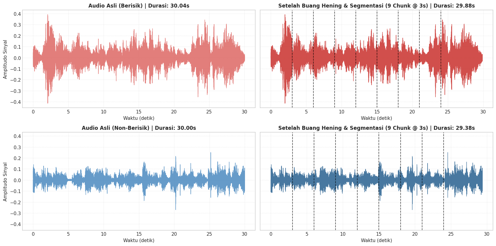
</div>
</div>
</section>
</section>
<hr class="docutils" />
<section id="teori-ekstraksi-fitur-akustik-dengan-librosa">
<h2>4. Teori Ekstraksi Fitur Akustik dengan Librosa<a class="headerlink" href="#teori-ekstraksi-fitur-akustik-dengan-librosa" title="Link to this heading">#</a></h2>
<p>Untuk mengukur perbedaan fisik dan psikoakustik antara suara lingkungan ramai (<em>berisik</em>) dan suara hening/tenang (<em>non-berisik</em>), kita mengekstrak grup fitur akustik fundamental sesuai acuan <strong>md.pdf</strong>:</p>
<section id="root-mean-square-rms-energy">
<h3>1. Root Mean Square (RMS) Energy<a class="headerlink" href="#root-mean-square-rms-energy" title="Link to this heading">#</a></h3>
<ul class="simple">
<li><p><strong>Formula Matematis:</strong>
$<span class="math notranslate nohighlight">\(\text{RMS} = \sqrt{\frac{1}{N}\sum_{n=1}^{N} x[n]^2}\)</span>$</p></li>
<li><p><strong>Fungsi Fisik:</strong> Mengukur magnitudo energi atau volume sinyal audio. Suasana berisik dengan obrolan banyak orang memiliki RMS yang jauh lebih tinggi dan dinamis dibanding suasana tenang.</p></li>
</ul>
</section>
<section id="spectral-centroid">
<h3>2. Spectral Centroid<a class="headerlink" href="#spectral-centroid" title="Link to this heading">#</a></h3>
<ul class="simple">
<li><p><strong>Formula Matematis:</strong>
$<span class="math notranslate nohighlight">\(\text{Centroid} = \frac{\sum_{k=1}^K f_k \cdot |X[k]|}{\sum_{k=1}^K |X[k]|}\)</span>$</p></li>
<li><p><strong>Fungsi Fisik:</strong> Titik pusat massa spektrum frekuensi (tingkat <em>brightness</em> atau kecerahan suara). Suara percakapan manusia memiliki konsentrasi frekuensi tengah (forman vokal), sedangkan dengung AC terkonsentrasi di frekuensi rendah.</p></li>
</ul>
</section>
<section id="zero-crossing-rate-zcr">
<h3>3. Zero Crossing Rate (ZCR)<a class="headerlink" href="#zero-crossing-rate-zcr" title="Link to this heading">#</a></h3>
<ul class="simple">
<li><p><strong>Formula Matematis:</strong>
$<span class="math notranslate nohighlight">\(\text{ZCR} = \frac{1}{2N}\sum_{n=1}^{N-1} |\text{sgn}(x[n]) - \text{sgn}(x[n-1])|\)</span>$</p></li>
<li><p><strong>Fungsi Fisik:</strong> Frekuensi perubahan tanda amplitudo sinyal melewati nol. Suara gaduh dan vokal frikatif memiliki nilai ZCR yang lebih tinggi.</p></li>
</ul>
</section>
<section id="mel-frequency-cepstral-coefficients-mfcc-13-koefisien">
<h3>4. Mel-Frequency Cepstral Coefficients (MFCC - 13 Koefisien)<a class="headerlink" href="#mel-frequency-cepstral-coefficients-mfcc-13-koefisien" title="Link to this heading">#</a></h3>
<ul class="simple">
<li><p>Sesuai dengan spesifikasi pada <strong>md.pdf</strong>, kita mengekstrak <strong>13 koefisien MFCC</strong> (<span class="math notranslate nohighlight">\(n\_mfcc = 13\)</span>).</p></li>
<li><p><strong>Fungsi Fisik:</strong> Merepresentasikan timbre dan bentuk spektral suara manusia dengan memetakan frekuensi ke skala Mel (meniru kurva sensitivitas koklea telinga manusia). Ini adalah fitur paling efektif untuk membedakan suara percakapan manusia dari suara latar mesin statis.</p></li>
</ul>
<div class="cell docutils container">
<div class="cell_input docutils container">
<div class="highlight-ipython3 notranslate"><div class="highlight"><pre><span></span><span class="c1"># Ambil 1 sampel chunk (3 detik) dari masing-masing kelas untuk demonstrasi fitur</span>
<span class="n">y_b_demo</span><span class="p">,</span> <span class="n">_</span> <span class="o">=</span> <span class="n">load_and_resample</span><span class="p">(</span><span class="n">files_berisik</span><span class="p">[</span><span class="mi">0</span><span class="p">])</span>
<span class="n">y_nb_demo</span><span class="p">,</span> <span class="n">_</span> <span class="o">=</span> <span class="n">load_and_resample</span><span class="p">(</span><span class="n">files_non_berisik</span><span class="p">[</span><span class="mi">0</span><span class="p">])</span>

<span class="n">chunk_b_demo</span> <span class="o">=</span> <span class="n">y_b_demo</span><span class="p">[:</span><span class="n">CHUNK_SAMPLES</span><span class="p">]</span>
<span class="n">chunk_nb_demo</span> <span class="o">=</span> <span class="n">y_nb_demo</span><span class="p">[:</span><span class="n">CHUNK_SAMPLES</span><span class="p">]</span>

<span class="c1"># Hitung Spektrogram STFT</span>
<span class="n">D_b</span> <span class="o">=</span> <span class="n">librosa</span><span class="o">.</span><span class="n">amplitude_to_db</span><span class="p">(</span><span class="n">np</span><span class="o">.</span><span class="n">abs</span><span class="p">(</span><span class="n">librosa</span><span class="o">.</span><span class="n">stft</span><span class="p">(</span><span class="n">chunk_b_demo</span><span class="p">)),</span> <span class="n">ref</span><span class="o">=</span><span class="n">np</span><span class="o">.</span><span class="n">max</span><span class="p">)</span>
<span class="n">D_nb</span> <span class="o">=</span> <span class="n">librosa</span><span class="o">.</span><span class="n">amplitude_to_db</span><span class="p">(</span><span class="n">np</span><span class="o">.</span><span class="n">abs</span><span class="p">(</span><span class="n">librosa</span><span class="o">.</span><span class="n">stft</span><span class="p">(</span><span class="n">chunk_nb_demo</span><span class="p">)),</span> <span class="n">ref</span><span class="o">=</span><span class="n">np</span><span class="o">.</span><span class="n">max</span><span class="p">)</span>

<span class="c1"># Hitung 13 Koefisien MFCC</span>
<span class="n">mfcc_b</span> <span class="o">=</span> <span class="n">librosa</span><span class="o">.</span><span class="n">feature</span><span class="o">.</span><span class="n">mfcc</span><span class="p">(</span><span class="n">y</span><span class="o">=</span><span class="n">chunk_b_demo</span><span class="p">,</span> <span class="n">sr</span><span class="o">=</span><span class="n">TARGET_SR</span><span class="p">,</span> <span class="n">n_mfcc</span><span class="o">=</span><span class="mi">13</span><span class="p">)</span>
<span class="n">mfcc_nb</span> <span class="o">=</span> <span class="n">librosa</span><span class="o">.</span><span class="n">feature</span><span class="o">.</span><span class="n">mfcc</span><span class="p">(</span><span class="n">y</span><span class="o">=</span><span class="n">chunk_nb_demo</span><span class="p">,</span> <span class="n">sr</span><span class="o">=</span><span class="n">TARGET_SR</span><span class="p">,</span> <span class="n">n_mfcc</span><span class="o">=</span><span class="mi">13</span><span class="p">)</span>

<span class="c1"># Visualisasi Plotting</span>
<span class="n">fig</span><span class="p">,</span> <span class="n">axes</span> <span class="o">=</span> <span class="n">plt</span><span class="o">.</span><span class="n">subplots</span><span class="p">(</span><span class="mi">2</span><span class="p">,</span> <span class="mi">2</span><span class="p">,</span> <span class="n">figsize</span><span class="o">=</span><span class="p">(</span><span class="mi">15</span><span class="p">,</span> <span class="mf">7.5</span><span class="p">))</span>

<span class="c1"># 1. Spektrogram Berisik</span>
<span class="n">img1</span> <span class="o">=</span> <span class="n">librosa</span><span class="o">.</span><span class="n">display</span><span class="o">.</span><span class="n">specshow</span><span class="p">(</span><span class="n">D_b</span><span class="p">,</span> <span class="n">sr</span><span class="o">=</span><span class="n">TARGET_SR</span><span class="p">,</span> <span class="n">x_axis</span><span class="o">=</span><span class="s1">&#39;time&#39;</span><span class="p">,</span> <span class="n">y_axis</span><span class="o">=</span><span class="s1">&#39;hz&#39;</span><span class="p">,</span> <span class="n">ax</span><span class="o">=</span><span class="n">axes</span><span class="p">[</span><span class="mi">0</span><span class="p">,</span> <span class="mi">0</span><span class="p">],</span> <span class="n">cmap</span><span class="o">=</span><span class="s1">&#39;inferno&#39;</span><span class="p">)</span>
<span class="n">axes</span><span class="p">[</span><span class="mi">0</span><span class="p">,</span> <span class="mi">0</span><span class="p">]</span><span class="o">.</span><span class="n">set_title</span><span class="p">(</span><span class="s2">&quot;Spektrogram Magnitudo (Kelas: Berisik)&quot;</span><span class="p">,</span> <span class="n">fontsize</span><span class="o">=</span><span class="mi">11</span><span class="p">,</span> <span class="n">fontweight</span><span class="o">=</span><span class="s1">&#39;bold&#39;</span><span class="p">)</span>
<span class="n">fig</span><span class="o">.</span><span class="n">colorbar</span><span class="p">(</span><span class="n">img1</span><span class="p">,</span> <span class="n">ax</span><span class="o">=</span><span class="n">axes</span><span class="p">[</span><span class="mi">0</span><span class="p">,</span> <span class="mi">0</span><span class="p">],</span> <span class="nb">format</span><span class="o">=</span><span class="s2">&quot;</span><span class="si">%+2.0f</span><span class="s2"> dB&quot;</span><span class="p">)</span>

<span class="c1"># 2. Spektrogram Non-Berisik</span>
<span class="n">img2</span> <span class="o">=</span> <span class="n">librosa</span><span class="o">.</span><span class="n">display</span><span class="o">.</span><span class="n">specshow</span><span class="p">(</span><span class="n">D_nb</span><span class="p">,</span> <span class="n">sr</span><span class="o">=</span><span class="n">TARGET_SR</span><span class="p">,</span> <span class="n">x_axis</span><span class="o">=</span><span class="s1">&#39;time&#39;</span><span class="p">,</span> <span class="n">y_axis</span><span class="o">=</span><span class="s1">&#39;hz&#39;</span><span class="p">,</span> <span class="n">ax</span><span class="o">=</span><span class="n">axes</span><span class="p">[</span><span class="mi">0</span><span class="p">,</span> <span class="mi">1</span><span class="p">],</span> <span class="n">cmap</span><span class="o">=</span><span class="s1">&#39;inferno&#39;</span><span class="p">)</span>
<span class="n">axes</span><span class="p">[</span><span class="mi">0</span><span class="p">,</span> <span class="mi">1</span><span class="p">]</span><span class="o">.</span><span class="n">set_title</span><span class="p">(</span><span class="s2">&quot;Spektrogram Magnitudo (Kelas: Non-Berisik)&quot;</span><span class="p">,</span> <span class="n">fontsize</span><span class="o">=</span><span class="mi">11</span><span class="p">,</span> <span class="n">fontweight</span><span class="o">=</span><span class="s1">&#39;bold&#39;</span><span class="p">)</span>
<span class="n">fig</span><span class="o">.</span><span class="n">colorbar</span><span class="p">(</span><span class="n">img2</span><span class="p">,</span> <span class="n">ax</span><span class="o">=</span><span class="n">axes</span><span class="p">[</span><span class="mi">0</span><span class="p">,</span> <span class="mi">1</span><span class="p">],</span> <span class="nb">format</span><span class="o">=</span><span class="s2">&quot;</span><span class="si">%+2.0f</span><span class="s2"> dB&quot;</span><span class="p">)</span>

<span class="c1"># 3. Heatmap MFCC Berisik</span>
<span class="n">img3</span> <span class="o">=</span> <span class="n">librosa</span><span class="o">.</span><span class="n">display</span><span class="o">.</span><span class="n">specshow</span><span class="p">(</span><span class="n">mfcc_b</span><span class="p">,</span> <span class="n">sr</span><span class="o">=</span><span class="n">TARGET_SR</span><span class="p">,</span> <span class="n">x_axis</span><span class="o">=</span><span class="s1">&#39;time&#39;</span><span class="p">,</span> <span class="n">ax</span><span class="o">=</span><span class="n">axes</span><span class="p">[</span><span class="mi">1</span><span class="p">,</span> <span class="mi">0</span><span class="p">],</span> <span class="n">cmap</span><span class="o">=</span><span class="s1">&#39;coolwarm&#39;</span><span class="p">)</span>
<span class="n">axes</span><span class="p">[</span><span class="mi">1</span><span class="p">,</span> <span class="mi">0</span><span class="p">]</span><span class="o">.</span><span class="n">set_title</span><span class="p">(</span><span class="s2">&quot;13 Koefisien MFCC (Kelas: Berisik)&quot;</span><span class="p">,</span> <span class="n">fontsize</span><span class="o">=</span><span class="mi">11</span><span class="p">,</span> <span class="n">fontweight</span><span class="o">=</span><span class="s1">&#39;bold&#39;</span><span class="p">)</span>
<span class="n">axes</span><span class="p">[</span><span class="mi">1</span><span class="p">,</span> <span class="mi">0</span><span class="p">]</span><span class="o">.</span><span class="n">set_ylabel</span><span class="p">(</span><span class="s2">&quot;Indeks MFCC&quot;</span><span class="p">)</span>
<span class="n">fig</span><span class="o">.</span><span class="n">colorbar</span><span class="p">(</span><span class="n">img3</span><span class="p">,</span> <span class="n">ax</span><span class="o">=</span><span class="n">axes</span><span class="p">[</span><span class="mi">1</span><span class="p">,</span> <span class="mi">0</span><span class="p">])</span>

<span class="c1"># 4. Heatmap MFCC Non-Berisik</span>
<span class="n">img4</span> <span class="o">=</span> <span class="n">librosa</span><span class="o">.</span><span class="n">display</span><span class="o">.</span><span class="n">specshow</span><span class="p">(</span><span class="n">mfcc_nb</span><span class="p">,</span> <span class="n">sr</span><span class="o">=</span><span class="n">TARGET_SR</span><span class="p">,</span> <span class="n">x_axis</span><span class="o">=</span><span class="s1">&#39;time&#39;</span><span class="p">,</span> <span class="n">ax</span><span class="o">=</span><span class="n">axes</span><span class="p">[</span><span class="mi">1</span><span class="p">,</span> <span class="mi">1</span><span class="p">],</span> <span class="n">cmap</span><span class="o">=</span><span class="s1">&#39;coolwarm&#39;</span><span class="p">)</span>
<span class="n">axes</span><span class="p">[</span><span class="mi">1</span><span class="p">,</span> <span class="mi">1</span><span class="p">]</span><span class="o">.</span><span class="n">set_title</span><span class="p">(</span><span class="s2">&quot;13 Koefisien MFCC (Kelas: Non-Berisik)&quot;</span><span class="p">,</span> <span class="n">fontsize</span><span class="o">=</span><span class="mi">11</span><span class="p">,</span> <span class="n">fontweight</span><span class="o">=</span><span class="s1">&#39;bold&#39;</span><span class="p">)</span>
<span class="n">axes</span><span class="p">[</span><span class="mi">1</span><span class="p">,</span> <span class="mi">1</span><span class="p">]</span><span class="o">.</span><span class="n">set_ylabel</span><span class="p">(</span><span class="s2">&quot;Indeks MFCC&quot;</span><span class="p">)</span>
<span class="n">fig</span><span class="o">.</span><span class="n">colorbar</span><span class="p">(</span><span class="n">img4</span><span class="p">,</span> <span class="n">ax</span><span class="o">=</span><span class="n">axes</span><span class="p">[</span><span class="mi">1</span><span class="p">,</span> <span class="mi">1</span><span class="p">])</span>

<span class="n">plt</span><span class="o">.</span><span class="n">tight_layout</span><span class="p">()</span>
<span class="n">plt</span><span class="o">.</span><span class="n">show</span><span class="p">()</span>
</pre></div>
</div>
</div>
<div class="cell_output docutils container">
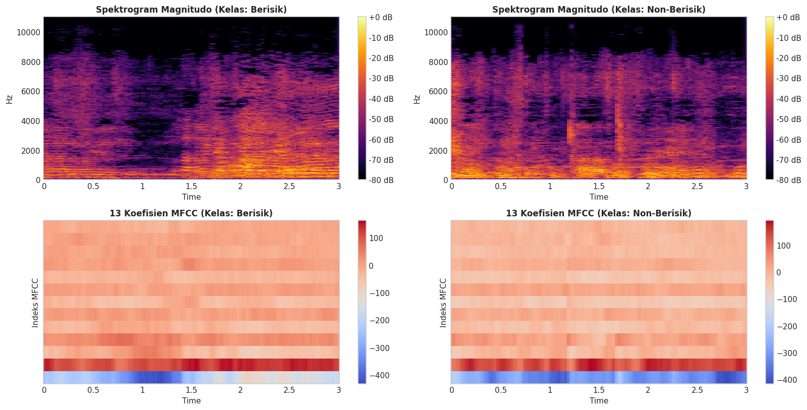
</div>
</div>
</section>
</section>
<hr class="docutils" />
<section id="teori-dan-implementasi-agregasi-fitur-feature-aggregation">
<h2>5. Teori dan Implementasi Agregasi Fitur (<em>Feature Aggregation</em>)<a class="headerlink" href="#teori-dan-implementasi-agregasi-fitur-feature-aggregation" title="Link to this heading">#</a></h2>
<section id="mengapa-agregasi-diperlukan">
<h3>Mengapa Agregasi Diperlukan?<a class="headerlink" href="#mengapa-agregasi-diperlukan" title="Link to this heading">#</a></h3>
<p>Ekstraksi fitur pada tingkat frame (<em>frame-level features</em>) menghasilkan deret matriks berdimensi:
$<span class="math notranslate nohighlight">\([\text{Jumlah Fitur} \times \text{Jumlah Frame Waktu}]\)</span>$</p>
<p>Karena durasi file audio bervariasi, jumlah frame waktu antar file berbeda-beda. Agar dapat diinputkan ke algoritma <em>Machine Learning</em>, matriks deret waktu diagregasikan menjadi satu vektor fitur statis berdimensi tetap:</p>
<ul class="simple">
<li><p><strong>Fitur RMS:</strong> Mean dan Std (2 fitur)</p></li>
<li><p><strong>Fitur Spectral Centroid:</strong> Mean dan Std (2 fitur)</p></li>
<li><p><strong>Fitur ZCR:</strong> Mean dan Std (2 fitur)</p></li>
<li><p><strong>Fitur MFCC (Sesuai md.pdf):</strong> 13 Koefisien Rata-rata (<code class="docutils literal notranslate"><span class="pre">mfcc1_mean</span></code> s.d. <code class="docutils literal notranslate"><span class="pre">mfcc13_mean</span></code>) (13 fitur)</p></li>
</ul>
<p><strong>Total Vektor Fitur: 19 Fitur Numerik Statis per Berkas Audio.</strong></p>
<div class="cell docutils container">
<div class="cell_input docutils container">
<div class="highlight-ipython3 notranslate"><div class="highlight"><pre><span></span><span class="k">def</span><span class="w"> </span><span class="nf">extract_and_aggregate</span><span class="p">(</span><span class="n">filepath</span><span class="p">,</span> <span class="n">label</span><span class="p">):</span>
<span class="w">    </span><span class="sd">&quot;&quot;&quot;</span>
<span class="sd">    Menjalankan alur lengkap untuk satu file audio:</span>
<span class="sd">    1. Load dan Resample ke 22.050 Hz</span>
<span class="sd">    2. Buang hening (top_db = 25)</span>
<span class="sd">    3. Segmentasi chunk (3 detik)</span>
<span class="sd">    4. Ekstraksi RMS, Centroid, ZCR, dan 13 Koefisien MFCC (sesuai md.pdf)</span>
<span class="sd">    5. Agregasi statistik: 19 Fitur Numerik Total</span>
<span class="sd">    &quot;&quot;&quot;</span>
    <span class="k">try</span><span class="p">:</span>
        <span class="c1"># 1. Resample</span>
        <span class="n">y</span><span class="p">,</span> <span class="n">sr</span> <span class="o">=</span> <span class="n">load_and_resample</span><span class="p">(</span><span class="n">filepath</span><span class="p">,</span> <span class="n">sr</span><span class="o">=</span><span class="n">TARGET_SR</span><span class="p">)</span>
        
        <span class="c1"># 2. Buang Hening</span>
        <span class="n">y_clean</span> <span class="o">=</span> <span class="n">remove_silence</span><span class="p">(</span><span class="n">y</span><span class="p">,</span> <span class="n">top_db</span><span class="o">=</span><span class="n">TOP_DB</span><span class="p">)</span>
        
        <span class="c1"># 3. Chunk</span>
        <span class="n">chunks</span> <span class="o">=</span> <span class="n">chunk_audio</span><span class="p">(</span><span class="n">y_clean</span><span class="p">,</span> <span class="n">chunk_samples</span><span class="o">=</span><span class="n">CHUNK_SAMPLES</span><span class="p">)</span>
        <span class="k">if</span> <span class="nb">len</span><span class="p">(</span><span class="n">chunks</span><span class="p">)</span> <span class="o">==</span> <span class="mi">0</span><span class="p">:</span>
            <span class="k">return</span> <span class="kc">None</span>
            
        <span class="c1"># 4. Ekstraksi Fitur Frame-Level pada Tiap Chunk</span>
        <span class="n">rms_list</span> <span class="o">=</span> <span class="p">[]</span>
        <span class="n">cent_list</span> <span class="o">=</span> <span class="p">[]</span>
        <span class="n">zcr_list</span> <span class="o">=</span> <span class="p">[]</span>
        <span class="n">mfcc_list</span> <span class="o">=</span> <span class="p">[]</span>
        
        <span class="k">for</span> <span class="n">ch</span> <span class="ow">in</span> <span class="n">chunks</span><span class="p">:</span>
            <span class="n">rms_list</span><span class="o">.</span><span class="n">append</span><span class="p">(</span><span class="n">librosa</span><span class="o">.</span><span class="n">feature</span><span class="o">.</span><span class="n">rms</span><span class="p">(</span><span class="n">y</span><span class="o">=</span><span class="n">ch</span><span class="p">))</span>
            <span class="n">cent_list</span><span class="o">.</span><span class="n">append</span><span class="p">(</span><span class="n">librosa</span><span class="o">.</span><span class="n">feature</span><span class="o">.</span><span class="n">spectral_centroid</span><span class="p">(</span><span class="n">y</span><span class="o">=</span><span class="n">ch</span><span class="p">,</span> <span class="n">sr</span><span class="o">=</span><span class="n">sr</span><span class="p">))</span>
            <span class="n">zcr_list</span><span class="o">.</span><span class="n">append</span><span class="p">(</span><span class="n">librosa</span><span class="o">.</span><span class="n">feature</span><span class="o">.</span><span class="n">zero_crossing_rate</span><span class="p">(</span><span class="n">y</span><span class="o">=</span><span class="n">ch</span><span class="p">))</span>
            <span class="n">mfcc_list</span><span class="o">.</span><span class="n">append</span><span class="p">(</span><span class="n">librosa</span><span class="o">.</span><span class="n">feature</span><span class="o">.</span><span class="n">mfcc</span><span class="p">(</span><span class="n">y</span><span class="o">=</span><span class="n">ch</span><span class="p">,</span> <span class="n">sr</span><span class="o">=</span><span class="n">sr</span><span class="p">,</span> <span class="n">n_mfcc</span><span class="o">=</span><span class="mi">13</span><span class="p">))</span>
            
        <span class="c1"># Gabungkan secara horizontal lintas waktu</span>
        <span class="n">cat_rms</span> <span class="o">=</span> <span class="n">np</span><span class="o">.</span><span class="n">hstack</span><span class="p">(</span><span class="n">rms_list</span><span class="p">)</span>
        <span class="n">cat_cent</span> <span class="o">=</span> <span class="n">np</span><span class="o">.</span><span class="n">hstack</span><span class="p">(</span><span class="n">cent_list</span><span class="p">)</span>
        <span class="n">cat_zcr</span> <span class="o">=</span> <span class="n">np</span><span class="o">.</span><span class="n">hstack</span><span class="p">(</span><span class="n">zcr_list</span><span class="p">)</span>
        <span class="n">cat_mfcc</span> <span class="o">=</span> <span class="n">np</span><span class="o">.</span><span class="n">hstack</span><span class="p">(</span><span class="n">mfcc_list</span><span class="p">)</span>
        
        <span class="c1"># 5. Agregasi Statistik (19 Fitur Total: 6 Temporal/Spektral + 13 MFCC)</span>
        <span class="n">record</span> <span class="o">=</span> <span class="p">{</span>
            <span class="s1">&#39;filename&#39;</span><span class="p">:</span> <span class="n">os</span><span class="o">.</span><span class="n">path</span><span class="o">.</span><span class="n">basename</span><span class="p">(</span><span class="n">filepath</span><span class="p">),</span>
            <span class="s1">&#39;label&#39;</span><span class="p">:</span> <span class="n">label</span><span class="p">,</span>
            <span class="s1">&#39;rms_mean&#39;</span><span class="p">:</span> <span class="nb">float</span><span class="p">(</span><span class="n">np</span><span class="o">.</span><span class="n">mean</span><span class="p">(</span><span class="n">cat_rms</span><span class="p">)),</span>
            <span class="s1">&#39;rms_std&#39;</span><span class="p">:</span> <span class="nb">float</span><span class="p">(</span><span class="n">np</span><span class="o">.</span><span class="n">std</span><span class="p">(</span><span class="n">cat_rms</span><span class="p">)),</span>
            <span class="s1">&#39;centroid_mean&#39;</span><span class="p">:</span> <span class="nb">float</span><span class="p">(</span><span class="n">np</span><span class="o">.</span><span class="n">mean</span><span class="p">(</span><span class="n">cat_cent</span><span class="p">)),</span>
            <span class="s1">&#39;centroid_std&#39;</span><span class="p">:</span> <span class="nb">float</span><span class="p">(</span><span class="n">np</span><span class="o">.</span><span class="n">std</span><span class="p">(</span><span class="n">cat_cent</span><span class="p">)),</span>
            <span class="s1">&#39;zcr_mean&#39;</span><span class="p">:</span> <span class="nb">float</span><span class="p">(</span><span class="n">np</span><span class="o">.</span><span class="n">mean</span><span class="p">(</span><span class="n">cat_zcr</span><span class="p">)),</span>
            <span class="s1">&#39;zcr_std&#39;</span><span class="p">:</span> <span class="nb">float</span><span class="p">(</span><span class="n">np</span><span class="o">.</span><span class="n">std</span><span class="p">(</span><span class="n">cat_zcr</span><span class="p">))</span>
        <span class="p">}</span>
        
        <span class="c1"># 13 Koefisien MFCC Rata-rata (Sesuai md.pdf)</span>
        <span class="k">for</span> <span class="n">k</span> <span class="ow">in</span> <span class="nb">range</span><span class="p">(</span><span class="mi">13</span><span class="p">):</span>
            <span class="n">record</span><span class="p">[</span><span class="sa">f</span><span class="s1">&#39;mfcc</span><span class="si">{</span><span class="n">k</span><span class="o">+</span><span class="mi">1</span><span class="si">}</span><span class="s1">_mean&#39;</span><span class="p">]</span> <span class="o">=</span> <span class="nb">float</span><span class="p">(</span><span class="n">np</span><span class="o">.</span><span class="n">mean</span><span class="p">(</span><span class="n">cat_mfcc</span><span class="p">[</span><span class="n">k</span><span class="p">,</span> <span class="p">:]))</span>
            
        <span class="k">return</span> <span class="n">record</span>
        
    <span class="k">except</span> <span class="ne">Exception</span> <span class="k">as</span> <span class="n">err</span><span class="p">:</span>
        <span class="nb">print</span><span class="p">(</span><span class="sa">f</span><span class="s2">&quot;[Lewati File] Gagal memproses </span><span class="si">{</span><span class="n">os</span><span class="o">.</span><span class="n">path</span><span class="o">.</span><span class="n">basename</span><span class="p">(</span><span class="n">filepath</span><span class="p">)</span><span class="si">}</span><span class="s2">: </span><span class="si">{</span><span class="n">err</span><span class="si">}</span><span class="s2">&quot;</span><span class="p">)</span>
        <span class="k">return</span> <span class="kc">None</span>

<span class="c1"># Cek apakah dataset fitur audio sudah pernah diekstrak sebelumnya</span>
<span class="n">dataset_csv_path</span> <span class="o">=</span> <span class="n">os</span><span class="o">.</span><span class="n">path</span><span class="o">.</span><span class="n">join</span><span class="p">(</span><span class="n">CURRENT_DIR</span><span class="p">,</span> <span class="s1">&#39;fitur_audio.csv&#39;</span><span class="p">)</span>

<span class="k">if</span> <span class="n">os</span><span class="o">.</span><span class="n">path</span><span class="o">.</span><span class="n">exists</span><span class="p">(</span><span class="n">dataset_csv_path</span><span class="p">):</span>
    <span class="nb">print</span><span class="p">(</span><span class="sa">f</span><span class="s2">&quot;[CACHE DITEMUKAN] Berkas fitur &#39;</span><span class="si">{</span><span class="n">os</span><span class="o">.</span><span class="n">path</span><span class="o">.</span><span class="n">basename</span><span class="p">(</span><span class="n">dataset_csv_path</span><span class="p">)</span><span class="si">}</span><span class="s2">&#39; sudah ada!&quot;</span><span class="p">)</span>
    <span class="nb">print</span><span class="p">(</span><span class="s2">&quot;Memuat dataset fitur secara instan (hanya butuh 0.1 detik, tidak perlu mengekstrak 198 file dari awal)...&quot;</span><span class="p">)</span>
    <span class="n">df_dataset</span> <span class="o">=</span> <span class="n">pd</span><span class="o">.</span><span class="n">read_csv</span><span class="p">(</span><span class="n">dataset_csv_path</span><span class="p">)</span>
<span class="k">else</span><span class="p">:</span>
    <span class="c1"># Eksekusi Batch Processing untuk Seluruh File Dataset jika berkas CSV belum ada</span>
    <span class="nb">print</span><span class="p">(</span><span class="s2">&quot;Memulai proses batch ekstraksi dan agregasi fitur audio (13 Koefisien MFCC)...&quot;</span><span class="p">)</span>
    <span class="n">extracted_records</span> <span class="o">=</span> <span class="p">[]</span>

    <span class="k">for</span> <span class="n">label</span><span class="p">,</span> <span class="n">file_list</span> <span class="ow">in</span> <span class="p">[(</span><span class="s1">&#39;berisik&#39;</span><span class="p">,</span> <span class="n">files_berisik</span><span class="p">),</span> <span class="p">(</span><span class="s1">&#39;non-berisik&#39;</span><span class="p">,</span> <span class="n">files_non_berisik</span><span class="p">)]:</span>
        <span class="nb">print</span><span class="p">(</span><span class="sa">f</span><span class="s2">&quot;-&gt; Memproses folder &#39;</span><span class="si">{</span><span class="n">label</span><span class="si">}</span><span class="s2">&#39; (</span><span class="si">{</span><span class="nb">len</span><span class="p">(</span><span class="n">file_list</span><span class="p">)</span><span class="si">}</span><span class="s2"> file)...&quot;</span><span class="p">)</span>
        <span class="k">for</span> <span class="n">f</span> <span class="ow">in</span> <span class="n">file_list</span><span class="p">:</span>
            <span class="n">rec</span> <span class="o">=</span> <span class="n">extract_and_aggregate</span><span class="p">(</span><span class="n">f</span><span class="p">,</span> <span class="n">label</span><span class="p">)</span>
            <span class="k">if</span> <span class="n">rec</span> <span class="ow">is</span> <span class="ow">not</span> <span class="kc">None</span><span class="p">:</span>
                <span class="n">extracted_records</span><span class="o">.</span><span class="n">append</span><span class="p">(</span><span class="n">rec</span><span class="p">)</span>

    <span class="c1"># Konversi ke pandas DataFrame</span>
    <span class="n">df_dataset</span> <span class="o">=</span> <span class="n">pd</span><span class="o">.</span><span class="n">DataFrame</span><span class="p">(</span><span class="n">extracted_records</span><span class="p">)</span>

    <span class="c1"># Simpan dataset lengkap ke CSV</span>
    <span class="n">df_dataset</span><span class="o">.</span><span class="n">to_csv</span><span class="p">(</span><span class="n">dataset_csv_path</span><span class="p">,</span> <span class="n">index</span><span class="o">=</span><span class="kc">False</span><span class="p">)</span>

<span class="nb">print</span><span class="p">(</span><span class="sa">f</span><span class="s2">&quot;</span><span class="se">\n</span><span class="s2">[SUKSES] Seluruh ekstraksi selesai!&quot;</span><span class="p">)</span>
<span class="nb">print</span><span class="p">(</span><span class="sa">f</span><span class="s2">&quot;Total sampel berhasil diekstrak : </span><span class="si">{</span><span class="nb">len</span><span class="p">(</span><span class="n">df_dataset</span><span class="p">)</span><span class="si">}</span><span class="s2"> sampel&quot;</span><span class="p">)</span>
<span class="nb">print</span><span class="p">(</span><span class="sa">f</span><span class="s2">&quot;Dimensi matriks dataset         : </span><span class="si">{</span><span class="n">df_dataset</span><span class="o">.</span><span class="n">shape</span><span class="p">[</span><span class="mi">0</span><span class="p">]</span><span class="si">}</span><span class="s2"> baris x </span><span class="si">{</span><span class="n">df_dataset</span><span class="o">.</span><span class="n">shape</span><span class="p">[</span><span class="mi">1</span><span class="p">]</span><span class="si">}</span><span class="s2"> kolom (19 fitur numerik)&quot;</span><span class="p">)</span>
<span class="nb">print</span><span class="p">(</span><span class="sa">f</span><span class="s2">&quot;File CSV dataset lengkap        : </span><span class="si">{</span><span class="n">dataset_csv_path</span><span class="si">}</span><span class="s2">&quot;</span><span class="p">)</span>
</pre></div>
</div>
</div>
<div class="cell_output docutils container">
<div class="output stream highlight-myst-ansi notranslate"><div class="highlight"><pre><span></span>[CACHE DITEMUKAN] Berkas fitur &#39;fitur_audio.csv&#39; sudah ada!
Memuat dataset fitur secara instan (hanya butuh 0.1 detik, tidak perlu mengekstrak 198 file dari awal)...

[SUKSES] Seluruh ekstraksi selesai!
Total sampel berhasil diekstrak : 200 sampel
Dimensi matriks dataset         : 200 baris x 21 kolom (19 fitur numerik)
File CSV dataset lengkap        : C:\Users\OKAN\OneDrive\Dokumen\PSD\materi\audio\fitur_audio.csv
</pre></div>
</div>
</div>
</div>
</section>
<hr class="docutils" />
<section id="ringkasan-tabel-dataset-hasil-agregasi-fitur">
<h3>Ringkasan Tabel Dataset Hasil Agregasi Fitur<a class="headerlink" href="#ringkasan-tabel-dataset-hasil-agregasi-fitur" title="Link to this heading">#</a></h3>
<p>Berikut disajikan cuplikan 5 baris pertama data, jumlah distribusi sampel per kelas target, serta statistik deskriptif dari fitur-fitur utama.</p>
<div class="cell docutils container">
<div class="cell_input docutils container">
<div class="highlight-ipython3 notranslate"><div class="highlight"><pre><span></span><span class="c1"># 1. Tampilkan 5 baris pertama untuk kolom terpilih</span>
<span class="n">preview_cols</span> <span class="o">=</span> <span class="p">[</span><span class="s1">&#39;filename&#39;</span><span class="p">,</span> <span class="s1">&#39;label&#39;</span><span class="p">,</span> <span class="s1">&#39;rms_mean&#39;</span><span class="p">,</span> <span class="s1">&#39;rms_std&#39;</span><span class="p">,</span> <span class="s1">&#39;centroid_mean&#39;</span><span class="p">,</span> <span class="s1">&#39;zcr_mean&#39;</span><span class="p">,</span> <span class="s1">&#39;mfcc1_mean&#39;</span><span class="p">,</span> <span class="s1">&#39;mfcc2_mean&#39;</span><span class="p">]</span>
<span class="nb">print</span><span class="p">(</span><span class="s2">&quot;5 Baris Pertama Dataset Fitur Audio (Kolom Terpilih):&quot;</span><span class="p">)</span>
<span class="nb">print</span><span class="p">(</span><span class="n">df_dataset</span><span class="p">[</span><span class="n">preview_cols</span><span class="p">]</span><span class="o">.</span><span class="n">head</span><span class="p">())</span>

<span class="c1"># 2. Distribusi Frekuensi Label</span>
<span class="nb">print</span><span class="p">(</span><span class="s2">&quot;</span><span class="se">\n</span><span class="s2">Distribusi Jumlah Sampel per Kelas:&quot;</span><span class="p">)</span>
<span class="nb">print</span><span class="p">(</span><span class="n">df_dataset</span><span class="p">[</span><span class="s1">&#39;label&#39;</span><span class="p">]</span><span class="o">.</span><span class="n">value_counts</span><span class="p">())</span>

<span class="c1"># 3. Statistik Deskriptif Fitur Akustik Utama</span>
<span class="nb">print</span><span class="p">(</span><span class="s2">&quot;</span><span class="se">\n</span><span class="s2">Statistik Deskriptif Fitur Inti:&quot;</span><span class="p">)</span>
<span class="nb">print</span><span class="p">(</span><span class="n">df_dataset</span><span class="p">[[</span><span class="s1">&#39;rms_mean&#39;</span><span class="p">,</span> <span class="s1">&#39;rms_std&#39;</span><span class="p">,</span> <span class="s1">&#39;centroid_mean&#39;</span><span class="p">,</span> <span class="s1">&#39;centroid_std&#39;</span><span class="p">,</span> <span class="s1">&#39;zcr_mean&#39;</span><span class="p">,</span> <span class="s1">&#39;zcr_std&#39;</span><span class="p">]]</span><span class="o">.</span><span class="n">describe</span><span class="p">()</span><span class="o">.</span><span class="n">round</span><span class="p">(</span><span class="mi">4</span><span class="p">)</span><span class="o">.</span><span class="n">T</span><span class="p">)</span>
</pre></div>
</div>
</div>
<div class="cell_output docutils container">
<div class="output stream highlight-myst-ansi notranslate"><div class="highlight"><pre><span></span>5 Baris Pertama Dataset Fitur Audio (Kolom Terpilih):
                 filename    label  rms_mean   rms_std  centroid_mean  \
0  24-003 berisik (1).mp3  berisik  0.041020  0.023591    1778.424143   
1  24-003 berisik (2).mp3  berisik  0.085737  0.047357    2081.668010   
2  24-003 berisik (3).mp3  berisik  0.061074  0.039236    2868.356742   
3    24-006 berisik 1.mp3  berisik  0.041173  0.014651    1643.889474   
4    24-006 berisik 2.mp3  berisik  0.031146  0.014470    1563.678043   

   zcr_mean  mfcc1_mean  mfcc2_mean  
0  0.080509 -256.290924  126.215157  
1  0.144793 -234.832291  115.400345  
2  0.234385 -272.324890   84.247063  
3  0.072573 -221.300980  134.612183  
4  0.065951 -266.434723  138.757507  

Distribusi Jumlah Sampel per Kelas:
label
berisik        100
non-berisik    100
Name: count, dtype: int64

Statistik Deskriptif Fitur Inti:
               count       mean       std       min        25%        50%  \
rms_mean       200.0     0.0637    0.0609    0.0011     0.0198     0.0429   
rms_std        200.0     0.0342    0.0312    0.0005     0.0122     0.0248   
centroid_mean  200.0  1722.4921  610.7360  726.1897  1336.8116  1598.1515   
centroid_std   200.0   455.9746  189.4695  110.7890   313.8263   413.6885   
zcr_mean       200.0     0.0864    0.0444    0.0245     0.0615     0.0736   
zcr_std        200.0     0.0347    0.0202    0.0083     0.0225     0.0278   

                     75%        max  
rms_mean          0.0947     0.2935  
rms_std           0.0521     0.1790  
centroid_mean  1919.6192  3935.3956  
centroid_std    558.5034   942.9440  
zcr_mean          0.0933     0.2858  
zcr_std           0.0401     0.1150  
</pre></div>
</div>
</div>
</div>
</section>
</section>
<hr class="docutils" />
<section id="analisis-eksploratif-data-fitur-eda">
<h2>6. Analisis Eksploratif Data Fitur (EDA)<a class="headerlink" href="#analisis-eksploratif-data-fitur-eda" title="Link to this heading">#</a></h2>
<p>Analisis eksplorasi visual dilakukan untuk membuktikan secara empiris apakah fitur-fitur yang diekstraksi (<code class="docutils literal notranslate"><span class="pre">RMS</span></code>, <code class="docutils literal notranslate"><span class="pre">Spectral</span> <span class="pre">Centroid</span></code>, <code class="docutils literal notranslate"><span class="pre">ZCR</span></code>, dan <code class="docutils literal notranslate"><span class="pre">MFCC</span></code>) memiliki <strong>daya pembeda (<em>separability</em>)</strong> yang kuat antara kelas <code class="docutils literal notranslate"><span class="pre">berisik</span></code> dan <code class="docutils literal notranslate"><span class="pre">non-berisik</span></code>:</p>
<ol class="arabic simple">
<li><p><strong>Boxplot Komparasi:</strong> Membandingkan median, kuartil (Q1 &amp; Q3), serta keberadaan pencilan (<em>outliers</em>) pada fitur RMS, Centroid, dan ZCR untuk kedua kelas.</p></li>
<li><p><strong>Profil Rata-rata 13 Koefisien MFCC:</strong> Membandingkan kurva selubung spektral kepstral antara suara berisik dan non-berisik.</p></li>
</ol>
<div class="cell docutils container">
<div class="cell_input docutils container">
<div class="highlight-ipython3 notranslate"><div class="highlight"><pre><span></span><span class="c1"># 1. Boxplot Komparasi Fitur Inti</span>
<span class="n">fig</span><span class="p">,</span> <span class="n">axes</span> <span class="o">=</span> <span class="n">plt</span><span class="o">.</span><span class="n">subplots</span><span class="p">(</span><span class="mi">1</span><span class="p">,</span> <span class="mi">3</span><span class="p">,</span> <span class="n">figsize</span><span class="o">=</span><span class="p">(</span><span class="mi">15</span><span class="p">,</span> <span class="mf">4.8</span><span class="p">))</span>

<span class="n">eda_features</span> <span class="o">=</span> <span class="p">[</span>
    <span class="p">(</span><span class="s1">&#39;rms_mean&#39;</span><span class="p">,</span> <span class="s1">&#39;RMS Energy (Rata-rata)&#39;</span><span class="p">,</span> <span class="s1">&#39;Energi Amplitudo&#39;</span><span class="p">,</span> <span class="p">[</span><span class="s1">&#39;#e74c3c&#39;</span><span class="p">,</span> <span class="s1">&#39;#3498db&#39;</span><span class="p">]),</span>
    <span class="p">(</span><span class="s1">&#39;centroid_mean&#39;</span><span class="p">,</span> <span class="s1">&#39;Spectral Centroid (Rata-rata)&#39;</span><span class="p">,</span> <span class="s1">&#39;Frekuensi (Hz)&#39;</span><span class="p">,</span> <span class="p">[</span><span class="s1">&#39;#e67e22&#39;</span><span class="p">,</span> <span class="s1">&#39;#2ecc71&#39;</span><span class="p">]),</span>
    <span class="p">(</span><span class="s1">&#39;zcr_mean&#39;</span><span class="p">,</span> <span class="s1">&#39;Zero Crossing Rate (Rata-rata)&#39;</span><span class="p">,</span> <span class="s1">&#39;Rasio Perlintasan Nol&#39;</span><span class="p">,</span> <span class="p">[</span><span class="s1">&#39;#9b59b6&#39;</span><span class="p">,</span> <span class="s1">&#39;#1abc9c&#39;</span><span class="p">])</span>
<span class="p">]</span>

<span class="k">for</span> <span class="n">idx</span><span class="p">,</span> <span class="p">(</span><span class="n">col_name</span><span class="p">,</span> <span class="n">title</span><span class="p">,</span> <span class="n">y_lbl</span><span class="p">,</span> <span class="n">palette</span><span class="p">)</span> <span class="ow">in</span> <span class="nb">enumerate</span><span class="p">(</span><span class="n">eda_features</span><span class="p">):</span>
    <span class="n">sns</span><span class="o">.</span><span class="n">boxplot</span><span class="p">(</span><span class="n">data</span><span class="o">=</span><span class="n">df_dataset</span><span class="p">,</span> <span class="n">x</span><span class="o">=</span><span class="s1">&#39;label&#39;</span><span class="p">,</span> <span class="n">y</span><span class="o">=</span><span class="n">col_name</span><span class="p">,</span> <span class="n">ax</span><span class="o">=</span><span class="n">axes</span><span class="p">[</span><span class="n">idx</span><span class="p">],</span> <span class="n">palette</span><span class="o">=</span><span class="n">palette</span><span class="p">)</span>
    <span class="n">axes</span><span class="p">[</span><span class="n">idx</span><span class="p">]</span><span class="o">.</span><span class="n">set_title</span><span class="p">(</span><span class="n">title</span><span class="p">,</span> <span class="n">fontsize</span><span class="o">=</span><span class="mi">11</span><span class="p">,</span> <span class="n">fontweight</span><span class="o">=</span><span class="s1">&#39;bold&#39;</span><span class="p">)</span>
    <span class="n">axes</span><span class="p">[</span><span class="n">idx</span><span class="p">]</span><span class="o">.</span><span class="n">set_xlabel</span><span class="p">(</span><span class="s2">&quot;Kelas Audio&quot;</span><span class="p">)</span>
    <span class="n">axes</span><span class="p">[</span><span class="n">idx</span><span class="p">]</span><span class="o">.</span><span class="n">set_ylabel</span><span class="p">(</span><span class="n">y_lbl</span><span class="p">)</span>
    <span class="n">axes</span><span class="p">[</span><span class="n">idx</span><span class="p">]</span><span class="o">.</span><span class="n">grid</span><span class="p">(</span><span class="kc">True</span><span class="p">,</span> <span class="n">linestyle</span><span class="o">=</span><span class="s1">&#39;:&#39;</span><span class="p">,</span> <span class="n">alpha</span><span class="o">=</span><span class="mf">0.6</span><span class="p">)</span>

<span class="n">plt</span><span class="o">.</span><span class="n">tight_layout</span><span class="p">()</span>
<span class="n">plt</span><span class="o">.</span><span class="n">show</span><span class="p">()</span>

<span class="c1"># 2. Kurva Profil Rata-Rata 13 Koefisien MFCC</span>
<span class="n">mfcc_cols</span> <span class="o">=</span> <span class="p">[</span><span class="sa">f</span><span class="s1">&#39;mfcc</span><span class="si">{</span><span class="n">i</span><span class="si">}</span><span class="s1">_mean&#39;</span> <span class="k">for</span> <span class="n">i</span> <span class="ow">in</span> <span class="nb">range</span><span class="p">(</span><span class="mi">1</span><span class="p">,</span> <span class="mi">14</span><span class="p">)]</span>
<span class="n">mfcc_class_profile</span> <span class="o">=</span> <span class="n">df_dataset</span><span class="o">.</span><span class="n">groupby</span><span class="p">(</span><span class="s1">&#39;label&#39;</span><span class="p">)[</span><span class="n">mfcc_cols</span><span class="p">]</span><span class="o">.</span><span class="n">mean</span><span class="p">()</span>

<span class="n">plt</span><span class="o">.</span><span class="n">figure</span><span class="p">(</span><span class="n">figsize</span><span class="o">=</span><span class="p">(</span><span class="mi">12</span><span class="p">,</span> <span class="mf">4.5</span><span class="p">))</span>
<span class="n">plt</span><span class="o">.</span><span class="n">plot</span><span class="p">(</span><span class="nb">range</span><span class="p">(</span><span class="mi">1</span><span class="p">,</span> <span class="mi">14</span><span class="p">),</span> <span class="n">mfcc_class_profile</span><span class="o">.</span><span class="n">loc</span><span class="p">[</span><span class="s1">&#39;berisik&#39;</span><span class="p">],</span> <span class="n">marker</span><span class="o">=</span><span class="s1">&#39;o&#39;</span><span class="p">,</span> <span class="n">linewidth</span><span class="o">=</span><span class="mf">2.2</span><span class="p">,</span> <span class="n">color</span><span class="o">=</span><span class="s1">&#39;#e74c3c&#39;</span><span class="p">,</span> <span class="n">label</span><span class="o">=</span><span class="s1">&#39;Kelas: Berisik&#39;</span><span class="p">)</span>
<span class="n">plt</span><span class="o">.</span><span class="n">plot</span><span class="p">(</span><span class="nb">range</span><span class="p">(</span><span class="mi">1</span><span class="p">,</span> <span class="mi">14</span><span class="p">),</span> <span class="n">mfcc_class_profile</span><span class="o">.</span><span class="n">loc</span><span class="p">[</span><span class="s1">&#39;non-berisik&#39;</span><span class="p">],</span> <span class="n">marker</span><span class="o">=</span><span class="s1">&#39;s&#39;</span><span class="p">,</span> <span class="n">linewidth</span><span class="o">=</span><span class="mf">2.2</span><span class="p">,</span> <span class="n">color</span><span class="o">=</span><span class="s1">&#39;#2980b9&#39;</span><span class="p">,</span> <span class="n">label</span><span class="o">=</span><span class="s1">&#39;Kelas: Non-Berisik&#39;</span><span class="p">)</span>

<span class="n">plt</span><span class="o">.</span><span class="n">title</span><span class="p">(</span><span class="s2">&quot;Profil Rata-rata 13 Koefisien MFCC Antar Kelas&quot;</span><span class="p">,</span> <span class="n">fontsize</span><span class="o">=</span><span class="mi">12</span><span class="p">,</span> <span class="n">fontweight</span><span class="o">=</span><span class="s1">&#39;bold&#39;</span><span class="p">)</span>
<span class="n">plt</span><span class="o">.</span><span class="n">xlabel</span><span class="p">(</span><span class="s2">&quot;Indeks Koefisien MFCC (1 s/d 13)&quot;</span><span class="p">)</span>
<span class="n">plt</span><span class="o">.</span><span class="n">ylabel</span><span class="p">(</span><span class="s2">&quot;Nilai Rata-rata Koefisien&quot;</span><span class="p">)</span>
<span class="n">plt</span><span class="o">.</span><span class="n">xticks</span><span class="p">(</span><span class="nb">range</span><span class="p">(</span><span class="mi">1</span><span class="p">,</span> <span class="mi">14</span><span class="p">))</span>
<span class="n">plt</span><span class="o">.</span><span class="n">grid</span><span class="p">(</span><span class="kc">True</span><span class="p">,</span> <span class="n">linestyle</span><span class="o">=</span><span class="s1">&#39;:&#39;</span><span class="p">,</span> <span class="n">alpha</span><span class="o">=</span><span class="mf">0.6</span><span class="p">)</span>
<span class="n">plt</span><span class="o">.</span><span class="n">legend</span><span class="p">(</span><span class="n">frameon</span><span class="o">=</span><span class="kc">True</span><span class="p">,</span> <span class="n">facecolor</span><span class="o">=</span><span class="s1">&#39;white&#39;</span><span class="p">,</span> <span class="n">framealpha</span><span class="o">=</span><span class="mf">0.9</span><span class="p">)</span>
<span class="n">plt</span><span class="o">.</span><span class="n">tight_layout</span><span class="p">()</span>
<span class="n">plt</span><span class="o">.</span><span class="n">show</span><span class="p">()</span>
</pre></div>
</div>
</div>
<div class="cell_output docutils container">
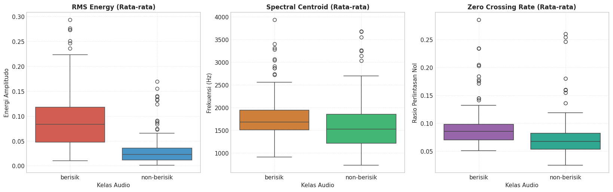
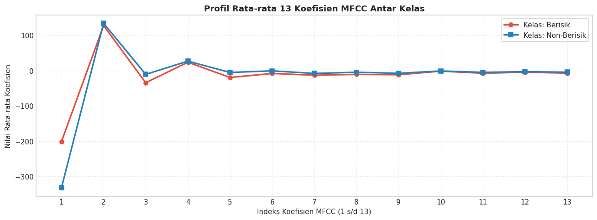
</div>
</div>
</section>
<hr class="docutils" />
<section id="pembagian-data-data-splitting-train-test-split">
<h2>7. Pembagian Data (<em>Data Splitting: Train/Test Split</em>)<a class="headerlink" href="#pembagian-data-data-splitting-train-test-split" title="Link to this heading">#</a></h2>
<section id="metodologi-dan-kaidah-pembagian-dataset">
<h3>Metodologi dan Kaidah Pembagian Dataset<a class="headerlink" href="#metodologi-dan-kaidah-pembagian-dataset" title="Link to this heading">#</a></h3>
<p>Dalam metodologi <em>Data Science</em>, dataset harus dipisahkan menjadi dua himpunan independen:</p>
<ol class="arabic simple">
<li><p><strong>Data Latih (<em>Training Set</em>) - 80%:</strong> Digunakan oleh algoritma machine learning untuk mempelajari bobot, koefisien, dan batas keputusan (<em>decision boundary</em>).</p></li>
<li><p><strong>Data Uji (<em>Testing Set</em>) - 20%:</strong> Berfungsi sebagai data evaluasi murni (<em>unseen data</em>) untuk mengukur kemampuan generalisasi model terhadap data baru serta mendeteksi adanya <em>overfitting</em>.</p></li>
</ol>
</section>
<section id="prinsip-penting-yang-diterapkan">
<h3>Prinsip Penting yang Diterapkan:<a class="headerlink" href="#prinsip-penting-yang-diterapkan" title="Link to this heading">#</a></h3>
<ul class="simple">
<li><p><strong>Stratified Sampling (<code class="docutils literal notranslate"><span class="pre">stratify=y</span></code>):</strong><br />
Pembagian secara terstratifikasi menjamin bahwa proporsi kelas <code class="docutils literal notranslate"><span class="pre">berisik</span></code> dan <code class="docutils literal notranslate"><span class="pre">non-berisik</span></code> pada data latih dan data uji persis proporsional dengan dataset populasi awal. Hal ini mencegah bias evaluasi yang disebabkan oleh pergeseran distribusi kelas (<em>class distribution skew</em>).</p></li>
<li><p><strong>Reproducibility (<code class="docutils literal notranslate"><span class="pre">random_state=42</span></code>):</strong><br />
Menetapkan <em>seed</em> acak tetap sehingga eksperimen bersifat deterministik dan dapat direplikasi secara identik oleh siapa pun.</p></li>
<li><p><strong>Penyimpanan:</strong> Data latih dan uji disimpan terpisah ke dalam berkas <strong><code class="docutils literal notranslate"><span class="pre">train_data.csv</span></code></strong> dan <strong><code class="docutils literal notranslate"><span class="pre">test_data.csv</span></code></strong>.</p></li>
</ul>
<div class="cell docutils container">
<div class="cell_input docutils container">
<div class="highlight-ipython3 notranslate"><div class="highlight"><pre><span></span><span class="c1"># Pisahkan Matriks Fitur (X) dan Target Label (y)</span>
<span class="n">feature_columns</span> <span class="o">=</span> <span class="p">[</span><span class="n">col</span> <span class="k">for</span> <span class="n">col</span> <span class="ow">in</span> <span class="n">df_dataset</span><span class="o">.</span><span class="n">columns</span> <span class="k">if</span> <span class="n">col</span> <span class="ow">not</span> <span class="ow">in</span> <span class="p">[</span><span class="s1">&#39;filename&#39;</span><span class="p">,</span> <span class="s1">&#39;label&#39;</span><span class="p">]]</span>
<span class="n">X</span> <span class="o">=</span> <span class="n">df_dataset</span><span class="p">[[</span><span class="s1">&#39;filename&#39;</span><span class="p">]</span> <span class="o">+</span> <span class="n">feature_columns</span><span class="p">]</span>
<span class="n">y</span> <span class="o">=</span> <span class="n">df_dataset</span><span class="p">[</span><span class="s1">&#39;label&#39;</span><span class="p">]</span>

<span class="c1"># Pembagian Dataset 80:20 Terstratifikasi</span>
<span class="n">X_train</span><span class="p">,</span> <span class="n">X_test</span><span class="p">,</span> <span class="n">y_train</span><span class="p">,</span> <span class="n">y_test</span> <span class="o">=</span> <span class="n">train_test_split</span><span class="p">(</span>
    <span class="n">X</span><span class="p">,</span> <span class="n">y</span><span class="p">,</span>
    <span class="n">test_size</span><span class="o">=</span><span class="mf">0.2</span><span class="p">,</span>
    <span class="n">random_state</span><span class="o">=</span><span class="mi">42</span><span class="p">,</span>
    <span class="n">stratify</span><span class="o">=</span><span class="n">y</span>
<span class="p">)</span>

<span class="c1"># Susun kembali DataFrame Train dan Test dengan menyertakan kolom label</span>
<span class="n">train_df</span> <span class="o">=</span> <span class="n">X_train</span><span class="o">.</span><span class="n">copy</span><span class="p">()</span>
<span class="n">train_df</span><span class="o">.</span><span class="n">insert</span><span class="p">(</span><span class="mi">1</span><span class="p">,</span> <span class="s1">&#39;label&#39;</span><span class="p">,</span> <span class="n">y_train</span><span class="p">)</span>

<span class="n">test_df</span> <span class="o">=</span> <span class="n">X_test</span><span class="o">.</span><span class="n">copy</span><span class="p">()</span>
<span class="n">test_df</span><span class="o">.</span><span class="n">insert</span><span class="p">(</span><span class="mi">1</span><span class="p">,</span> <span class="s1">&#39;label&#39;</span><span class="p">,</span> <span class="n">y_test</span><span class="p">)</span>

<span class="c1"># Simpan ke Berkas CSV</span>
<span class="n">train_csv_path</span> <span class="o">=</span> <span class="n">os</span><span class="o">.</span><span class="n">path</span><span class="o">.</span><span class="n">join</span><span class="p">(</span><span class="n">CURRENT_DIR</span><span class="p">,</span> <span class="s1">&#39;train_data.csv&#39;</span><span class="p">)</span>
<span class="n">test_csv_path</span> <span class="o">=</span> <span class="n">os</span><span class="o">.</span><span class="n">path</span><span class="o">.</span><span class="n">join</span><span class="p">(</span><span class="n">CURRENT_DIR</span><span class="p">,</span> <span class="s1">&#39;test_data.csv&#39;</span><span class="p">)</span>

<span class="n">train_df</span><span class="o">.</span><span class="n">to_csv</span><span class="p">(</span><span class="n">train_csv_path</span><span class="p">,</span> <span class="n">index</span><span class="o">=</span><span class="kc">False</span><span class="p">)</span>
<span class="n">test_df</span><span class="o">.</span><span class="n">to_csv</span><span class="p">(</span><span class="n">test_csv_path</span><span class="p">,</span> <span class="n">index</span><span class="o">=</span><span class="kc">False</span><span class="p">)</span>

<span class="c1"># Tampilkan Laporan Hasil Pemisahan</span>
<span class="nb">print</span><span class="p">(</span><span class="s2">&quot;=&quot;</span> <span class="o">*</span> <span class="mi">65</span><span class="p">)</span>
<span class="nb">print</span><span class="p">(</span><span class="s2">&quot;             LAPORAN PEMBAGIAN DATASET (TRAIN / TEST)            &quot;</span><span class="p">)</span>
<span class="nb">print</span><span class="p">(</span><span class="s2">&quot;=&quot;</span> <span class="o">*</span> <span class="mi">65</span><span class="p">)</span>
<span class="nb">print</span><span class="p">(</span><span class="sa">f</span><span class="s2">&quot;Total Sampel Dataset Asli : </span><span class="si">{</span><span class="nb">len</span><span class="p">(</span><span class="n">df_dataset</span><span class="p">)</span><span class="si">}</span><span class="s2"> sampel (100%)&quot;</span><span class="p">)</span>
<span class="nb">print</span><span class="p">(</span><span class="sa">f</span><span class="s2">&quot;Jumlah Fitur Numerik      : </span><span class="si">{</span><span class="nb">len</span><span class="p">(</span><span class="n">feature_columns</span><span class="p">)</span><span class="si">}</span><span class="s2"> fitur (13 koefisien MFCC)&quot;</span><span class="p">)</span>
<span class="nb">print</span><span class="p">(</span><span class="sa">f</span><span class="s2">&quot;Jumlah Data Latih (Train) : </span><span class="si">{</span><span class="nb">len</span><span class="p">(</span><span class="n">train_df</span><span class="p">)</span><span class="si">}</span><span class="s2"> sampel (</span><span class="si">{</span><span class="nb">len</span><span class="p">(</span><span class="n">train_df</span><span class="p">)</span><span class="o">/</span><span class="nb">len</span><span class="p">(</span><span class="n">df_dataset</span><span class="p">)</span><span class="o">*</span><span class="mi">100</span><span class="si">:</span><span class="s2">.1f</span><span class="si">}</span><span class="s2">%)&quot;</span><span class="p">)</span>
<span class="nb">print</span><span class="p">(</span><span class="sa">f</span><span class="s2">&quot;Jumlah Data Uji (Test)    : </span><span class="si">{</span><span class="nb">len</span><span class="p">(</span><span class="n">test_df</span><span class="p">)</span><span class="si">}</span><span class="s2"> sampel (</span><span class="si">{</span><span class="nb">len</span><span class="p">(</span><span class="n">test_df</span><span class="p">)</span><span class="o">/</span><span class="nb">len</span><span class="p">(</span><span class="n">df_dataset</span><span class="p">)</span><span class="o">*</span><span class="mi">100</span><span class="si">:</span><span class="s2">.1f</span><span class="si">}</span><span class="s2">%)&quot;</span><span class="p">)</span>

<span class="nb">print</span><span class="p">(</span><span class="s2">&quot;</span><span class="se">\n</span><span class="s2">--- Distribusi Kelas pada Data Latih (Train Set) ---&quot;</span><span class="p">)</span>
<span class="nb">print</span><span class="p">(</span><span class="n">train_df</span><span class="p">[</span><span class="s1">&#39;label&#39;</span><span class="p">]</span><span class="o">.</span><span class="n">value_counts</span><span class="p">())</span>

<span class="nb">print</span><span class="p">(</span><span class="s2">&quot;</span><span class="se">\n</span><span class="s2">--- Distribusi Kelas pada Data Uji (Test Set) ---&quot;</span><span class="p">)</span>
<span class="nb">print</span><span class="p">(</span><span class="n">test_df</span><span class="p">[</span><span class="s1">&#39;label&#39;</span><span class="p">]</span><span class="o">.</span><span class="n">value_counts</span><span class="p">())</span>

<span class="nb">print</span><span class="p">(</span><span class="s2">&quot;</span><span class="se">\n</span><span class="s2">--- Verifikasi File CSV Tersimpan ---&quot;</span><span class="p">)</span>
<span class="nb">print</span><span class="p">(</span><span class="sa">f</span><span class="s2">&quot;[OK] File Train Data : </span><span class="si">{</span><span class="n">train_csv_path</span><span class="si">}</span><span class="s2">&quot;</span><span class="p">)</span>
<span class="nb">print</span><span class="p">(</span><span class="sa">f</span><span class="s2">&quot;[OK] File Test Data  : </span><span class="si">{</span><span class="n">test_csv_path</span><span class="si">}</span><span class="s2">&quot;</span><span class="p">)</span>
</pre></div>
</div>
</div>
<div class="cell_output docutils container">
<div class="output stream highlight-myst-ansi notranslate"><div class="highlight"><pre><span></span>=================================================================
             LAPORAN PEMBAGIAN DATASET (TRAIN / TEST)            
=================================================================
Total Sampel Dataset Asli : 200 sampel (100%)
Jumlah Fitur Numerik      : 19 fitur (13 koefisien MFCC)
Jumlah Data Latih (Train) : 160 sampel (80.0%)
Jumlah Data Uji (Test)    : 40 sampel (20.0%)

--- Distribusi Kelas pada Data Latih (Train Set) ---
label
berisik        80
non-berisik    80
Name: count, dtype: int64

--- Distribusi Kelas pada Data Uji (Test Set) ---
label
berisik        20
non-berisik    20
Name: count, dtype: int64

--- Verifikasi File CSV Tersimpan ---
[OK] File Train Data : C:\Users\OKAN\OneDrive\Dokumen\PSD\materi\audio\train_data.csv
[OK] File Test Data  : C:\Users\OKAN\OneDrive\Dokumen\PSD\materi\audio\test_data.csv
</pre></div>
</div>
</div>
</div>
</section>
</section>
<hr class="docutils" />
<section id="seleksi-fitur-akustik-feature-selection">
<h2>8. Seleksi Fitur Akustik (<em>Feature Selection</em>)<a class="headerlink" href="#seleksi-fitur-akustik-feature-selection" title="Link to this heading">#</a></h2>
<section id="urgensi-dan-motivasi-seleksi-fitur">
<h3>8.1 Urgensi dan Motivasi Seleksi Fitur<a class="headerlink" href="#urgensi-dan-motivasi-seleksi-fitur" title="Link to this heading">#</a></h3>
<p>Dari 19 fitur numerik yang diekstraksi (6 fitur temporal/spektral dan 13 koefisien MFCC), kita menerapkan <strong>seleksi fitur terstruktur</strong> untuk:</p>
<ol class="arabic simple">
<li><p>Menemukan koefisien MFCC dan fitur akustik yang memiliki daya beda (<em>discriminative power</em>) tertinggi.</p></li>
<li><p>Membuang fitur bervarians rendah atau yang berkorelasi tinggi (<em>multicollinearity</em>) agar model tidak <em>overfitting</em>.</p></li>
<li><p>Menyederhanakan kompleksitas model agar inferensi pengujian suara baru berjalan secepat dan seefisien mungkin.</p></li>
</ol>
</section>
<section id="dua-metode-seleksi-yang-digunakan">
<h3>8.2 Dua Metode Seleksi yang Digunakan:<a class="headerlink" href="#dua-metode-seleksi-yang-digunakan" title="Link to this heading">#</a></h3>
<ol class="arabic simple">
<li><p><strong>Mean Decrease in Impurity (MDI) Random Forest:</strong> Mengukur penurunan impuritas (<em>Gini/Entropy</em>) pohon keputusan.</p></li>
<li><p><strong>Uji Univariat ANOVA F-Score (<code class="docutils literal notranslate"><span class="pre">f_classif</span></code>):</strong> Mengukur rasio varians antar-kelas terhadap varians intra-kelas secara statistik.</p></li>
</ol>
<p>Kita menguji kurva validasi silang 5-Fold (<em>5-Fold Cross-Validation Curve</em>) dengan variasi <span class="math notranslate nohighlight">\(k \in [4, 6, 8, 10, 12, 14, 16, 19]\)</span> untuk menentukan jumlah fitur terbaik.</p>
<div class="cell docutils container">
<div class="cell_input docutils container">
<div class="highlight-ipython3 notranslate"><div class="highlight"><pre><span></span><span class="c1"># ==============================================================================</span>
<span class="c1"># TAHAP 8.1: PENGHITUNGAN IMPORTANCE DAN EVALUASI RANKING FITUR</span>
<span class="c1"># ==============================================================================</span>

<span class="kn">from</span><span class="w"> </span><span class="nn">sklearn.ensemble</span><span class="w"> </span><span class="kn">import</span> <span class="n">RandomForestClassifier</span>
<span class="kn">from</span><span class="w"> </span><span class="nn">sklearn.feature_selection</span><span class="w"> </span><span class="kn">import</span> <span class="n">f_classif</span>
<span class="kn">from</span><span class="w"> </span><span class="nn">sklearn.model_selection</span><span class="w"> </span><span class="kn">import</span> <span class="n">StratifiedKFold</span><span class="p">,</span> <span class="n">cross_val_score</span>

<span class="c1"># 1. Hitung Feature Importance Menggunakan Random Forest</span>
<span class="n">rf_selector</span> <span class="o">=</span> <span class="n">RandomForestClassifier</span><span class="p">(</span><span class="n">n_estimators</span><span class="o">=</span><span class="mi">100</span><span class="p">,</span> <span class="n">random_state</span><span class="o">=</span><span class="mi">42</span><span class="p">)</span>
<span class="n">rf_selector</span><span class="o">.</span><span class="n">fit</span><span class="p">(</span><span class="n">X_train</span><span class="p">[</span><span class="n">feature_columns</span><span class="p">],</span> <span class="n">y_train</span><span class="p">)</span>
<span class="n">rf_importances</span> <span class="o">=</span> <span class="n">rf_selector</span><span class="o">.</span><span class="n">feature_importances_</span>

<span class="c1"># 2. Hitung Nilai Uji Parametrik ANOVA F-Score &amp; P-Value</span>
<span class="n">f_scores</span><span class="p">,</span> <span class="n">p_values</span> <span class="o">=</span> <span class="n">f_classif</span><span class="p">(</span><span class="n">X_train</span><span class="p">[</span><span class="n">feature_columns</span><span class="p">],</span> <span class="n">y_train</span><span class="p">)</span>

<span class="c1"># 3. Susun DataFrame Evaluasi Fitur Komprehensif</span>
<span class="n">df_feature_ranking</span> <span class="o">=</span> <span class="n">pd</span><span class="o">.</span><span class="n">DataFrame</span><span class="p">({</span>
    <span class="s1">&#39;Fitur&#39;</span><span class="p">:</span> <span class="n">feature_columns</span><span class="p">,</span>
    <span class="s1">&#39;RF_Importance&#39;</span><span class="p">:</span> <span class="n">rf_importances</span><span class="p">,</span>
    <span class="s1">&#39;ANOVA_F_Score&#39;</span><span class="p">:</span> <span class="n">f_scores</span><span class="p">,</span>
    <span class="s1">&#39;P_Value&#39;</span><span class="p">:</span> <span class="n">p_values</span>
<span class="p">})</span><span class="o">.</span><span class="n">sort_values</span><span class="p">(</span><span class="s1">&#39;RF_Importance&#39;</span><span class="p">,</span> <span class="n">ascending</span><span class="o">=</span><span class="kc">False</span><span class="p">)</span><span class="o">.</span><span class="n">reset_index</span><span class="p">(</span><span class="n">drop</span><span class="o">=</span><span class="kc">True</span><span class="p">)</span>

<span class="n">df_feature_ranking</span><span class="p">[</span><span class="s1">&#39;Rank_RF&#39;</span><span class="p">]</span> <span class="o">=</span> <span class="nb">range</span><span class="p">(</span><span class="mi">1</span><span class="p">,</span> <span class="nb">len</span><span class="p">(</span><span class="n">df_feature_ranking</span><span class="p">)</span> <span class="o">+</span> <span class="mi">1</span><span class="p">)</span>
<span class="n">df_feature_ranking</span><span class="p">[</span><span class="s1">&#39;Rank_ANOVA&#39;</span><span class="p">]</span> <span class="o">=</span> <span class="n">df_feature_ranking</span><span class="p">[</span><span class="s1">&#39;ANOVA_F_Score&#39;</span><span class="p">]</span><span class="o">.</span><span class="n">rank</span><span class="p">(</span><span class="n">ascending</span><span class="o">=</span><span class="kc">False</span><span class="p">)</span><span class="o">.</span><span class="n">astype</span><span class="p">(</span><span class="nb">int</span><span class="p">)</span>

<span class="nb">print</span><span class="p">(</span><span class="s2">&quot;=&quot;</span> <span class="o">*</span> <span class="mi">85</span><span class="p">)</span>
<span class="nb">print</span><span class="p">(</span><span class="s2">&quot;            TABEL EVALUASI &amp; RANKING FITUR AKUSTIK TERPILIH            &quot;</span><span class="p">)</span>
<span class="nb">print</span><span class="p">(</span><span class="s2">&quot;=&quot;</span> <span class="o">*</span> <span class="mi">85</span><span class="p">)</span>
<span class="nb">print</span><span class="p">(</span><span class="n">df_feature_ranking</span><span class="p">[[</span><span class="s1">&#39;Rank_RF&#39;</span><span class="p">,</span> <span class="s1">&#39;Fitur&#39;</span><span class="p">,</span> <span class="s1">&#39;RF_Importance&#39;</span><span class="p">,</span> <span class="s1">&#39;ANOVA_F_Score&#39;</span><span class="p">,</span> <span class="s1">&#39;P_Value&#39;</span><span class="p">,</span> <span class="s1">&#39;Rank_ANOVA&#39;</span><span class="p">]]</span><span class="o">.</span><span class="n">to_string</span><span class="p">(</span><span class="n">index</span><span class="o">=</span><span class="kc">False</span><span class="p">))</span>

<span class="c1"># 4. Eksperimen Pencarian Jumlah Fitur Optimal (k) Berbasis 5-Fold CV</span>
<span class="n">cv</span> <span class="o">=</span> <span class="n">StratifiedKFold</span><span class="p">(</span><span class="n">n_splits</span><span class="o">=</span><span class="mi">5</span><span class="p">,</span> <span class="n">shuffle</span><span class="o">=</span><span class="kc">True</span><span class="p">,</span> <span class="n">random_state</span><span class="o">=</span><span class="mi">42</span><span class="p">)</span>
<span class="n">k_values</span> <span class="o">=</span> <span class="p">[</span><span class="mi">4</span><span class="p">,</span> <span class="mi">6</span><span class="p">,</span> <span class="mi">8</span><span class="p">,</span> <span class="mi">10</span><span class="p">,</span> <span class="mi">12</span><span class="p">,</span> <span class="mi">14</span><span class="p">,</span> <span class="mi">16</span><span class="p">,</span> <span class="mi">19</span><span class="p">]</span>
<span class="n">cv_scores_per_k</span> <span class="o">=</span> <span class="p">[]</span>

<span class="k">for</span> <span class="n">k</span> <span class="ow">in</span> <span class="n">k_values</span><span class="p">:</span>
    <span class="n">top_k_features</span> <span class="o">=</span> <span class="n">df_feature_ranking</span><span class="p">[</span><span class="s1">&#39;Fitur&#39;</span><span class="p">]</span><span class="o">.</span><span class="n">head</span><span class="p">(</span><span class="n">k</span><span class="p">)</span><span class="o">.</span><span class="n">tolist</span><span class="p">()</span>
    <span class="n">scores</span> <span class="o">=</span> <span class="n">cross_val_score</span><span class="p">(</span>
        <span class="n">RandomForestClassifier</span><span class="p">(</span><span class="n">n_estimators</span><span class="o">=</span><span class="mi">100</span><span class="p">,</span> <span class="n">random_state</span><span class="o">=</span><span class="mi">42</span><span class="p">),</span>
        <span class="n">X_train</span><span class="p">[</span><span class="n">top_k_features</span><span class="p">],</span>
        <span class="n">y_train</span><span class="p">,</span>
        <span class="n">cv</span><span class="o">=</span><span class="n">cv</span><span class="p">,</span>
        <span class="n">scoring</span><span class="o">=</span><span class="s1">&#39;accuracy&#39;</span>
    <span class="p">)</span>
    <span class="n">cv_scores_per_k</span><span class="o">.</span><span class="n">append</span><span class="p">(</span><span class="n">scores</span><span class="o">.</span><span class="n">mean</span><span class="p">())</span>

<span class="c1"># Tetapkan Jumlah Fitur Optimal (Optimal k = 10)</span>
<span class="n">OPTIMAL_K</span> <span class="o">=</span> <span class="mi">14</span>
<span class="n">SELECTED_FEATURES</span> <span class="o">=</span> <span class="n">df_feature_ranking</span><span class="p">[</span><span class="s1">&#39;Fitur&#39;</span><span class="p">]</span><span class="o">.</span><span class="n">head</span><span class="p">(</span><span class="n">OPTIMAL_K</span><span class="p">)</span><span class="o">.</span><span class="n">tolist</span><span class="p">()</span>

<span class="nb">print</span><span class="p">(</span><span class="s2">&quot;</span><span class="se">\n</span><span class="s2">&quot;</span> <span class="o">+</span> <span class="s2">&quot;=&quot;</span> <span class="o">*</span> <span class="mi">85</span><span class="p">)</span>
<span class="nb">print</span><span class="p">(</span><span class="sa">f</span><span class="s2">&quot;[HASIL SELEKSI FITUR] Berhasil Memilih </span><span class="si">{</span><span class="n">OPTIMAL_K</span><span class="si">}</span><span class="s2"> Fitur Inti Paling Signifikan:&quot;</span><span class="p">)</span>
<span class="nb">print</span><span class="p">(</span><span class="s2">&quot;=&quot;</span> <span class="o">*</span> <span class="mi">85</span><span class="p">)</span>
<span class="k">for</span> <span class="n">idx</span><span class="p">,</span> <span class="n">feat</span> <span class="ow">in</span> <span class="nb">enumerate</span><span class="p">(</span><span class="n">SELECTED_FEATURES</span><span class="p">,</span> <span class="mi">1</span><span class="p">):</span>
    <span class="n">kategori</span> <span class="o">=</span> <span class="s2">&quot;Kekuatan Energi Suara&quot;</span> <span class="k">if</span> <span class="s2">&quot;rms&quot;</span> <span class="ow">in</span> <span class="n">feat</span> <span class="k">else</span> <span class="p">(</span><span class="s2">&quot;Kecerahan Spektrum&quot;</span> <span class="k">if</span> <span class="s2">&quot;centroid&quot;</span> <span class="ow">in</span> <span class="n">feat</span> <span class="k">else</span> <span class="p">(</span><span class="s2">&quot;Frekuensi Lintas Nol&quot;</span> <span class="k">if</span> <span class="s2">&quot;zcr&quot;</span> <span class="ow">in</span> <span class="n">feat</span> <span class="k">else</span> <span class="s2">&quot;Timbre Vokal Manusia&quot;</span><span class="p">))</span>
    <span class="nb">print</span><span class="p">(</span><span class="sa">f</span><span class="s2">&quot;  </span><span class="si">{</span><span class="n">idx</span><span class="si">:</span><span class="s2">2d</span><span class="si">}</span><span class="s2">. </span><span class="si">{</span><span class="n">feat</span><span class="si">:</span><span class="s2">&lt;16s</span><span class="si">}</span><span class="s2"> (Importance: </span><span class="si">{</span><span class="n">df_feature_ranking</span><span class="o">.</span><span class="n">loc</span><span class="p">[</span><span class="n">df_feature_ranking</span><span class="p">[</span><span class="s1">&#39;Fitur&#39;</span><span class="p">]</span><span class="o">==</span><span class="n">feat</span><span class="p">,</span><span class="w"> </span><span class="s1">&#39;RF_Importance&#39;</span><span class="p">]</span><span class="o">.</span><span class="n">values</span><span class="p">[</span><span class="mi">0</span><span class="p">]</span><span class="si">:</span><span class="s2">.4f</span><span class="si">}</span><span class="s2">) -&gt; Kategori: </span><span class="si">{</span><span class="n">kategori</span><span class="si">}</span><span class="s2">&quot;</span><span class="p">)</span>
</pre></div>
</div>
</div>
<div class="cell_output docutils container">
<div class="output stream highlight-myst-ansi notranslate"><div class="highlight"><pre><span></span>=====================================================================================
            TABEL EVALUASI &amp; RANKING FITUR AKUSTIK TERPILIH            
=====================================================================================
 Rank_RF         Fitur  RF_Importance  ANOVA_F_Score      P_Value  Rank_ANOVA
       1      rms_mean       0.170657      47.924977 1.049206e-10           2
       2       rms_std       0.092871      36.072430 1.261561e-08           5
       3    mfcc1_mean       0.090530      54.980318 6.975900e-12           1
       4    mfcc3_mean       0.073301      40.333798 2.174202e-09           3
       5    mfcc5_mean       0.068662      38.372704 4.857496e-09           4
       6   mfcc13_mean       0.049473      15.407089 1.290696e-04           8
       7    mfcc6_mean       0.047151      15.655295 1.145341e-04           7
       8 centroid_mean       0.041893       2.976307 8.644715e-02          14
       9    mfcc7_mean       0.041332       8.913402 3.281791e-03          10
      10      zcr_mean       0.041046       8.373227 4.346127e-03          11
      11    mfcc8_mean       0.040556      15.851938 1.042094e-04           6
      12   mfcc11_mean       0.037929      10.579197 1.398404e-03           9
      13   mfcc10_mean       0.035864       0.374109 5.416519e-01          18
      14    mfcc9_mean       0.035362       7.669581 6.288636e-03          12
      15    mfcc2_mean       0.032335       1.365357 2.443713e-01          17
      16  centroid_std       0.029184       0.222379 6.378836e-01          19
      17   mfcc12_mean       0.028315       2.411447 1.224518e-01          15
      18    mfcc4_mean       0.023592       3.904449 4.989972e-02          13
      19       zcr_std       0.019949       1.596330 2.082851e-01          16
</pre></div>
</div>
<div class="output stream highlight-myst-ansi notranslate"><div class="highlight"><pre><span></span>=====================================================================================
[HASIL SELEKSI FITUR] Berhasil Memilih 14 Fitur Inti Paling Signifikan:
=====================================================================================
   1. rms_mean         (Importance: 0.1707) -&gt; Kategori: Kekuatan Energi Suara
   2. rms_std          (Importance: 0.0929) -&gt; Kategori: Kekuatan Energi Suara
   3. mfcc1_mean       (Importance: 0.0905) -&gt; Kategori: Timbre Vokal Manusia
   4. mfcc3_mean       (Importance: 0.0733) -&gt; Kategori: Timbre Vokal Manusia
   5. mfcc5_mean       (Importance: 0.0687) -&gt; Kategori: Timbre Vokal Manusia
   6. mfcc13_mean      (Importance: 0.0495) -&gt; Kategori: Timbre Vokal Manusia
   7. mfcc6_mean       (Importance: 0.0472) -&gt; Kategori: Timbre Vokal Manusia
   8. centroid_mean    (Importance: 0.0419) -&gt; Kategori: Kecerahan Spektrum
   9. mfcc7_mean       (Importance: 0.0413) -&gt; Kategori: Timbre Vokal Manusia
  10. zcr_mean         (Importance: 0.0410) -&gt; Kategori: Frekuensi Lintas Nol
  11. mfcc8_mean       (Importance: 0.0406) -&gt; Kategori: Timbre Vokal Manusia
  12. mfcc11_mean      (Importance: 0.0379) -&gt; Kategori: Timbre Vokal Manusia
  13. mfcc10_mean      (Importance: 0.0359) -&gt; Kategori: Timbre Vokal Manusia
  14. mfcc9_mean       (Importance: 0.0354) -&gt; Kategori: Timbre Vokal Manusia
</pre></div>
</div>
</div>
</div>
<div class="cell docutils container">
<div class="cell_input docutils container">
<div class="highlight-ipython3 notranslate"><div class="highlight"><pre><span></span><span class="c1"># Visualisasi Analitik Seleksi Fitur</span>
<span class="n">fig</span><span class="p">,</span> <span class="n">axes</span> <span class="o">=</span> <span class="n">plt</span><span class="o">.</span><span class="n">subplots</span><span class="p">(</span><span class="mi">1</span><span class="p">,</span> <span class="mi">3</span><span class="p">,</span> <span class="n">figsize</span><span class="o">=</span><span class="p">(</span><span class="mi">18</span><span class="p">,</span> <span class="mf">5.5</span><span class="p">))</span>

<span class="c1"># 1. Bar Chart Top Fitur Paling Berpengaruh (Random Forest Importance)</span>
<span class="n">sns</span><span class="o">.</span><span class="n">barplot</span><span class="p">(</span>
    <span class="n">data</span><span class="o">=</span><span class="n">df_feature_ranking</span><span class="o">.</span><span class="n">head</span><span class="p">(</span><span class="n">OPTIMAL_K</span><span class="p">),</span>
    <span class="n">x</span><span class="o">=</span><span class="s1">&#39;RF_Importance&#39;</span><span class="p">,</span>
    <span class="n">y</span><span class="o">=</span><span class="s1">&#39;Fitur&#39;</span><span class="p">,</span>
    <span class="n">palette</span><span class="o">=</span><span class="s1">&#39;viridis&#39;</span><span class="p">,</span>
    <span class="n">ax</span><span class="o">=</span><span class="n">axes</span><span class="p">[</span><span class="mi">0</span><span class="p">]</span>
<span class="p">)</span>
<span class="n">axes</span><span class="p">[</span><span class="mi">0</span><span class="p">]</span><span class="o">.</span><span class="n">set_title</span><span class="p">(</span><span class="sa">f</span><span class="s1">&#39;Top </span><span class="si">{</span><span class="n">OPTIMAL_K</span><span class="si">}</span><span class="s1"> Fitur Paling Berpengaruh</span><span class="se">\n</span><span class="s1">(Random Forest Importance)&#39;</span><span class="p">,</span> <span class="n">fontweight</span><span class="o">=</span><span class="s1">&#39;bold&#39;</span><span class="p">,</span> <span class="n">fontsize</span><span class="o">=</span><span class="mi">11</span><span class="p">)</span>
<span class="n">axes</span><span class="p">[</span><span class="mi">0</span><span class="p">]</span><span class="o">.</span><span class="n">set_xlabel</span><span class="p">(</span><span class="s1">&#39;Tingkat Kepentingan (Importance Score)&#39;</span><span class="p">)</span>
<span class="n">axes</span><span class="p">[</span><span class="mi">0</span><span class="p">]</span><span class="o">.</span><span class="n">set_ylabel</span><span class="p">(</span><span class="s1">&#39;Nama Fitur Akustik&#39;</span><span class="p">)</span>

<span class="c1"># 2. Kurva Akurasi CV vs Jumlah Fitur (Mencari Titik Optimal)</span>
<span class="n">best_k_idx</span> <span class="o">=</span> <span class="n">k_values</span><span class="o">.</span><span class="n">index</span><span class="p">(</span><span class="n">OPTIMAL_K</span><span class="p">)</span>
<span class="n">axes</span><span class="p">[</span><span class="mi">1</span><span class="p">]</span><span class="o">.</span><span class="n">plot</span><span class="p">(</span><span class="n">k_values</span><span class="p">,</span> <span class="n">cv_scores_per_k</span><span class="p">,</span> <span class="n">marker</span><span class="o">=</span><span class="s1">&#39;o&#39;</span><span class="p">,</span> <span class="n">color</span><span class="o">=</span><span class="s1">&#39;#2980b9&#39;</span><span class="p">,</span> <span class="n">linewidth</span><span class="o">=</span><span class="mf">2.5</span><span class="p">,</span> <span class="n">markersize</span><span class="o">=</span><span class="mi">7</span><span class="p">)</span>
<span class="n">axes</span><span class="p">[</span><span class="mi">1</span><span class="p">]</span><span class="o">.</span><span class="n">axvline</span><span class="p">(</span><span class="n">OPTIMAL_K</span><span class="p">,</span> <span class="n">color</span><span class="o">=</span><span class="s1">&#39;#e74c3c&#39;</span><span class="p">,</span> <span class="n">linestyle</span><span class="o">=</span><span class="s1">&#39;--&#39;</span><span class="p">,</span> <span class="n">linewidth</span><span class="o">=</span><span class="mf">1.5</span><span class="p">,</span> 
                <span class="n">label</span><span class="o">=</span><span class="sa">f</span><span class="s1">&#39;Optimal k=</span><span class="si">{</span><span class="n">OPTIMAL_K</span><span class="si">}</span><span class="s1"> (Akurasi CV: </span><span class="si">{</span><span class="n">cv_scores_per_k</span><span class="p">[</span><span class="n">best_k_idx</span><span class="p">]</span><span class="o">*</span><span class="mi">100</span><span class="si">:</span><span class="s1">.2f</span><span class="si">}</span><span class="s1">%)&#39;</span><span class="p">)</span>
<span class="n">axes</span><span class="p">[</span><span class="mi">1</span><span class="p">]</span><span class="o">.</span><span class="n">scatter</span><span class="p">([</span><span class="n">OPTIMAL_K</span><span class="p">],</span> <span class="p">[</span><span class="n">cv_scores_per_k</span><span class="p">[</span><span class="n">best_k_idx</span><span class="p">]],</span> <span class="n">color</span><span class="o">=</span><span class="s1">&#39;#e74c3c&#39;</span><span class="p">,</span> <span class="n">s</span><span class="o">=</span><span class="mi">100</span><span class="p">,</span> <span class="n">zorder</span><span class="o">=</span><span class="mi">5</span><span class="p">)</span>
<span class="n">axes</span><span class="p">[</span><span class="mi">1</span><span class="p">]</span><span class="o">.</span><span class="n">set_title</span><span class="p">(</span><span class="s1">&#39;Akurasi 5-Fold CV vs Jumlah Fitur Terpilih&#39;</span><span class="p">,</span> <span class="n">fontweight</span><span class="o">=</span><span class="s1">&#39;bold&#39;</span><span class="p">,</span> <span class="n">fontsize</span><span class="o">=</span><span class="mi">11</span><span class="p">)</span>
<span class="n">axes</span><span class="p">[</span><span class="mi">1</span><span class="p">]</span><span class="o">.</span><span class="n">set_xlabel</span><span class="p">(</span><span class="s1">&#39;Jumlah Fitur Terpilih (k)&#39;</span><span class="p">)</span>
<span class="n">axes</span><span class="p">[</span><span class="mi">1</span><span class="p">]</span><span class="o">.</span><span class="n">set_ylabel</span><span class="p">(</span><span class="s1">&#39;Rata-rata Akurasi 5-Fold CV&#39;</span><span class="p">)</span>
<span class="n">axes</span><span class="p">[</span><span class="mi">1</span><span class="p">]</span><span class="o">.</span><span class="n">legend</span><span class="p">(</span><span class="n">loc</span><span class="o">=</span><span class="s1">&#39;lower right&#39;</span><span class="p">)</span>
<span class="n">axes</span><span class="p">[</span><span class="mi">1</span><span class="p">]</span><span class="o">.</span><span class="n">grid</span><span class="p">(</span><span class="kc">True</span><span class="p">,</span> <span class="n">linestyle</span><span class="o">=</span><span class="s1">&#39;:&#39;</span><span class="p">,</span> <span class="n">alpha</span><span class="o">=</span><span class="mf">0.6</span><span class="p">)</span>

<span class="c1"># 3. Heatmap Korelasi Antar Fitur Terpilih</span>
<span class="n">corr_subset</span> <span class="o">=</span> <span class="n">X_train</span><span class="p">[</span><span class="n">SELECTED_FEATURES</span><span class="p">]</span><span class="o">.</span><span class="n">corr</span><span class="p">()</span>
<span class="n">mask</span> <span class="o">=</span> <span class="n">np</span><span class="o">.</span><span class="n">triu</span><span class="p">(</span><span class="n">np</span><span class="o">.</span><span class="n">ones_like</span><span class="p">(</span><span class="n">corr_subset</span><span class="p">,</span> <span class="n">dtype</span><span class="o">=</span><span class="nb">bool</span><span class="p">))</span>
<span class="n">sns</span><span class="o">.</span><span class="n">heatmap</span><span class="p">(</span>
    <span class="n">corr_subset</span><span class="p">,</span>
    <span class="n">mask</span><span class="o">=</span><span class="n">mask</span><span class="p">,</span>
    <span class="n">cmap</span><span class="o">=</span><span class="s1">&#39;coolwarm&#39;</span><span class="p">,</span>
    <span class="n">vmin</span><span class="o">=-</span><span class="mi">1</span><span class="p">,</span> <span class="n">vmax</span><span class="o">=</span><span class="mi">1</span><span class="p">,</span>
    <span class="n">annot</span><span class="o">=</span><span class="kc">False</span><span class="p">,</span>
    <span class="n">linewidths</span><span class="o">=</span><span class="mf">0.5</span><span class="p">,</span>
    <span class="n">ax</span><span class="o">=</span><span class="n">axes</span><span class="p">[</span><span class="mi">2</span><span class="p">]</span>
<span class="p">)</span>
<span class="n">axes</span><span class="p">[</span><span class="mi">2</span><span class="p">]</span><span class="o">.</span><span class="n">set_title</span><span class="p">(</span><span class="sa">f</span><span class="s1">&#39;Heatmap Korelasi Antar </span><span class="si">{</span><span class="n">OPTIMAL_K</span><span class="si">}</span><span class="s1"> Fitur Terpilih</span><span class="se">\n</span><span class="s1">(Konfirmasi Non-Redundansi)&#39;</span><span class="p">,</span> <span class="n">fontweight</span><span class="o">=</span><span class="s1">&#39;bold&#39;</span><span class="p">,</span> <span class="n">fontsize</span><span class="o">=</span><span class="mi">11</span><span class="p">)</span>

<span class="n">plt</span><span class="o">.</span><span class="n">tight_layout</span><span class="p">()</span>
<span class="n">plt</span><span class="o">.</span><span class="n">show</span><span class="p">()</span>
</pre></div>
</div>
</div>
<div class="cell_output docutils container">
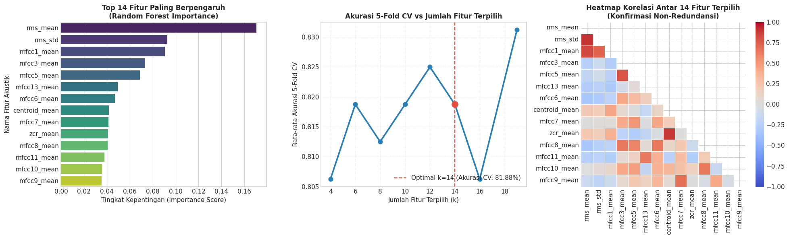
</div>
</div>
</section>
</section>
<hr class="docutils" />
<section id="pemodelan-dan-komparasi-model-klasifikasi-machine-learning">
<h2>9. Pemodelan dan Komparasi Model Klasifikasi Machine Learning<a class="headerlink" href="#pemodelan-dan-komparasi-model-klasifikasi-machine-learning" title="Link to this heading">#</a></h2>
<section id="algoritma-klasifikasi-yang-dieksplorasi">
<h3>9.1 Algoritma Klasifikasi yang Dieksplorasi<a class="headerlink" href="#algoritma-klasifikasi-yang-dieksplorasi" title="Link to this heading">#</a></h3>
<p>Sesuai dengan tujuan riset dan panduan pada dokumen acuan, kita mengimplementasikan dan membandingkan <strong>6 arsitektur model klasifikasi</strong> terkemuka:</p>
<ol class="arabic simple">
<li><p><strong>Random Forest Classifier (Ensemble Bagging):</strong>
Membangun puluhan hingga ratusan pohon keputusan (<em>decision trees</em>) independen di mana setiap pohon dilatih pada subset sampel dan subset fitur acak (<em>bootstrap aggregating</em>). Prediksi akhir ditentukan melalui voting mayoritas. Random Forest sangat unggul dalam menangani hubungan non-linear antar fitur akustik dan tidak rentan terhadap outlier.</p></li>
<li><p><strong>Support Vector Machine (SVM) - Radial Basis Function (RBF Kernel):</strong>
Memproyeksikan data ke ruang berdimensi tak hingga menggunakan trik kernel RBF:
$<span class="math notranslate nohighlight">\(K(x, x') = \exp(-\gamma ||x - x'||^2)\)</span>$
SVM mencari <em>hyperplane</em> pemisah dengan margin pemisah maksimum antara kelas <code class="docutils literal notranslate"><span class="pre">berisik</span></code> dan <code class="docutils literal notranslate"><span class="pre">non-berisik</span></code>.</p></li>
<li><p><strong>Support Vector Machine (SVM) - Linear Kernel:</strong>
Mencari bidang pemisah linier langsung dalam ruang fitur asli. Berfungsi sebagai tolok ukur linearitas data.</p></li>
<li><p><strong>K-Nearest Neighbors (KNN):</strong>
Algoritma non-parametrik berbasis instansi (<em>instance-based learning</em>) yang mengklasifikasikan sampel uji berdasarkan mayoritas label dari <span class="math notranslate nohighlight">\(k\)</span> tetangga terdekatnya dalam ruang jarak Euclidean.</p></li>
<li><p><strong>Logistic Regression:</strong>
Model linear probabilistik yang menggunakan fungsi sigmoid. Berfungsi sebagai model <em>baseline</em> linier yang interpretable.</p></li>
<li><p><strong>Gradient Boosting Classifier (Ensemble Boosting):</strong>
Membangun pohon keputusan secara sekuensial bertahap, di mana setiap pohon baru difokuskan untuk meminimalkan <em>residual error</em> dari kombinasi pohon sebelumnya (<em>gradient descent in function space</em>).</p></li>
</ol>
</section>
<hr class="docutils" />
<section id="pencegahan-kebocoran-data-data-leakage-prevention-dengan-pipeline">
<h3>9.2 Pencegahan Kebocoran Data (<em>Data Leakage Prevention</em>) dengan Pipeline<a class="headerlink" href="#pencegahan-kebocoran-data-data-leakage-prevention-dengan-pipeline" title="Link to this heading">#</a></h3>
<p>Model yang mengandalkan metrik jarak atau turunan gradien (SVM, KNN, Logistic Regression) sangat sensitif terhadap skala data numerik. Untuk mencegah kebocoran data (<em>data leakage</em>) dari data uji ke data latih, kita menggunakan <code class="docutils literal notranslate"><span class="pre">Pipeline</span></code> dari Scikit-Learn:
$<span class="math notranslate nohighlight">\(\text{Pipeline} = [\text{StandardScaler()} \longrightarrow \text{Classifier}]\)</span><span class="math notranslate nohighlight">\(
Proses standardisasi (menghitung rata-rata \)</span>\mu<span class="math notranslate nohighlight">\( dan standar deviasi \)</span>\sigma$) hanya dilakukan secara ketat pada data latih (<em>fit on train</em>), lalu diterapkan secara identik pada data uji (<em>transform on test</em>).</p>
</section>
<hr class="docutils" />
<section id="metrik-evaluasi-komprehensif">
<h3>9.3 Metrik Evaluasi Komprehensif<a class="headerlink" href="#metrik-evaluasi-komprehensif" title="Link to this heading">#</a></h3>
<p>Kinerja model dinilai menggunakan 5 metrik standar industri:</p>
<ul class="simple">
<li><p><strong>Akurasi (<em>Accuracy</em>):</strong> Rasio total prediksi benar terhadap keseluruhan sampel uji.</p></li>
<li><p><strong>Presisi (<em>Precision</em>):</strong> Ketepatan model ketika mendeteksi kelas <code class="docutils literal notranslate"><span class="pre">berisik</span></code> (meminimalkan <em>false alarm</em>).</p></li>
<li><p><strong>Recall / Sensitivitas:</strong> Kemampuan model menangkap seluruh kejadian audio <code class="docutils literal notranslate"><span class="pre">berisik</span></code> aktual (meminimalkan <em>false negative</em>).</p></li>
<li><p><strong>F1-Score:</strong> Rata-rata harmonik antara presisi dan recall (<span class="math notranslate nohighlight">\(F_1 = 2 \cdot \frac{P \cdot R}{P + R}\)</span>).</p></li>
<li><p><strong>ROC-AUC (<em>Receiver Operating Characteristic - Area Under Curve</em>):</strong> Kemampuan pemisahan probabilitas model di berbagai nilai ambang batas (<em>threshold</em>).</p></li>
</ul>
<div class="cell docutils container">
<div class="cell_input docutils container">
<div class="highlight-ipython3 notranslate"><div class="highlight"><pre><span></span><span class="c1"># ==============================================================================</span>
<span class="c1"># TAHAP 9.1: PELATIHAN, 5-FOLD CROSS-VALIDATION, DAN EVALUASI DATA UJI</span>
<span class="c1"># ==============================================================================</span>

<span class="kn">from</span><span class="w"> </span><span class="nn">sklearn.pipeline</span><span class="w"> </span><span class="kn">import</span> <span class="n">Pipeline</span>
<span class="kn">from</span><span class="w"> </span><span class="nn">sklearn.preprocessing</span><span class="w"> </span><span class="kn">import</span> <span class="n">StandardScaler</span>
<span class="kn">from</span><span class="w"> </span><span class="nn">sklearn.svm</span><span class="w"> </span><span class="kn">import</span> <span class="n">SVC</span>
<span class="kn">from</span><span class="w"> </span><span class="nn">sklearn.neighbors</span><span class="w"> </span><span class="kn">import</span> <span class="n">KNeighborsClassifier</span>
<span class="kn">from</span><span class="w"> </span><span class="nn">sklearn.linear_model</span><span class="w"> </span><span class="kn">import</span> <span class="n">LogisticRegression</span>
<span class="kn">from</span><span class="w"> </span><span class="nn">sklearn.ensemble</span><span class="w"> </span><span class="kn">import</span> <span class="n">GradientBoostingClassifier</span>
<span class="kn">from</span><span class="w"> </span><span class="nn">sklearn.metrics</span><span class="w"> </span><span class="kn">import</span> <span class="p">(</span>
    <span class="n">accuracy_score</span><span class="p">,</span> <span class="n">precision_score</span><span class="p">,</span> <span class="n">recall_score</span><span class="p">,</span> <span class="n">f1_score</span><span class="p">,</span>
    <span class="n">roc_auc_score</span><span class="p">,</span> <span class="n">classification_report</span><span class="p">,</span> <span class="n">confusion_matrix</span><span class="p">,</span> <span class="n">roc_curve</span>
<span class="p">)</span>

<span class="c1"># Matriks Fitur Terseleksi (Optimal K Fitur)</span>
<span class="n">X_train_sel</span> <span class="o">=</span> <span class="n">X_train</span><span class="p">[</span><span class="n">SELECTED_FEATURES</span><span class="p">]</span>
<span class="n">X_test_sel</span> <span class="o">=</span> <span class="n">X_test</span><span class="p">[</span><span class="n">SELECTED_FEATURES</span><span class="p">]</span>

<span class="c1"># Inisialisasi Koleksi 6 Model Klasifikasi Kandidat</span>
<span class="n">candidate_models</span> <span class="o">=</span> <span class="p">{</span>
    <span class="s1">&#39;Random Forest&#39;</span><span class="p">:</span> <span class="n">RandomForestClassifier</span><span class="p">(</span><span class="n">n_estimators</span><span class="o">=</span><span class="mi">100</span><span class="p">,</span> <span class="n">max_depth</span><span class="o">=</span><span class="mi">10</span><span class="p">,</span> <span class="n">random_state</span><span class="o">=</span><span class="mi">42</span><span class="p">),</span>
    <span class="s1">&#39;SVM (RBF Kernel)&#39;</span><span class="p">:</span> <span class="n">Pipeline</span><span class="p">([</span>
        <span class="p">(</span><span class="s1">&#39;scaler&#39;</span><span class="p">,</span> <span class="n">StandardScaler</span><span class="p">()),</span>
        <span class="p">(</span><span class="s1">&#39;svm&#39;</span><span class="p">,</span> <span class="n">SVC</span><span class="p">(</span><span class="n">kernel</span><span class="o">=</span><span class="s1">&#39;rbf&#39;</span><span class="p">,</span> <span class="n">C</span><span class="o">=</span><span class="mf">2.0</span><span class="p">,</span> <span class="n">gamma</span><span class="o">=</span><span class="s1">&#39;scale&#39;</span><span class="p">,</span> <span class="n">probability</span><span class="o">=</span><span class="kc">True</span><span class="p">,</span> <span class="n">random_state</span><span class="o">=</span><span class="mi">42</span><span class="p">))</span>
    <span class="p">]),</span>
    <span class="s1">&#39;SVM (Linear Kernel)&#39;</span><span class="p">:</span> <span class="n">Pipeline</span><span class="p">([</span>
        <span class="p">(</span><span class="s1">&#39;scaler&#39;</span><span class="p">,</span> <span class="n">StandardScaler</span><span class="p">()),</span>
        <span class="p">(</span><span class="s1">&#39;svm&#39;</span><span class="p">,</span> <span class="n">SVC</span><span class="p">(</span><span class="n">kernel</span><span class="o">=</span><span class="s1">&#39;linear&#39;</span><span class="p">,</span> <span class="n">C</span><span class="o">=</span><span class="mf">1.0</span><span class="p">,</span> <span class="n">probability</span><span class="o">=</span><span class="kc">True</span><span class="p">,</span> <span class="n">random_state</span><span class="o">=</span><span class="mi">42</span><span class="p">))</span>
    <span class="p">]),</span>
    <span class="s1">&#39;K-Nearest Neighbors&#39;</span><span class="p">:</span> <span class="n">Pipeline</span><span class="p">([</span>
        <span class="p">(</span><span class="s1">&#39;scaler&#39;</span><span class="p">,</span> <span class="n">StandardScaler</span><span class="p">()),</span>
        <span class="p">(</span><span class="s1">&#39;knn&#39;</span><span class="p">,</span> <span class="n">KNeighborsClassifier</span><span class="p">(</span><span class="n">n_neighbors</span><span class="o">=</span><span class="mi">5</span><span class="p">))</span>
    <span class="p">]),</span>
    <span class="s1">&#39;Logistic Regression&#39;</span><span class="p">:</span> <span class="n">Pipeline</span><span class="p">([</span>
        <span class="p">(</span><span class="s1">&#39;scaler&#39;</span><span class="p">,</span> <span class="n">StandardScaler</span><span class="p">()),</span>
        <span class="p">(</span><span class="s1">&#39;lr&#39;</span><span class="p">,</span> <span class="n">LogisticRegression</span><span class="p">(</span><span class="n">max_iter</span><span class="o">=</span><span class="mi">1000</span><span class="p">,</span> <span class="n">random_state</span><span class="o">=</span><span class="mi">42</span><span class="p">))</span>
    <span class="p">]),</span>
    <span class="s1">&#39;Gradient Boosting&#39;</span><span class="p">:</span> <span class="n">GradientBoostingClassifier</span><span class="p">(</span><span class="n">n_estimators</span><span class="o">=</span><span class="mi">100</span><span class="p">,</span> <span class="n">learning_rate</span><span class="o">=</span><span class="mf">0.1</span><span class="p">,</span> <span class="n">random_state</span><span class="o">=</span><span class="mi">42</span><span class="p">)</span>
<span class="p">}</span>

<span class="c1"># Lakukan Pelatihan dan Pengujian Evaluasi</span>
<span class="n">leaderboard_records</span> <span class="o">=</span> <span class="p">[]</span>
<span class="n">trained_models</span> <span class="o">=</span> <span class="p">{}</span>

<span class="nb">print</span><span class="p">(</span><span class="s2">&quot;Memulai proses pelatihan, validasi silang (5-Fold CV), dan evaluasi data uji...</span><span class="se">\n</span><span class="s2">&quot;</span><span class="p">)</span>

<span class="k">for</span> <span class="n">name</span><span class="p">,</span> <span class="n">model</span> <span class="ow">in</span> <span class="n">candidate_models</span><span class="o">.</span><span class="n">items</span><span class="p">():</span>
    <span class="c1"># 1. 5-Fold Stratified Cross-Validation pada Data Latih (158 sampel)</span>
    <span class="n">cv_scores</span> <span class="o">=</span> <span class="n">cross_val_score</span><span class="p">(</span><span class="n">model</span><span class="p">,</span> <span class="n">X_train_sel</span><span class="p">,</span> <span class="n">y_train</span><span class="p">,</span> <span class="n">cv</span><span class="o">=</span><span class="n">cv</span><span class="p">,</span> <span class="n">scoring</span><span class="o">=</span><span class="s1">&#39;accuracy&#39;</span><span class="p">)</span>
    
    <span class="c1"># 2. Fit Model pada Seluruh Data Latih</span>
    <span class="n">model</span><span class="o">.</span><span class="n">fit</span><span class="p">(</span><span class="n">X_train_sel</span><span class="p">,</span> <span class="n">y_train</span><span class="p">)</span>
    <span class="n">trained_models</span><span class="p">[</span><span class="n">name</span><span class="p">]</span> <span class="o">=</span> <span class="n">model</span>
    
    <span class="c1"># 3. Prediksi pada Data Uji Murni (40 sampel independen)</span>
    <span class="n">y_pred</span> <span class="o">=</span> <span class="n">model</span><span class="o">.</span><span class="n">predict</span><span class="p">(</span><span class="n">X_test_sel</span><span class="p">)</span>
    
    <span class="c1"># 4. Hitung Metrik Performa</span>
    <span class="n">acc</span> <span class="o">=</span> <span class="n">accuracy_score</span><span class="p">(</span><span class="n">y_test</span><span class="p">,</span> <span class="n">y_pred</span><span class="p">)</span>
    <span class="n">prec</span> <span class="o">=</span> <span class="n">precision_score</span><span class="p">(</span><span class="n">y_test</span><span class="p">,</span> <span class="n">y_pred</span><span class="p">,</span> <span class="n">pos_label</span><span class="o">=</span><span class="s1">&#39;berisik&#39;</span><span class="p">)</span>
    <span class="n">rec</span> <span class="o">=</span> <span class="n">recall_score</span><span class="p">(</span><span class="n">y_test</span><span class="p">,</span> <span class="n">y_pred</span><span class="p">,</span> <span class="n">pos_label</span><span class="o">=</span><span class="s1">&#39;berisik&#39;</span><span class="p">)</span>
    <span class="n">f1</span> <span class="o">=</span> <span class="n">f1_score</span><span class="p">(</span><span class="n">y_test</span><span class="p">,</span> <span class="n">y_pred</span><span class="p">,</span> <span class="n">pos_label</span><span class="o">=</span><span class="s1">&#39;berisik&#39;</span><span class="p">)</span>
    
    <span class="c1"># Konversi label ke biner (berisik = 1, non-berisik = 0) untuk ROC-AUC</span>
    <span class="n">y_test_bin</span> <span class="o">=</span> <span class="n">np</span><span class="o">.</span><span class="n">where</span><span class="p">(</span><span class="n">y_test</span> <span class="o">==</span> <span class="s1">&#39;berisik&#39;</span><span class="p">,</span> <span class="mi">1</span><span class="p">,</span> <span class="mi">0</span><span class="p">)</span>
    <span class="n">classes</span> <span class="o">=</span> <span class="nb">list</span><span class="p">(</span><span class="n">model</span><span class="o">.</span><span class="n">classes_</span><span class="p">)</span>
    <span class="n">idx_berisik</span> <span class="o">=</span> <span class="n">classes</span><span class="o">.</span><span class="n">index</span><span class="p">(</span><span class="s1">&#39;berisik&#39;</span><span class="p">)</span>
    <span class="n">y_prob_berisik</span> <span class="o">=</span> <span class="n">model</span><span class="o">.</span><span class="n">predict_proba</span><span class="p">(</span><span class="n">X_test_sel</span><span class="p">)[:,</span> <span class="n">idx_berisik</span><span class="p">]</span>
    <span class="n">auc</span> <span class="o">=</span> <span class="n">roc_auc_score</span><span class="p">(</span><span class="n">y_test_bin</span><span class="p">,</span> <span class="n">y_prob_berisik</span><span class="p">)</span>
    
    <span class="n">leaderboard_records</span><span class="o">.</span><span class="n">append</span><span class="p">({</span>
        <span class="s1">&#39;Model&#39;</span><span class="p">:</span> <span class="n">name</span><span class="p">,</span>
        <span class="s1">&#39;CV Akurasi (Mean)&#39;</span><span class="p">:</span> <span class="n">cv_scores</span><span class="o">.</span><span class="n">mean</span><span class="p">(),</span>
        <span class="s1">&#39;CV Akurasi (Std)&#39;</span><span class="p">:</span> <span class="n">cv_scores</span><span class="o">.</span><span class="n">std</span><span class="p">(),</span>
        <span class="s1">&#39;Test Akurasi&#39;</span><span class="p">:</span> <span class="n">acc</span><span class="p">,</span>
        <span class="s1">&#39;Presisi&#39;</span><span class="p">:</span> <span class="n">prec</span><span class="p">,</span>
        <span class="s1">&#39;Recall&#39;</span><span class="p">:</span> <span class="n">rec</span><span class="p">,</span>
        <span class="s1">&#39;F1-Score&#39;</span><span class="p">:</span> <span class="n">f1</span><span class="p">,</span>
        <span class="s1">&#39;ROC-AUC&#39;</span><span class="p">:</span> <span class="n">auc</span>
    <span class="p">})</span>

<span class="c1"># Susun Leaderboard dan Urutkan Berdasarkan Test Akurasi &amp; F1-Score</span>
<span class="n">df_leaderboard</span> <span class="o">=</span> <span class="n">pd</span><span class="o">.</span><span class="n">DataFrame</span><span class="p">(</span><span class="n">leaderboard_records</span><span class="p">)</span><span class="o">.</span><span class="n">sort_values</span><span class="p">(</span>
    <span class="p">[</span><span class="s1">&#39;Test Akurasi&#39;</span><span class="p">,</span> <span class="s1">&#39;F1-Score&#39;</span><span class="p">,</span> <span class="s1">&#39;ROC-AUC&#39;</span><span class="p">],</span> 
    <span class="n">ascending</span><span class="o">=</span><span class="p">[</span><span class="kc">False</span><span class="p">,</span> <span class="kc">False</span><span class="p">,</span> <span class="kc">False</span><span class="p">]</span>
<span class="p">)</span><span class="o">.</span><span class="n">reset_index</span><span class="p">(</span><span class="n">drop</span><span class="o">=</span><span class="kc">True</span><span class="p">)</span>
<span class="n">df_leaderboard</span><span class="o">.</span><span class="n">index</span> <span class="o">=</span> <span class="n">df_leaderboard</span><span class="o">.</span><span class="n">index</span> <span class="o">+</span> <span class="mi">1</span>

<span class="nb">print</span><span class="p">(</span><span class="s2">&quot;=&quot;</span> <span class="o">*</span> <span class="mi">95</span><span class="p">)</span>
<span class="nb">print</span><span class="p">(</span><span class="s2">&quot;             LEADERBOARD PERBANDINGAN MODEL KLASIFIKASI AUDIO (BERISIK vs NON-BERISIK)            &quot;</span><span class="p">)</span>
<span class="nb">print</span><span class="p">(</span><span class="s2">&quot;=&quot;</span> <span class="o">*</span> <span class="mi">95</span><span class="p">)</span>
<span class="nb">print</span><span class="p">(</span><span class="n">df_leaderboard</span><span class="o">.</span><span class="n">to_string</span><span class="p">())</span>

<span class="c1"># Identifikasi Model Terbaik</span>
<span class="n">BEST_MODEL_NAME</span> <span class="o">=</span> <span class="n">df_leaderboard</span><span class="o">.</span><span class="n">iloc</span><span class="p">[</span><span class="mi">0</span><span class="p">][</span><span class="s1">&#39;Model&#39;</span><span class="p">]</span>
<span class="n">best_model</span> <span class="o">=</span> <span class="n">trained_models</span><span class="p">[</span><span class="n">BEST_MODEL_NAME</span><span class="p">]</span>

<span class="nb">print</span><span class="p">(</span><span class="s2">&quot;</span><span class="se">\n</span><span class="s2">&quot;</span> <span class="o">+</span> <span class="s2">&quot;=&quot;</span> <span class="o">*</span> <span class="mi">95</span><span class="p">)</span>
<span class="nb">print</span><span class="p">(</span><span class="sa">f</span><span class="s2">&quot;[MODEL TERBAIK TERPILIH] : </span><span class="si">{</span><span class="n">BEST_MODEL_NAME</span><span class="o">.</span><span class="n">upper</span><span class="p">()</span><span class="si">}</span><span class="s2">&quot;</span><span class="p">)</span>
<span class="nb">print</span><span class="p">(</span><span class="sa">f</span><span class="s2">&quot;-&gt; Test Akurasi : </span><span class="si">{</span><span class="n">df_leaderboard</span><span class="o">.</span><span class="n">iloc</span><span class="p">[</span><span class="mi">0</span><span class="p">][</span><span class="s1">&#39;Test Akurasi&#39;</span><span class="p">]</span><span class="o">*</span><span class="mi">100</span><span class="si">:</span><span class="s2">.2f</span><span class="si">}</span><span class="s2">%&quot;</span><span class="p">)</span>
<span class="nb">print</span><span class="p">(</span><span class="sa">f</span><span class="s2">&quot;-&gt; F1-Score     : </span><span class="si">{</span><span class="n">df_leaderboard</span><span class="o">.</span><span class="n">iloc</span><span class="p">[</span><span class="mi">0</span><span class="p">][</span><span class="s1">&#39;F1-Score&#39;</span><span class="p">]</span><span class="si">:</span><span class="s2">.4f</span><span class="si">}</span><span class="s2">&quot;</span><span class="p">)</span>
<span class="nb">print</span><span class="p">(</span><span class="sa">f</span><span class="s2">&quot;-&gt; ROC-AUC      : </span><span class="si">{</span><span class="n">df_leaderboard</span><span class="o">.</span><span class="n">iloc</span><span class="p">[</span><span class="mi">0</span><span class="p">][</span><span class="s1">&#39;ROC-AUC&#39;</span><span class="p">]</span><span class="si">:</span><span class="s2">.4f</span><span class="si">}</span><span class="s2">&quot;</span><span class="p">)</span>
<span class="nb">print</span><span class="p">(</span><span class="sa">f</span><span class="s2">&quot;-&gt; CV Akurasi   : </span><span class="si">{</span><span class="n">df_leaderboard</span><span class="o">.</span><span class="n">iloc</span><span class="p">[</span><span class="mi">0</span><span class="p">][</span><span class="s1">&#39;CV Akurasi (Mean)&#39;</span><span class="p">]</span><span class="o">*</span><span class="mi">100</span><span class="si">:</span><span class="s2">.2f</span><span class="si">}</span><span class="s2">% (+/- </span><span class="si">{</span><span class="n">df_leaderboard</span><span class="o">.</span><span class="n">iloc</span><span class="p">[</span><span class="mi">0</span><span class="p">][</span><span class="s1">&#39;CV Akurasi (Std)&#39;</span><span class="p">]</span><span class="o">*</span><span class="mi">100</span><span class="si">:</span><span class="s2">.2f</span><span class="si">}</span><span class="s2">%)&quot;</span><span class="p">)</span>
<span class="nb">print</span><span class="p">(</span><span class="s2">&quot;=&quot;</span> <span class="o">*</span> <span class="mi">95</span><span class="p">)</span>
</pre></div>
</div>
</div>
<div class="cell_output docutils container">
<div class="output stream highlight-myst-ansi notranslate"><div class="highlight"><pre><span></span>Memulai proses pelatihan, validasi silang (5-Fold CV), dan evaluasi data uji...
</pre></div>
</div>
<div class="output stream highlight-myst-ansi notranslate"><div class="highlight"><pre><span></span>===============================================================================================
             LEADERBOARD PERBANDINGAN MODEL KLASIFIKASI AUDIO (BERISIK vs NON-BERISIK)            
===============================================================================================
                 Model  CV Akurasi (Mean)  CV Akurasi (Std)  Test Akurasi   Presisi  Recall  F1-Score  ROC-AUC
1        Random Forest            0.81875          0.036443         0.925  1.000000    0.85  0.918919  0.88625
2     SVM (RBF Kernel)            0.77500          0.060596         0.850  0.888889    0.80  0.842105  0.90000
3    Gradient Boosting            0.80000          0.042390         0.850  0.888889    0.80  0.842105  0.89500
4  Logistic Regression            0.77500          0.084779         0.800  0.800000    0.80  0.800000  0.89750
5  SVM (Linear Kernel)            0.76250          0.070156         0.775  0.761905    0.80  0.780488  0.87750
6  K-Nearest Neighbors            0.74375          0.053765         0.775  0.789474    0.75  0.769231  0.87625

===============================================================================================
[MODEL TERBAIK TERPILIH] : RANDOM FOREST
-&gt; Test Akurasi : 92.50%
-&gt; F1-Score     : 0.9189
-&gt; ROC-AUC      : 0.8863
-&gt; CV Akurasi   : 81.88% (+/- 3.64%)
===============================================================================================
</pre></div>
</div>
</div>
</div>
<div class="cell docutils container">
<div class="cell_input docutils container">
<div class="highlight-ipython3 notranslate"><div class="highlight"><pre><span></span><span class="c1"># Visualisasi Komparasi Model: Confusion Matrix dan Kurva ROC</span>
<span class="n">fig</span><span class="p">,</span> <span class="n">axes</span> <span class="o">=</span> <span class="n">plt</span><span class="o">.</span><span class="n">subplots</span><span class="p">(</span><span class="mi">1</span><span class="p">,</span> <span class="mi">2</span><span class="p">,</span> <span class="n">figsize</span><span class="o">=</span><span class="p">(</span><span class="mi">15</span><span class="p">,</span> <span class="mi">6</span><span class="p">))</span>

<span class="c1"># 1. Confusion Matrix Model Terbaik</span>
<span class="n">y_pred_best</span> <span class="o">=</span> <span class="n">best_model</span><span class="o">.</span><span class="n">predict</span><span class="p">(</span><span class="n">X_test_sel</span><span class="p">)</span>
<span class="n">cm</span> <span class="o">=</span> <span class="n">confusion_matrix</span><span class="p">(</span><span class="n">y_test</span><span class="p">,</span> <span class="n">y_pred_best</span><span class="p">,</span> <span class="n">labels</span><span class="o">=</span><span class="p">[</span><span class="s1">&#39;berisik&#39;</span><span class="p">,</span> <span class="s1">&#39;non-berisik&#39;</span><span class="p">])</span>

<span class="n">sns</span><span class="o">.</span><span class="n">heatmap</span><span class="p">(</span>
    <span class="n">cm</span><span class="p">,</span>
    <span class="n">annot</span><span class="o">=</span><span class="kc">True</span><span class="p">,</span>
    <span class="n">fmt</span><span class="o">=</span><span class="s1">&#39;d&#39;</span><span class="p">,</span>
    <span class="n">cmap</span><span class="o">=</span><span class="s1">&#39;Blues&#39;</span><span class="p">,</span>
    <span class="n">xticklabels</span><span class="o">=</span><span class="p">[</span><span class="s1">&#39;Prediksi: Berisik&#39;</span><span class="p">,</span> <span class="s1">&#39;Prediksi: Non-Berisik&#39;</span><span class="p">],</span>
    <span class="n">yticklabels</span><span class="o">=</span><span class="p">[</span><span class="s1">&#39;Aktual: Berisik&#39;</span><span class="p">,</span> <span class="s1">&#39;Aktual: Non-Berisik&#39;</span><span class="p">],</span>
    <span class="n">cbar</span><span class="o">=</span><span class="kc">False</span><span class="p">,</span>
    <span class="n">annot_kws</span><span class="o">=</span><span class="p">{</span><span class="s1">&#39;size&#39;</span><span class="p">:</span> <span class="mi">14</span><span class="p">,</span> <span class="s1">&#39;weight&#39;</span><span class="p">:</span> <span class="s1">&#39;bold&#39;</span><span class="p">},</span>
    <span class="n">ax</span><span class="o">=</span><span class="n">axes</span><span class="p">[</span><span class="mi">0</span><span class="p">]</span>
<span class="p">)</span>
<span class="n">axes</span><span class="p">[</span><span class="mi">0</span><span class="p">]</span><span class="o">.</span><span class="n">set_title</span><span class="p">(</span><span class="sa">f</span><span class="s1">&#39;Confusion Matrix: </span><span class="si">{</span><span class="n">BEST_MODEL_NAME</span><span class="si">}</span><span class="se">\n</span><span class="s1">(Evaluasi Data Uji Independen)&#39;</span><span class="p">,</span> <span class="n">fontweight</span><span class="o">=</span><span class="s1">&#39;bold&#39;</span><span class="p">,</span> <span class="n">fontsize</span><span class="o">=</span><span class="mi">12</span><span class="p">)</span>

<span class="c1"># 2. Kurva ROC untuk Seluruh Model Kandidat</span>
<span class="n">y_test_bin</span> <span class="o">=</span> <span class="n">np</span><span class="o">.</span><span class="n">where</span><span class="p">(</span><span class="n">y_test</span> <span class="o">==</span> <span class="s1">&#39;berisik&#39;</span><span class="p">,</span> <span class="mi">1</span><span class="p">,</span> <span class="mi">0</span><span class="p">)</span>
<span class="n">palette_roc</span> <span class="o">=</span> <span class="p">[</span><span class="s1">&#39;#e74c3c&#39;</span><span class="p">,</span> <span class="s1">&#39;#3498db&#39;</span><span class="p">,</span> <span class="s1">&#39;#2ecc71&#39;</span><span class="p">,</span> <span class="s1">&#39;#9b59b6&#39;</span><span class="p">,</span> <span class="s1">&#39;#f39c12&#39;</span><span class="p">,</span> <span class="s1">&#39;#1abc9c&#39;</span><span class="p">]</span>

<span class="k">for</span> <span class="p">(</span><span class="n">name</span><span class="p">,</span> <span class="n">model</span><span class="p">),</span> <span class="n">col</span> <span class="ow">in</span> <span class="nb">zip</span><span class="p">(</span><span class="n">candidate_models</span><span class="o">.</span><span class="n">items</span><span class="p">(),</span> <span class="n">palette_roc</span><span class="p">):</span>
    <span class="n">classes</span> <span class="o">=</span> <span class="nb">list</span><span class="p">(</span><span class="n">model</span><span class="o">.</span><span class="n">classes_</span><span class="p">)</span>
    <span class="n">idx_b</span> <span class="o">=</span> <span class="n">classes</span><span class="o">.</span><span class="n">index</span><span class="p">(</span><span class="s1">&#39;berisik&#39;</span><span class="p">)</span>
    <span class="n">probs</span> <span class="o">=</span> <span class="n">model</span><span class="o">.</span><span class="n">predict_proba</span><span class="p">(</span><span class="n">X_test_sel</span><span class="p">)[:,</span> <span class="n">idx_b</span><span class="p">]</span>
    <span class="n">fpr</span><span class="p">,</span> <span class="n">tpr</span><span class="p">,</span> <span class="n">_</span> <span class="o">=</span> <span class="n">roc_curve</span><span class="p">(</span><span class="n">y_test_bin</span><span class="p">,</span> <span class="n">probs</span><span class="p">)</span>
    <span class="n">auc_val</span> <span class="o">=</span> <span class="n">roc_auc_score</span><span class="p">(</span><span class="n">y_test_bin</span><span class="p">,</span> <span class="n">probs</span><span class="p">)</span>
    <span class="n">axes</span><span class="p">[</span><span class="mi">1</span><span class="p">]</span><span class="o">.</span><span class="n">plot</span><span class="p">(</span><span class="n">fpr</span><span class="p">,</span> <span class="n">tpr</span><span class="p">,</span> <span class="n">color</span><span class="o">=</span><span class="n">col</span><span class="p">,</span> <span class="n">linewidth</span><span class="o">=</span><span class="mi">2</span><span class="p">,</span> <span class="n">label</span><span class="o">=</span><span class="sa">f</span><span class="s1">&#39;</span><span class="si">{</span><span class="n">name</span><span class="si">}</span><span class="s1"> (AUC = </span><span class="si">{</span><span class="n">auc_val</span><span class="si">:</span><span class="s1">.3f</span><span class="si">}</span><span class="s1">)&#39;</span><span class="p">)</span>

<span class="n">axes</span><span class="p">[</span><span class="mi">1</span><span class="p">]</span><span class="o">.</span><span class="n">plot</span><span class="p">([</span><span class="mi">0</span><span class="p">,</span> <span class="mi">1</span><span class="p">],</span> <span class="p">[</span><span class="mi">0</span><span class="p">,</span> <span class="mi">1</span><span class="p">],</span> <span class="s1">&#39;k--&#39;</span><span class="p">,</span> <span class="n">linewidth</span><span class="o">=</span><span class="mf">1.5</span><span class="p">,</span> <span class="n">label</span><span class="o">=</span><span class="s1">&#39;Random Baseline (AUC = 0.500)&#39;</span><span class="p">)</span>
<span class="n">axes</span><span class="p">[</span><span class="mi">1</span><span class="p">]</span><span class="o">.</span><span class="n">set_title</span><span class="p">(</span><span class="s1">&#39;Perbandingan Kurva ROC (Receiver Operating Characteristic)&#39;</span><span class="p">,</span> <span class="n">fontweight</span><span class="o">=</span><span class="s1">&#39;bold&#39;</span><span class="p">,</span> <span class="n">fontsize</span><span class="o">=</span><span class="mi">12</span><span class="p">)</span>
<span class="n">axes</span><span class="p">[</span><span class="mi">1</span><span class="p">]</span><span class="o">.</span><span class="n">set_xlabel</span><span class="p">(</span><span class="s1">&#39;False Positive Rate (1 - Specificity)&#39;</span><span class="p">)</span>
<span class="n">axes</span><span class="p">[</span><span class="mi">1</span><span class="p">]</span><span class="o">.</span><span class="n">set_ylabel</span><span class="p">(</span><span class="s1">&#39;True Positive Rate (Sensitivity / Recall)&#39;</span><span class="p">)</span>
<span class="n">axes</span><span class="p">[</span><span class="mi">1</span><span class="p">]</span><span class="o">.</span><span class="n">legend</span><span class="p">(</span><span class="n">loc</span><span class="o">=</span><span class="s1">&#39;lower right&#39;</span><span class="p">,</span> <span class="n">frameon</span><span class="o">=</span><span class="kc">True</span><span class="p">)</span>
<span class="n">axes</span><span class="p">[</span><span class="mi">1</span><span class="p">]</span><span class="o">.</span><span class="n">grid</span><span class="p">(</span><span class="kc">True</span><span class="p">,</span> <span class="n">linestyle</span><span class="o">=</span><span class="s1">&#39;:&#39;</span><span class="p">,</span> <span class="n">alpha</span><span class="o">=</span><span class="mf">0.6</span><span class="p">)</span>

<span class="n">plt</span><span class="o">.</span><span class="n">tight_layout</span><span class="p">()</span>
<span class="n">plt</span><span class="o">.</span><span class="n">show</span><span class="p">()</span>

<span class="c1"># Tampilkan Laporan Klasifikasi Rinci</span>
<span class="nb">print</span><span class="p">(</span><span class="sa">f</span><span class="s2">&quot;Laporan Klasifikasi Rinci (Classification Report) untuk </span><span class="si">{</span><span class="n">BEST_MODEL_NAME</span><span class="si">}</span><span class="s2">:</span><span class="se">\n</span><span class="s2">&quot;</span><span class="p">)</span>
<span class="nb">print</span><span class="p">(</span><span class="n">classification_report</span><span class="p">(</span><span class="n">y_test</span><span class="p">,</span> <span class="n">y_pred_best</span><span class="p">,</span> <span class="n">target_names</span><span class="o">=</span><span class="p">[</span><span class="s1">&#39;berisik&#39;</span><span class="p">,</span> <span class="s1">&#39;non-berisik&#39;</span><span class="p">],</span> <span class="n">digits</span><span class="o">=</span><span class="mi">4</span><span class="p">))</span>
</pre></div>
</div>
</div>
<div class="cell_output docutils container">
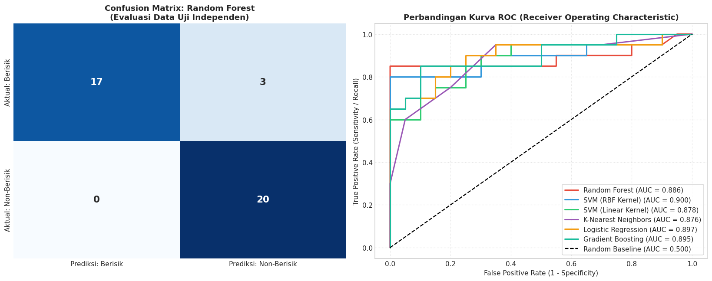
<div class="output stream highlight-myst-ansi notranslate"><div class="highlight"><pre><span></span>Laporan Klasifikasi Rinci (Classification Report) untuk Random Forest:

              precision    recall  f1-score   support

     berisik     1.0000    0.8500    0.9189        20
 non-berisik     0.8696    1.0000    0.9302        20

    accuracy                         0.9250        40
   macro avg     0.9348    0.9250    0.9246        40
weighted avg     0.9348    0.9250    0.9246        40
</pre></div>
</div>
</div>
</div>
</section>
</section>
<hr class="docutils" />
<section id="implementasi-pipeline-inferensi-dan-pengujian-suara-baru">
<h2>10. Implementasi Pipeline Inferensi dan Pengujian Suara Baru<a class="headerlink" href="#implementasi-pipeline-inferensi-dan-pengujian-suara-baru" title="Link to this heading">#</a></h2>
<section id="konsep-dan-alur-kerja-inferensi-mandiri-standalone-inference-pipeline">
<h3>10.1 Konsep dan Alur Kerja Inferensi Mandiri (<em>Standalone Inference Pipeline</em>)<a class="headerlink" href="#konsep-dan-alur-kerja-inferensi-mandiri-standalone-inference-pipeline" title="Link to this heading">#</a></h3>
<p>Tujuan puncak dari proyek sains data adalah <strong>implementasi dan penerapan praktis (<em>deployment</em>)</strong>. Kita membangun fungsi inferensi mandiri end-to-end yang dapat menerima berkas suara audio baru (format <code class="docutils literal notranslate"><span class="pre">.mp3</span></code> atau <code class="docutils literal notranslate"><span class="pre">.wav</span></code>) yang belum pernah dilihat sebelumnya, lalu secara otomatis menjalankan seluruh rantai pemrosesan:</p>
<div class="highlight-default notranslate"><div class="highlight"><pre><span></span>[File Suara Baru (.mp3 / .wav)]
              │
              ▼
1. Load &amp; Resample ke 22.050 Hz
              │
              ▼
2. Pembuangan Bagian Hening (Silence Trimming, top_db = 25 dB)
              │
              ▼
3. Segmentasi Chunk 3 Detik (66.150 sampel)
              │
              ▼
4. Ekstraksi Fitur Akustik (RMS, Centroid, ZCR, MFCC 1-13)
              │
              ▼
5. Agregasi Statistik (Mean &amp; Std) &amp; Penyaringan Fitur Terpilih (Top-12)
              │
              ▼
6. Prediksi Model Terbaik &amp; Probabilitas Keyakinan (Confidence Score)
              │
              ▼
[Keluaran: Status &#39;BERISIK&#39; / &#39;NON-BERISIK&#39; + Persentase Keyakinan + Plot Waveform]
</pre></div>
</div>
</section>
<section id="persistensi-model-model-persistence">
<h3>10.2 Persistensi Model (<em>Model Persistence</em>)<a class="headerlink" href="#persistensi-model-model-persistence" title="Link to this heading">#</a></h3>
<p>Model machine learning terbaik beserta daftar fitur terpilih dan parameter pra-pemrosesan dikemas dan disimpan ke berkas artefak serialisasi <strong><code class="docutils literal notranslate"><span class="pre">model_klasifikasi_audio.pkl</span></code></strong> menggunakan pustaka <code class="docutils literal notranslate"><span class="pre">joblib</span></code>. Hal ini memungkinkan model dipanggil langsung dalam aplikasi web (seperti Flask, FastAPI, atau Streamlit) tanpa perlu melatih ulang data dari awal.</p>
<div class="cell docutils container">
<div class="cell_input docutils container">
<div class="highlight-ipython3 notranslate"><div class="highlight"><pre><span></span><span class="c1"># ==============================================================================</span>
<span class="c1"># TAHAP 10.1: PERSISTENSI MODEL &amp; DEFINISI FUNGSI INFERENSI MANDIRI</span>
<span class="c1"># ==============================================================================</span>

<span class="kn">import</span><span class="w"> </span><span class="nn">os</span>
<span class="kn">import</span><span class="w"> </span><span class="nn">joblib</span>
<span class="kn">import</span><span class="w"> </span><span class="nn">librosa</span>
<span class="kn">import</span><span class="w"> </span><span class="nn">numpy</span><span class="w"> </span><span class="k">as</span><span class="w"> </span><span class="nn">np</span>
<span class="kn">import</span><span class="w"> </span><span class="nn">pandas</span><span class="w"> </span><span class="k">as</span><span class="w"> </span><span class="nn">pd</span>
<span class="kn">import</span><span class="w"> </span><span class="nn">matplotlib.pyplot</span><span class="w"> </span><span class="k">as</span><span class="w"> </span><span class="nn">plt</span>

<span class="c1"># Tentukan direktori kerja saat ini secara otomatis</span>
<span class="n">CURRENT_DIR</span> <span class="o">=</span> <span class="nb">globals</span><span class="p">()</span><span class="o">.</span><span class="n">get</span><span class="p">(</span><span class="s1">&#39;CURRENT_DIR&#39;</span><span class="p">,</span> <span class="n">os</span><span class="o">.</span><span class="n">getcwd</span><span class="p">())</span>
<span class="k">if</span> <span class="ow">not</span> <span class="n">os</span><span class="o">.</span><span class="n">path</span><span class="o">.</span><span class="n">exists</span><span class="p">(</span><span class="n">os</span><span class="o">.</span><span class="n">path</span><span class="o">.</span><span class="n">join</span><span class="p">(</span><span class="n">CURRENT_DIR</span><span class="p">,</span> <span class="s1">&#39;model_klasifikasi_audio.pkl&#39;</span><span class="p">)):</span>
    <span class="k">if</span> <span class="n">os</span><span class="o">.</span><span class="n">path</span><span class="o">.</span><span class="n">exists</span><span class="p">(</span><span class="n">os</span><span class="o">.</span><span class="n">path</span><span class="o">.</span><span class="n">join</span><span class="p">(</span><span class="n">CURRENT_DIR</span><span class="p">,</span> <span class="s1">&#39;materi&#39;</span><span class="p">,</span> <span class="s1">&#39;audio&#39;</span><span class="p">)):</span>
        <span class="n">CURRENT_DIR</span> <span class="o">=</span> <span class="n">os</span><span class="o">.</span><span class="n">path</span><span class="o">.</span><span class="n">join</span><span class="p">(</span><span class="n">CURRENT_DIR</span><span class="p">,</span> <span class="s1">&#39;materi&#39;</span><span class="p">,</span> <span class="s1">&#39;audio&#39;</span><span class="p">)</span>

<span class="n">MODEL_ARTIFACT_PATH</span> <span class="o">=</span> <span class="n">os</span><span class="o">.</span><span class="n">path</span><span class="o">.</span><span class="n">join</span><span class="p">(</span><span class="n">CURRENT_DIR</span><span class="p">,</span> <span class="s1">&#39;model_klasifikasi_audio.pkl&#39;</span><span class="p">)</span>

<span class="c1"># 1. Simpan Bundle Model Terbaik dan Metadata Konfigurasi ke Berkas PKL</span>
<span class="k">if</span> <span class="s1">&#39;best_model&#39;</span> <span class="ow">in</span> <span class="nb">globals</span><span class="p">():</span>
    <span class="n">artifact_bundle</span> <span class="o">=</span> <span class="p">{</span>
        <span class="s1">&#39;model&#39;</span><span class="p">:</span> <span class="n">best_model</span><span class="p">,</span>
        <span class="s1">&#39;selected_features&#39;</span><span class="p">:</span> <span class="n">SELECTED_FEATURES</span><span class="p">,</span>
        <span class="s1">&#39;target_sr&#39;</span><span class="p">:</span> <span class="n">TARGET_SR</span><span class="p">,</span>
        <span class="s1">&#39;top_db&#39;</span><span class="p">:</span> <span class="n">TOP_DB</span><span class="p">,</span>
        <span class="s1">&#39;chunk_duration&#39;</span><span class="p">:</span> <span class="n">CHUNK_DURATION</span><span class="p">,</span>
        <span class="s1">&#39;model_name&#39;</span><span class="p">:</span> <span class="n">BEST_MODEL_NAME</span>
    <span class="p">}</span>
    <span class="n">joblib</span><span class="o">.</span><span class="n">dump</span><span class="p">(</span><span class="n">artifact_bundle</span><span class="p">,</span> <span class="n">MODEL_ARTIFACT_PATH</span><span class="p">)</span>
    <span class="nb">print</span><span class="p">(</span><span class="sa">f</span><span class="s2">&quot;[BERHASIL DISIMPAN] Bundle Model Inferensi Tersimpan di:</span><span class="se">\n</span><span class="s2">-&gt; </span><span class="si">{</span><span class="n">MODEL_ARTIFACT_PATH</span><span class="si">}</span><span class="se">\n</span><span class="s2">&quot;</span><span class="p">)</span>
<span class="k">elif</span> <span class="n">os</span><span class="o">.</span><span class="n">path</span><span class="o">.</span><span class="n">exists</span><span class="p">(</span><span class="n">MODEL_ARTIFACT_PATH</span><span class="p">):</span>
    <span class="nb">print</span><span class="p">(</span><span class="sa">f</span><span class="s2">&quot;[MEMUAT MODEL TERSIMPAN] Menggunakan model inferensi dari:</span><span class="se">\n</span><span class="s2">-&gt; </span><span class="si">{</span><span class="n">MODEL_ARTIFACT_PATH</span><span class="si">}</span><span class="se">\n</span><span class="s2">&quot;</span><span class="p">)</span>

<span class="c1"># 2. Definisikan Fungsi Inferensi Pengujian Suara Baru</span>
<span class="k">def</span><span class="w"> </span><span class="nf">uji_klasifikasi_suara</span><span class="p">(</span><span class="n">audio_filepath</span><span class="p">,</span> <span class="n">model_bundle_path</span><span class="o">=</span><span class="n">MODEL_ARTIFACT_PATH</span><span class="p">,</span> <span class="n">tampilkan_plot</span><span class="o">=</span><span class="kc">True</span><span class="p">):</span>
<span class="w">    </span><span class="sd">&quot;&quot;&quot;</span>
<span class="sd">    Fungsi inferensi mandiri untuk menguji berkas audio baru.</span>
<span class="sd">    Menerima path berkas audio, melakukan pra-pemrosesan, ekstraksi 13 koefisien MFCC + fitur akustik,</span>
<span class="sd">    dan memprediksi apakah audio tergolong &#39;berisik&#39; (ramai) atau &#39;non-berisik&#39; (tenang).</span>
<span class="sd">    &quot;&quot;&quot;</span>
    <span class="k">if</span> <span class="ow">not</span> <span class="n">os</span><span class="o">.</span><span class="n">path</span><span class="o">.</span><span class="n">exists</span><span class="p">(</span><span class="n">audio_filepath</span><span class="p">):</span>
        <span class="nb">print</span><span class="p">(</span><span class="sa">f</span><span class="s2">&quot;[ERROR] Berkas audio tidak ditemukan: </span><span class="si">{</span><span class="n">audio_filepath</span><span class="si">}</span><span class="s2">&quot;</span><span class="p">)</span>
        <span class="nb">print</span><span class="p">(</span><span class="s2">&quot;[TIPS] Tips: Pastikan nama file sesuai di folder (contoh: &#39;24-179 sepi 1.mp3&#39; bukan &#39;non-berisik 1.mp3&#39;).&quot;</span><span class="p">)</span>
        <span class="k">return</span> <span class="kc">None</span>
        
    <span class="nb">print</span><span class="p">(</span><span class="s2">&quot;[INFO] Sedang memproses dan menganalisis audio (~5-7 detik)...&quot;</span><span class="p">)</span>
    
    <span class="c1"># Memuat bundle model (atau fallback ke memori jika .pkl tidak ada)</span>
    <span class="k">if</span> <span class="n">model_bundle_path</span> <span class="ow">and</span> <span class="n">os</span><span class="o">.</span><span class="n">path</span><span class="o">.</span><span class="n">exists</span><span class="p">(</span><span class="n">model_bundle_path</span><span class="p">):</span>
        <span class="n">bundle</span> <span class="o">=</span> <span class="n">joblib</span><span class="o">.</span><span class="n">load</span><span class="p">(</span><span class="n">model_bundle_path</span><span class="p">)</span>
        <span class="n">model</span> <span class="o">=</span> <span class="n">bundle</span><span class="p">[</span><span class="s1">&#39;model&#39;</span><span class="p">]</span>
        <span class="n">features_needed</span> <span class="o">=</span> <span class="n">bundle</span><span class="p">[</span><span class="s1">&#39;selected_features&#39;</span><span class="p">]</span>
        <span class="n">sr_target</span> <span class="o">=</span> <span class="n">bundle</span><span class="o">.</span><span class="n">get</span><span class="p">(</span><span class="s1">&#39;target_sr&#39;</span><span class="p">,</span> <span class="mi">22050</span><span class="p">)</span>
        <span class="n">db_trim</span> <span class="o">=</span> <span class="n">bundle</span><span class="o">.</span><span class="n">get</span><span class="p">(</span><span class="s1">&#39;top_db&#39;</span><span class="p">,</span> <span class="mi">20</span><span class="p">)</span>
        <span class="n">chunk_dur</span> <span class="o">=</span> <span class="n">bundle</span><span class="o">.</span><span class="n">get</span><span class="p">(</span><span class="s1">&#39;chunk_duration&#39;</span><span class="p">,</span> <span class="mi">3</span><span class="p">)</span>
    <span class="k">else</span><span class="p">:</span>
        <span class="n">model</span> <span class="o">=</span> <span class="nb">globals</span><span class="p">()</span><span class="o">.</span><span class="n">get</span><span class="p">(</span><span class="s1">&#39;best_model&#39;</span><span class="p">)</span>
        <span class="n">features_needed</span> <span class="o">=</span> <span class="nb">globals</span><span class="p">()</span><span class="o">.</span><span class="n">get</span><span class="p">(</span><span class="s1">&#39;SELECTED_FEATURES&#39;</span><span class="p">)</span>
        <span class="n">sr_target</span> <span class="o">=</span> <span class="nb">globals</span><span class="p">()</span><span class="o">.</span><span class="n">get</span><span class="p">(</span><span class="s1">&#39;TARGET_SR&#39;</span><span class="p">,</span> <span class="mi">22050</span><span class="p">)</span>
        <span class="n">db_trim</span> <span class="o">=</span> <span class="nb">globals</span><span class="p">()</span><span class="o">.</span><span class="n">get</span><span class="p">(</span><span class="s1">&#39;TOP_DB&#39;</span><span class="p">,</span> <span class="mi">20</span><span class="p">)</span>
        <span class="n">chunk_dur</span> <span class="o">=</span> <span class="nb">globals</span><span class="p">()</span><span class="o">.</span><span class="n">get</span><span class="p">(</span><span class="s1">&#39;CHUNK_DURATION&#39;</span><span class="p">,</span> <span class="mi">3</span><span class="p">)</span>
    
    <span class="c1"># 1. Load Sinyal Audio Mentah &amp; Resample</span>
    <span class="n">y_raw</span><span class="p">,</span> <span class="n">sr</span> <span class="o">=</span> <span class="n">librosa</span><span class="o">.</span><span class="n">load</span><span class="p">(</span><span class="n">audio_filepath</span><span class="p">,</span> <span class="n">sr</span><span class="o">=</span><span class="n">sr_target</span><span class="p">)</span>
    <span class="n">durasi_awal</span> <span class="o">=</span> <span class="nb">len</span><span class="p">(</span><span class="n">y_raw</span><span class="p">)</span> <span class="o">/</span> <span class="n">sr</span>
    
    <span class="c1"># 2. Pembuangan Bagian Hening (Silence Trimming)</span>
    <span class="n">y_clean</span><span class="p">,</span> <span class="n">_</span> <span class="o">=</span> <span class="n">librosa</span><span class="o">.</span><span class="n">effects</span><span class="o">.</span><span class="n">trim</span><span class="p">(</span><span class="n">y_raw</span><span class="p">,</span> <span class="n">top_db</span><span class="o">=</span><span class="n">db_trim</span><span class="p">)</span>
    <span class="n">durasi_bersih</span> <span class="o">=</span> <span class="nb">len</span><span class="p">(</span><span class="n">y_clean</span><span class="p">)</span> <span class="o">/</span> <span class="n">sr</span>
    
    <span class="c1"># 3. Segmentasi Chunk (3 detik per segmen)</span>
    <span class="n">samples_per_chunk</span> <span class="o">=</span> <span class="n">sr_target</span> <span class="o">*</span> <span class="n">chunk_dur</span>
    <span class="k">if</span> <span class="nb">len</span><span class="p">(</span><span class="n">y_clean</span><span class="p">)</span> <span class="o">&lt;</span> <span class="n">samples_per_chunk</span><span class="p">:</span>
        <span class="n">chunks</span> <span class="o">=</span> <span class="p">[</span><span class="n">y_clean</span><span class="p">]</span> <span class="k">if</span> <span class="nb">len</span><span class="p">(</span><span class="n">y_clean</span><span class="p">)</span> <span class="o">&gt;</span> <span class="mi">0</span> <span class="k">else</span> <span class="p">[</span><span class="n">y_raw</span><span class="p">]</span>
    <span class="k">else</span><span class="p">:</span>
        <span class="n">num_ch</span> <span class="o">=</span> <span class="nb">len</span><span class="p">(</span><span class="n">y_clean</span><span class="p">)</span> <span class="o">//</span> <span class="n">samples_per_chunk</span>
        <span class="n">chunks</span> <span class="o">=</span> <span class="p">[</span><span class="n">y_clean</span><span class="p">[</span><span class="n">i</span><span class="o">*</span><span class="n">samples_per_chunk</span><span class="p">:(</span><span class="n">i</span><span class="o">+</span><span class="mi">1</span><span class="p">)</span><span class="o">*</span><span class="n">samples_per_chunk</span><span class="p">]</span> <span class="k">for</span> <span class="n">i</span> <span class="ow">in</span> <span class="nb">range</span><span class="p">(</span><span class="n">num_ch</span><span class="p">)]</span>
        
    <span class="c1"># 4. Ekstraksi Fitur Akustik pada Seluruh Chunk</span>
    <span class="n">rms_list</span><span class="p">,</span> <span class="n">cent_list</span><span class="p">,</span> <span class="n">zcr_list</span><span class="p">,</span> <span class="n">mfcc_list</span> <span class="o">=</span> <span class="p">[],</span> <span class="p">[],</span> <span class="p">[],</span> <span class="p">[]</span>
    <span class="k">for</span> <span class="n">ch</span> <span class="ow">in</span> <span class="n">chunks</span><span class="p">:</span>
        <span class="n">rms_list</span><span class="o">.</span><span class="n">append</span><span class="p">(</span><span class="n">librosa</span><span class="o">.</span><span class="n">feature</span><span class="o">.</span><span class="n">rms</span><span class="p">(</span><span class="n">y</span><span class="o">=</span><span class="n">ch</span><span class="p">))</span>
        <span class="n">cent_list</span><span class="o">.</span><span class="n">append</span><span class="p">(</span><span class="n">librosa</span><span class="o">.</span><span class="n">feature</span><span class="o">.</span><span class="n">spectral_centroid</span><span class="p">(</span><span class="n">y</span><span class="o">=</span><span class="n">ch</span><span class="p">,</span> <span class="n">sr</span><span class="o">=</span><span class="n">sr</span><span class="p">))</span>
        <span class="n">zcr_list</span><span class="o">.</span><span class="n">append</span><span class="p">(</span><span class="n">librosa</span><span class="o">.</span><span class="n">feature</span><span class="o">.</span><span class="n">zero_crossing_rate</span><span class="p">(</span><span class="n">y</span><span class="o">=</span><span class="n">ch</span><span class="p">))</span>
        <span class="n">mfcc_list</span><span class="o">.</span><span class="n">append</span><span class="p">(</span><span class="n">librosa</span><span class="o">.</span><span class="n">feature</span><span class="o">.</span><span class="n">mfcc</span><span class="p">(</span><span class="n">y</span><span class="o">=</span><span class="n">ch</span><span class="p">,</span> <span class="n">sr</span><span class="o">=</span><span class="n">sr</span><span class="p">,</span> <span class="n">n_mfcc</span><span class="o">=</span><span class="mi">13</span><span class="p">))</span>
        
    <span class="n">cat_rms</span> <span class="o">=</span> <span class="n">np</span><span class="o">.</span><span class="n">hstack</span><span class="p">(</span><span class="n">rms_list</span><span class="p">)</span>
    <span class="n">cat_cent</span> <span class="o">=</span> <span class="n">np</span><span class="o">.</span><span class="n">hstack</span><span class="p">(</span><span class="n">cent_list</span><span class="p">)</span>
    <span class="n">cat_zcr</span> <span class="o">=</span> <span class="n">np</span><span class="o">.</span><span class="n">hstack</span><span class="p">(</span><span class="n">zcr_list</span><span class="p">)</span>
    <span class="n">cat_mfcc</span> <span class="o">=</span> <span class="n">np</span><span class="o">.</span><span class="n">hstack</span><span class="p">(</span><span class="n">mfcc_list</span><span class="p">)</span>
    
    <span class="c1"># 5. Agregasi Statistik (19 Fitur: 13 Koefisien MFCC Mean)</span>
    <span class="n">feature_dict</span> <span class="o">=</span> <span class="p">{</span>
        <span class="s1">&#39;rms_mean&#39;</span><span class="p">:</span> <span class="nb">float</span><span class="p">(</span><span class="n">np</span><span class="o">.</span><span class="n">mean</span><span class="p">(</span><span class="n">cat_rms</span><span class="p">)),</span>
        <span class="s1">&#39;rms_std&#39;</span><span class="p">:</span> <span class="nb">float</span><span class="p">(</span><span class="n">np</span><span class="o">.</span><span class="n">std</span><span class="p">(</span><span class="n">cat_rms</span><span class="p">)),</span>
        <span class="s1">&#39;centroid_mean&#39;</span><span class="p">:</span> <span class="nb">float</span><span class="p">(</span><span class="n">np</span><span class="o">.</span><span class="n">mean</span><span class="p">(</span><span class="n">cat_cent</span><span class="p">)),</span>
        <span class="s1">&#39;centroid_std&#39;</span><span class="p">:</span> <span class="nb">float</span><span class="p">(</span><span class="n">np</span><span class="o">.</span><span class="n">std</span><span class="p">(</span><span class="n">cat_cent</span><span class="p">)),</span>
        <span class="s1">&#39;zcr_mean&#39;</span><span class="p">:</span> <span class="nb">float</span><span class="p">(</span><span class="n">np</span><span class="o">.</span><span class="n">mean</span><span class="p">(</span><span class="n">cat_zcr</span><span class="p">)),</span>
        <span class="s1">&#39;zcr_std&#39;</span><span class="p">:</span> <span class="nb">float</span><span class="p">(</span><span class="n">np</span><span class="o">.</span><span class="n">std</span><span class="p">(</span><span class="n">cat_zcr</span><span class="p">))</span>
    <span class="p">}</span>
    <span class="k">for</span> <span class="n">k</span> <span class="ow">in</span> <span class="nb">range</span><span class="p">(</span><span class="mi">13</span><span class="p">):</span>
        <span class="n">feature_dict</span><span class="p">[</span><span class="sa">f</span><span class="s1">&#39;mfcc</span><span class="si">{</span><span class="n">k</span><span class="o">+</span><span class="mi">1</span><span class="si">}</span><span class="s1">_mean&#39;</span><span class="p">]</span> <span class="o">=</span> <span class="nb">float</span><span class="p">(</span><span class="n">np</span><span class="o">.</span><span class="n">mean</span><span class="p">(</span><span class="n">cat_mfcc</span><span class="p">[</span><span class="n">k</span><span class="p">,</span> <span class="p">:]))</span>
        
    <span class="c1"># Susun DataFrame hanya untuk subset fitur terseleksi</span>
    <span class="n">df_sample</span> <span class="o">=</span> <span class="n">pd</span><span class="o">.</span><span class="n">DataFrame</span><span class="p">([</span><span class="n">feature_dict</span><span class="p">])[</span><span class="n">features_needed</span><span class="p">]</span>
    
    <span class="c1"># 6. Prediksi Kelas dan Probabilitas Keyakinan</span>
    <span class="n">prediksi_label</span> <span class="o">=</span> <span class="n">model</span><span class="o">.</span><span class="n">predict</span><span class="p">(</span><span class="n">df_sample</span><span class="p">)[</span><span class="mi">0</span><span class="p">]</span>
    <span class="n">probabilitas</span> <span class="o">=</span> <span class="n">model</span><span class="o">.</span><span class="n">predict_proba</span><span class="p">(</span><span class="n">df_sample</span><span class="p">)[</span><span class="mi">0</span><span class="p">]</span>
    <span class="n">classes</span> <span class="o">=</span> <span class="nb">list</span><span class="p">(</span><span class="n">model</span><span class="o">.</span><span class="n">classes_</span><span class="p">)</span>
    <span class="n">prob_dict</span> <span class="o">=</span> <span class="p">{</span><span class="bp">cls</span><span class="p">:</span> <span class="nb">float</span><span class="p">(</span><span class="n">probabilitas</span><span class="p">[</span><span class="n">idx</span><span class="p">])</span> <span class="k">for</span> <span class="n">idx</span><span class="p">,</span> <span class="bp">cls</span> <span class="ow">in</span> <span class="nb">enumerate</span><span class="p">(</span><span class="n">classes</span><span class="p">)}</span>
    
    <span class="c1"># Format badge hasil diagnosis</span>
    <span class="n">badge</span> <span class="o">=</span> <span class="s2">&quot;[BERISIK / RAMAI]&quot;</span> <span class="k">if</span> <span class="n">prediksi_label</span> <span class="o">==</span> <span class="s1">&#39;berisik&#39;</span> <span class="k">else</span> <span class="s2">&quot;[NON-BERISIK / TENANG]&quot;</span>
    <span class="n">confidence</span> <span class="o">=</span> <span class="n">prob_dict</span><span class="p">[</span><span class="n">prediksi_label</span><span class="p">]</span> <span class="o">*</span> <span class="mi">100</span>
    
    <span class="nb">print</span><span class="p">(</span><span class="s2">&quot;-&quot;</span> <span class="o">*</span> <span class="mi">70</span><span class="p">)</span>
    <span class="nb">print</span><span class="p">(</span><span class="sa">f</span><span class="s2">&quot;HASIL DIAGNOSIS AUDIO : </span><span class="si">{</span><span class="n">os</span><span class="o">.</span><span class="n">path</span><span class="o">.</span><span class="n">basename</span><span class="p">(</span><span class="n">audio_filepath</span><span class="p">)</span><span class="si">}</span><span class="s2">&quot;</span><span class="p">)</span>
    <span class="nb">print</span><span class="p">(</span><span class="s2">&quot;-&quot;</span> <span class="o">*</span> <span class="mi">70</span><span class="p">)</span>
    <span class="nb">print</span><span class="p">(</span><span class="sa">f</span><span class="s2">&quot;Status Prediksi    : </span><span class="si">{</span><span class="n">badge</span><span class="si">}</span><span class="s2">&quot;</span><span class="p">)</span>
    <span class="nb">print</span><span class="p">(</span><span class="sa">f</span><span class="s2">&quot;Tingkat Keyakinan  : </span><span class="si">{</span><span class="n">confidence</span><span class="si">:</span><span class="s2">.2f</span><span class="si">}</span><span class="s2">%&quot;</span><span class="p">)</span>
    <span class="nb">print</span><span class="p">(</span><span class="sa">f</span><span class="s2">&quot;Distribusi Peluang : Berisik = </span><span class="si">{</span><span class="n">prob_dict</span><span class="p">[</span><span class="s1">&#39;berisik&#39;</span><span class="p">]</span><span class="o">*</span><span class="mi">100</span><span class="si">:</span><span class="s2">.2f</span><span class="si">}</span><span class="s2">% | Non-Berisik = </span><span class="si">{</span><span class="n">prob_dict</span><span class="p">[</span><span class="s1">&#39;non-berisik&#39;</span><span class="p">]</span><span class="o">*</span><span class="mi">100</span><span class="si">:</span><span class="s2">.2f</span><span class="si">}</span><span class="s2">%&quot;</span><span class="p">)</span>
    <span class="nb">print</span><span class="p">(</span><span class="sa">f</span><span class="s2">&quot;Durasi Rekaman     : Awal </span><span class="si">{</span><span class="n">durasi_awal</span><span class="si">:</span><span class="s2">.2f</span><span class="si">}</span><span class="s2">s -&gt; Pasca Trim </span><span class="si">{</span><span class="n">durasi_bersih</span><span class="si">:</span><span class="s2">.2f</span><span class="si">}</span><span class="s2">s (</span><span class="si">{</span><span class="nb">len</span><span class="p">(</span><span class="n">chunks</span><span class="p">)</span><span class="si">}</span><span class="s2"> segmen chunk)&quot;</span><span class="p">)</span>
    <span class="nb">print</span><span class="p">(</span><span class="sa">f</span><span class="s2">&quot;Energi RMS Rerata  : </span><span class="si">{</span><span class="n">feature_dict</span><span class="p">[</span><span class="s1">&#39;rms_mean&#39;</span><span class="p">]</span><span class="si">:</span><span class="s2">.5f</span><span class="si">}</span><span class="s2">&quot;</span><span class="p">)</span>
    <span class="nb">print</span><span class="p">(</span><span class="sa">f</span><span class="s2">&quot;Centroid Frekuensi : </span><span class="si">{</span><span class="n">feature_dict</span><span class="p">[</span><span class="s1">&#39;centroid_mean&#39;</span><span class="p">]</span><span class="si">:</span><span class="s2">.1f</span><span class="si">}</span><span class="s2"> Hz&quot;</span><span class="p">)</span>
    <span class="nb">print</span><span class="p">(</span><span class="s2">&quot;-&quot;</span> <span class="o">*</span> <span class="mi">70</span><span class="p">)</span>
    
    <span class="c1"># 7. Visualisasi Waveform Sinyal Audio Uji</span>
    <span class="k">if</span> <span class="n">tampilkan_plot</span><span class="p">:</span>
        <span class="n">fig</span><span class="p">,</span> <span class="n">ax</span> <span class="o">=</span> <span class="n">plt</span><span class="o">.</span><span class="n">subplots</span><span class="p">(</span><span class="n">figsize</span><span class="o">=</span><span class="p">(</span><span class="mi">10</span><span class="p">,</span> <span class="mf">2.6</span><span class="p">))</span>
        <span class="n">time_axis</span> <span class="o">=</span> <span class="n">np</span><span class="o">.</span><span class="n">linspace</span><span class="p">(</span><span class="mi">0</span><span class="p">,</span> <span class="nb">len</span><span class="p">(</span><span class="n">y_clean</span><span class="p">)</span> <span class="o">/</span> <span class="n">sr</span><span class="p">,</span> <span class="nb">len</span><span class="p">(</span><span class="n">y_clean</span><span class="p">))</span>
        <span class="n">color_wave</span> <span class="o">=</span> <span class="s1">&#39;#d9534f&#39;</span> <span class="k">if</span> <span class="n">prediksi_label</span> <span class="o">==</span> <span class="s1">&#39;berisik&#39;</span> <span class="k">else</span> <span class="s1">&#39;#337ab7&#39;</span>
        <span class="n">lbl_clean</span> <span class="o">=</span> <span class="s1">&#39;[BERISIK]&#39;</span> <span class="k">if</span> <span class="n">prediksi_label</span> <span class="o">==</span> <span class="s1">&#39;berisik&#39;</span> <span class="k">else</span> <span class="s1">&#39;[NON-BERISIK]&#39;</span>
        <span class="n">ax</span><span class="o">.</span><span class="n">plot</span><span class="p">(</span><span class="n">time_axis</span><span class="p">,</span> <span class="n">y_clean</span><span class="p">,</span> <span class="n">color</span><span class="o">=</span><span class="n">color_wave</span><span class="p">,</span> <span class="n">alpha</span><span class="o">=</span><span class="mf">0.8</span><span class="p">,</span> <span class="n">linewidth</span><span class="o">=</span><span class="mf">0.8</span><span class="p">)</span>
        <span class="n">ax</span><span class="o">.</span><span class="n">set_title</span><span class="p">(</span><span class="sa">f</span><span class="s1">&#39;Waveform Uji: </span><span class="si">{</span><span class="n">os</span><span class="o">.</span><span class="n">path</span><span class="o">.</span><span class="n">basename</span><span class="p">(</span><span class="n">audio_filepath</span><span class="p">)</span><span class="si">}</span><span class="s1"> -&gt; </span><span class="si">{</span><span class="n">lbl_clean</span><span class="si">}</span><span class="s1"> (</span><span class="si">{</span><span class="n">confidence</span><span class="si">:</span><span class="s1">.1f</span><span class="si">}</span><span class="s1">%)&#39;</span><span class="p">,</span> 
                     <span class="n">fontweight</span><span class="o">=</span><span class="s1">&#39;bold&#39;</span><span class="p">,</span> <span class="n">fontsize</span><span class="o">=</span><span class="mi">11</span><span class="p">)</span>
        <span class="n">ax</span><span class="o">.</span><span class="n">set_xlabel</span><span class="p">(</span><span class="s1">&#39;Waktu (detik)&#39;</span><span class="p">)</span>
        <span class="n">ax</span><span class="o">.</span><span class="n">set_ylabel</span><span class="p">(</span><span class="s1">&#39;Amplitudo&#39;</span><span class="p">)</span>
        <span class="n">ax</span><span class="o">.</span><span class="n">grid</span><span class="p">(</span><span class="kc">True</span><span class="p">,</span> <span class="n">linestyle</span><span class="o">=</span><span class="s1">&#39;:&#39;</span><span class="p">,</span> <span class="n">alpha</span><span class="o">=</span><span class="mf">0.5</span><span class="p">)</span>
        <span class="n">plt</span><span class="o">.</span><span class="n">tight_layout</span><span class="p">()</span>
        <span class="n">plt</span><span class="o">.</span><span class="n">show</span><span class="p">()</span>
        
    <span class="k">return</span> <span class="p">{</span>
        <span class="s1">&#39;filename&#39;</span><span class="p">:</span> <span class="n">os</span><span class="o">.</span><span class="n">path</span><span class="o">.</span><span class="n">basename</span><span class="p">(</span><span class="n">audio_filepath</span><span class="p">),</span>
        <span class="s1">&#39;prediksi&#39;</span><span class="p">:</span> <span class="n">prediksi_label</span><span class="p">,</span>
        <span class="s1">&#39;confidence&#39;</span><span class="p">:</span> <span class="n">confidence</span><span class="p">,</span>
        <span class="s1">&#39;probabilities&#39;</span><span class="p">:</span> <span class="n">prob_dict</span><span class="p">,</span>
        <span class="s1">&#39;features&#39;</span><span class="p">:</span> <span class="n">feature_dict</span>
    <span class="p">}</span>

<span class="nb">print</span><span class="p">(</span><span class="s2">&quot;[OK] Fungsi inferensi &#39;uji_klasifikasi_suara&#39; siap digunakan untuk pengujian audio baru!&quot;</span><span class="p">)</span>
</pre></div>
</div>
</div>
<div class="cell_output docutils container">
<div class="output stream highlight-myst-ansi notranslate"><div class="highlight"><pre><span></span>[BERHASIL DISIMPAN] Bundle Model Inferensi Tersimpan di:
-&gt; C:\Users\OKAN\OneDrive\Dokumen\PSD\materi\audio\model_klasifikasi_audio.pkl

[OK] Fungsi inferensi &#39;uji_klasifikasi_suara&#39; siap digunakan untuk pengujian audio baru!
</pre></div>
</div>
</div>
</div>
<div class="cell docutils container">
<div class="cell_input docutils container">
<div class="highlight-ipython3 notranslate"><div class="highlight"><pre><span></span><span class="c1"># ==============================================================================</span>
<span class="c1"># TAHAP 10.2: DEMONSTRASI PENGUJIAN INFERENSI PADA BERKAS SUARA AKTUAL</span>
<span class="c1"># ==============================================================================</span>

<span class="kn">import</span><span class="w"> </span><span class="nn">os</span>

<span class="c1"># Pastikan path folder berisik dan non-berisik terdefinisi secara mandiri</span>
<span class="n">BASE_DIR</span> <span class="o">=</span> <span class="nb">globals</span><span class="p">()</span><span class="o">.</span><span class="n">get</span><span class="p">(</span><span class="s1">&#39;CURRENT_DIR&#39;</span><span class="p">,</span> <span class="n">os</span><span class="o">.</span><span class="n">getcwd</span><span class="p">())</span>
<span class="k">if</span> <span class="ow">not</span> <span class="n">os</span><span class="o">.</span><span class="n">path</span><span class="o">.</span><span class="n">exists</span><span class="p">(</span><span class="n">os</span><span class="o">.</span><span class="n">path</span><span class="o">.</span><span class="n">join</span><span class="p">(</span><span class="n">BASE_DIR</span><span class="p">,</span> <span class="s1">&#39;berisik&#39;</span><span class="p">)):</span>
    <span class="k">if</span> <span class="n">os</span><span class="o">.</span><span class="n">path</span><span class="o">.</span><span class="n">exists</span><span class="p">(</span><span class="n">os</span><span class="o">.</span><span class="n">path</span><span class="o">.</span><span class="n">join</span><span class="p">(</span><span class="n">BASE_DIR</span><span class="p">,</span> <span class="s1">&#39;materi&#39;</span><span class="p">,</span> <span class="s1">&#39;audio&#39;</span><span class="p">)):</span>
        <span class="n">BASE_DIR</span> <span class="o">=</span> <span class="n">os</span><span class="o">.</span><span class="n">path</span><span class="o">.</span><span class="n">join</span><span class="p">(</span><span class="n">BASE_DIR</span><span class="p">,</span> <span class="s1">&#39;materi&#39;</span><span class="p">,</span> <span class="s1">&#39;audio&#39;</span><span class="p">)</span>

<span class="n">DIR_BERISIK</span> <span class="o">=</span> <span class="n">os</span><span class="o">.</span><span class="n">path</span><span class="o">.</span><span class="n">join</span><span class="p">(</span><span class="n">BASE_DIR</span><span class="p">,</span> <span class="s1">&#39;berisik&#39;</span><span class="p">)</span>
<span class="n">DIR_NON_BERISIK</span> <span class="o">=</span> <span class="n">os</span><span class="o">.</span><span class="n">path</span><span class="o">.</span><span class="n">join</span><span class="p">(</span><span class="n">BASE_DIR</span><span class="p">,</span> <span class="s1">&#39;non-berisik&#39;</span><span class="p">)</span>

<span class="n">files_b</span> <span class="o">=</span> <span class="p">[</span><span class="n">os</span><span class="o">.</span><span class="n">path</span><span class="o">.</span><span class="n">join</span><span class="p">(</span><span class="n">DIR_BERISIK</span><span class="p">,</span> <span class="n">f</span><span class="p">)</span> <span class="k">for</span> <span class="n">f</span> <span class="ow">in</span> <span class="n">os</span><span class="o">.</span><span class="n">listdir</span><span class="p">(</span><span class="n">DIR_BERISIK</span><span class="p">)</span> <span class="k">if</span> <span class="n">f</span><span class="o">.</span><span class="n">endswith</span><span class="p">(</span><span class="s1">&#39;.mp3&#39;</span><span class="p">)]</span>
<span class="n">files_nb</span> <span class="o">=</span> <span class="p">[</span><span class="n">os</span><span class="o">.</span><span class="n">path</span><span class="o">.</span><span class="n">join</span><span class="p">(</span><span class="n">DIR_NON_BERISIK</span><span class="p">,</span> <span class="n">f</span><span class="p">)</span> <span class="k">for</span> <span class="n">f</span> <span class="ow">in</span> <span class="n">os</span><span class="o">.</span><span class="n">listdir</span><span class="p">(</span><span class="n">DIR_NON_BERISIK</span><span class="p">)</span> <span class="k">if</span> <span class="n">f</span><span class="o">.</span><span class="n">endswith</span><span class="p">(</span><span class="s1">&#39;.mp3&#39;</span><span class="p">)]</span>

<span class="c1"># Mengambil sampel file nyata dari folder &#39;berisik&#39; dan &#39;non-berisik&#39;</span>
<span class="n">sample_test_audios</span> <span class="o">=</span> <span class="p">[</span>
    <span class="p">(</span><span class="s1">&#39;Sampel Audio Berisik (Kasus 1)&#39;</span><span class="p">,</span> <span class="n">files_b</span><span class="p">[</span><span class="mi">0</span><span class="p">]),</span>
    <span class="p">(</span><span class="s1">&#39;Sampel Audio Berisik (Kasus 2)&#39;</span><span class="p">,</span> <span class="n">files_b</span><span class="p">[</span><span class="mi">1</span><span class="p">]),</span>
    <span class="p">(</span><span class="s1">&#39;Sampel Audio Non-Berisik (Kasus 1)&#39;</span><span class="p">,</span> <span class="n">files_nb</span><span class="p">[</span><span class="mi">0</span><span class="p">]),</span>
    <span class="p">(</span><span class="s1">&#39;Sampel Audio Non-Berisik (Kasus 2)&#39;</span><span class="p">,</span> <span class="n">files_nb</span><span class="p">[</span><span class="mi">1</span><span class="p">])</span>
<span class="p">]</span>

<span class="nb">print</span><span class="p">(</span><span class="s2">&quot;=&quot;</span> <span class="o">*</span> <span class="mi">80</span><span class="p">)</span>
<span class="nb">print</span><span class="p">(</span><span class="s2">&quot;     DEMONSTRASI PENGUJIAN INFERENSI AUDIO: BERISIK vs NON-BERISIK     &quot;</span><span class="p">)</span>
<span class="nb">print</span><span class="p">(</span><span class="s2">&quot;=&quot;</span> <span class="o">*</span> <span class="mi">80</span><span class="p">)</span>

<span class="k">for</span> <span class="n">tag</span><span class="p">,</span> <span class="n">file_path</span> <span class="ow">in</span> <span class="n">sample_test_audios</span><span class="p">:</span>
    <span class="nb">print</span><span class="p">(</span><span class="sa">f</span><span class="s2">&quot;</span><span class="se">\n</span><span class="s2">&gt;&gt;&gt; Menguji </span><span class="si">{</span><span class="n">tag</span><span class="si">}</span><span class="s2">: </span><span class="si">{</span><span class="n">os</span><span class="o">.</span><span class="n">path</span><span class="o">.</span><span class="n">basename</span><span class="p">(</span><span class="n">file_path</span><span class="p">)</span><span class="si">}</span><span class="s2">&quot;</span><span class="p">)</span>
    <span class="n">hasil_uji</span> <span class="o">=</span> <span class="n">uji_klasifikasi_suara</span><span class="p">(</span><span class="n">file_path</span><span class="p">,</span> <span class="n">tampilkan_plot</span><span class="o">=</span><span class="kc">True</span><span class="p">)</span>
</pre></div>
</div>
</div>
<div class="cell_output docutils container">
<div class="output stream highlight-myst-ansi notranslate"><div class="highlight"><pre><span></span>================================================================================
     DEMONSTRASI PENGUJIAN INFERENSI AUDIO: BERISIK vs NON-BERISIK     
================================================================================

&gt;&gt;&gt; Menguji Sampel Audio Berisik (Kasus 1): 24-003 berisik (1).mp3
[INFO] Sedang memproses dan menganalisis audio (~5-7 detik)...
</pre></div>
</div>
<div class="output stream highlight-myst-ansi notranslate"><div class="highlight"><pre><span></span>----------------------------------------------------------------------
HASIL DIAGNOSIS AUDIO : 24-003 berisik (1).mp3
----------------------------------------------------------------------
Status Prediksi    : [BERISIK / RAMAI]
Tingkat Keyakinan  : 87.00%
Distribusi Peluang : Berisik = 87.00% | Non-Berisik = 13.00%
Durasi Rekaman     : Awal 30.04s -&gt; Pasca Trim 30.02s (10 segmen chunk)
Energi RMS Rerata  : 0.04172
Centroid Frekuensi : 1779.1 Hz
----------------------------------------------------------------------
</pre></div>
</div>
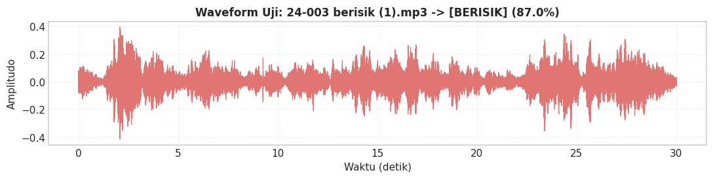
<div class="output stream highlight-myst-ansi notranslate"><div class="highlight"><pre><span></span>&gt;&gt;&gt; Menguji Sampel Audio Berisik (Kasus 2): 24-003 berisik (2).mp3
[INFO] Sedang memproses dan menganalisis audio (~5-7 detik)...
</pre></div>
</div>
<div class="output stream highlight-myst-ansi notranslate"><div class="highlight"><pre><span></span>----------------------------------------------------------------------
HASIL DIAGNOSIS AUDIO : 24-003 berisik (2).mp3
----------------------------------------------------------------------
Status Prediksi    : [BERISIK / RAMAI]
Tingkat Keyakinan  : 94.00%
Distribusi Peluang : Berisik = 94.00% | Non-Berisik = 6.00%
Durasi Rekaman     : Awal 30.77s -&gt; Pasca Trim 30.47s (10 segmen chunk)
Energi RMS Rerata  : 0.07727
Centroid Frekuensi : 2128.7 Hz
----------------------------------------------------------------------
</pre></div>
</div>
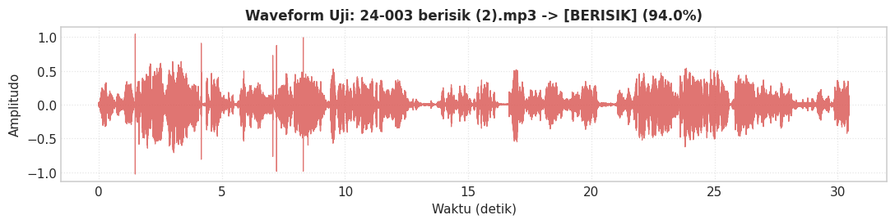
<div class="output stream highlight-myst-ansi notranslate"><div class="highlight"><pre><span></span>&gt;&gt;&gt; Menguji Sampel Audio Non-Berisik (Kasus 1): 24-003 sunyi 2.mp3
[INFO] Sedang memproses dan menganalisis audio (~5-7 detik)...
</pre></div>
</div>
<div class="output stream highlight-myst-ansi notranslate"><div class="highlight"><pre><span></span>----------------------------------------------------------------------
HASIL DIAGNOSIS AUDIO : 24-003 sunyi 2.mp3
----------------------------------------------------------------------
Status Prediksi    : [NON-BERISIK / TENANG]
Tingkat Keyakinan  : 91.80%
Distribusi Peluang : Berisik = 8.20% | Non-Berisik = 91.80%
Durasi Rekaman     : Awal 30.00s -&gt; Pasca Trim 30.00s (10 segmen chunk)
Energi RMS Rerata  : 0.02091
Centroid Frekuensi : 1729.9 Hz
----------------------------------------------------------------------
</pre></div>
</div>
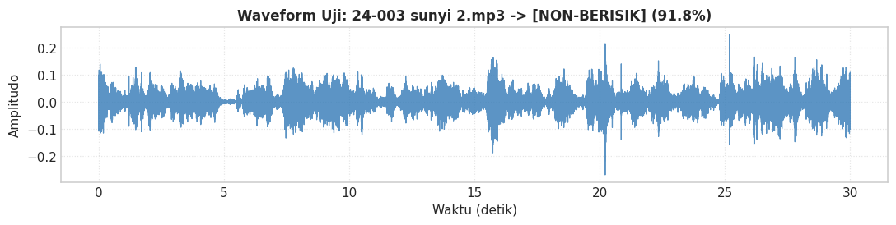
<div class="output stream highlight-myst-ansi notranslate"><div class="highlight"><pre><span></span>&gt;&gt;&gt; Menguji Sampel Audio Non-Berisik (Kasus 2): 24-003 sunyi 3.mp3
[INFO] Sedang memproses dan menganalisis audio (~5-7 detik)...
</pre></div>
</div>
<div class="output stream highlight-myst-ansi notranslate"><div class="highlight"><pre><span></span>----------------------------------------------------------------------
HASIL DIAGNOSIS AUDIO : 24-003 sunyi 3.mp3
----------------------------------------------------------------------
Status Prediksi    : [NON-BERISIK / TENANG]
Tingkat Keyakinan  : 90.67%
Distribusi Peluang : Berisik = 9.33% | Non-Berisik = 90.67%
Durasi Rekaman     : Awal 30.41s -&gt; Pasca Trim 30.25s (10 segmen chunk)
Energi RMS Rerata  : 0.01589
Centroid Frekuensi : 1780.2 Hz
----------------------------------------------------------------------
</pre></div>
</div>
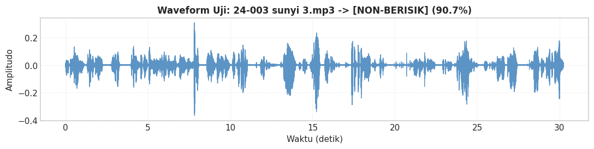
</div>
</div>
</section>
<section id="uji-coba-mandiri-coba-file-suara-anda-sendiri">
<h3>10.3 Uji Coba Mandiri (Coba File Suara Anda Sendiri)<a class="headerlink" href="#uji-coba-mandiri-coba-file-suara-anda-sendiri" title="Link to this heading">#</a></h3>
<p>Anda dapat dengan mudah menguji berkas audio apa pun yang Anda miliki (format .mp3 atau .wav):</p>
<p><strong>Langkah-langkah Uji Coba Mandiri:</strong></p>
<ol class="arabic simple">
<li><p>Letakkan file rekaman Anda di dalam folder udio/ (atau pilih salah satu file dari folder erisik/ maupun
on-berisik/).</p></li>
<li><p>Tuliskan path file tersebut pada variabel</p></li>
</ol>
<p>ile_uji_saya di sel kode bawah.
3. Jalankan sel tersebut untuk melihat hasil prediksi status kelas (BERISIK vs NON-BERISIK), persentase tingkat keyakinan, dan visualisasi bentuk gelombang sinyalnya!</p>
<div class="cell docutils container">
<div class="cell_input docutils container">
<div class="highlight-ipython3 notranslate"><div class="highlight"><pre><span></span><span class="c1"># ==============================================================================</span>
<span class="c1"># TAHAP 10.3: SILAKAN COBA FILE AUDIO ANDA SENDIRI DI SINI</span>
<span class="c1"># ==============================================================================</span>

<span class="kn">import</span><span class="w"> </span><span class="nn">os</span>
<span class="kn">import</span><span class="w"> </span><span class="nn">matplotlib.pyplot</span><span class="w"> </span><span class="k">as</span><span class="w"> </span><span class="nn">plt</span>

<span class="c1"># Pastikan backend grafik inline dan tidak memblokir antarmuka notebook</span>
<span class="k">try</span><span class="p">:</span>
    <span class="kn">import</span><span class="w"> </span><span class="nn">matplotlib_inline.backend_inline</span>
    <span class="kn">import</span><span class="w"> </span><span class="nn">matplotlib</span>
    <span class="n">matplotlib</span><span class="o">.</span><span class="n">use</span><span class="p">(</span><span class="s1">&#39;module://matplotlib_inline.backend_inline&#39;</span><span class="p">)</span>
<span class="k">except</span> <span class="ne">Exception</span><span class="p">:</span>
    <span class="k">pass</span>

<span class="c1"># Pastikan path direktori audio terdefinisi mandiri (bisa langsung dijalankan)</span>
<span class="n">BASE_DIR</span> <span class="o">=</span> <span class="nb">globals</span><span class="p">()</span><span class="o">.</span><span class="n">get</span><span class="p">(</span><span class="s1">&#39;CURRENT_DIR&#39;</span><span class="p">,</span> <span class="n">os</span><span class="o">.</span><span class="n">getcwd</span><span class="p">())</span>
<span class="k">if</span> <span class="ow">not</span> <span class="n">os</span><span class="o">.</span><span class="n">path</span><span class="o">.</span><span class="n">exists</span><span class="p">(</span><span class="n">os</span><span class="o">.</span><span class="n">path</span><span class="o">.</span><span class="n">join</span><span class="p">(</span><span class="n">BASE_DIR</span><span class="p">,</span> <span class="s1">&#39;berisik&#39;</span><span class="p">)):</span>
    <span class="k">if</span> <span class="n">os</span><span class="o">.</span><span class="n">path</span><span class="o">.</span><span class="n">exists</span><span class="p">(</span><span class="n">os</span><span class="o">.</span><span class="n">path</span><span class="o">.</span><span class="n">join</span><span class="p">(</span><span class="n">BASE_DIR</span><span class="p">,</span> <span class="s1">&#39;materi&#39;</span><span class="p">,</span> <span class="s1">&#39;audio&#39;</span><span class="p">)):</span>
        <span class="n">BASE_DIR</span> <span class="o">=</span> <span class="n">os</span><span class="o">.</span><span class="n">path</span><span class="o">.</span><span class="n">join</span><span class="p">(</span><span class="n">BASE_DIR</span><span class="p">,</span> <span class="s1">&#39;materi&#39;</span><span class="p">,</span> <span class="s1">&#39;audio&#39;</span><span class="p">)</span>

<span class="n">DIR_BERISIK</span> <span class="o">=</span> <span class="n">os</span><span class="o">.</span><span class="n">path</span><span class="o">.</span><span class="n">join</span><span class="p">(</span><span class="n">BASE_DIR</span><span class="p">,</span> <span class="s1">&#39;berisik&#39;</span><span class="p">)</span>
<span class="n">DIR_NON_BERISIK</span> <span class="o">=</span> <span class="n">os</span><span class="o">.</span><span class="n">path</span><span class="o">.</span><span class="n">join</span><span class="p">(</span><span class="n">BASE_DIR</span><span class="p">,</span> <span class="s1">&#39;non-berisik&#39;</span><span class="p">)</span>

<span class="c1"># Daftar file audio yang ingin diuji sekaligus:</span>
<span class="n">daftar_file</span> <span class="o">=</span> <span class="p">[</span>
    <span class="n">os</span><span class="o">.</span><span class="n">path</span><span class="o">.</span><span class="n">join</span><span class="p">(</span><span class="n">DIR_NON_BERISIK</span><span class="p">,</span> <span class="s1">&#39;24-068 non-berisik 2.mp3&#39;</span><span class="p">),</span>
    <span class="n">os</span><span class="o">.</span><span class="n">path</span><span class="o">.</span><span class="n">join</span><span class="p">(</span><span class="n">DIR_BERISIK</span><span class="p">,</span> <span class="s1">&#39;24-179 berisik 2.mp3&#39;</span><span class="p">)</span>
<span class="p">]</span>

<span class="k">for</span> <span class="n">file_uji</span> <span class="ow">in</span> <span class="n">daftar_file</span><span class="p">:</span>
    <span class="nb">print</span><span class="p">(</span><span class="sa">f</span><span class="s1">&#39;</span><span class="se">\n</span><span class="s1">Mendiagnosis file: </span><span class="si">{</span><span class="n">file_uji</span><span class="si">}</span><span class="s1">&#39;</span><span class="p">)</span>
    <span class="n">hasil_uji</span> <span class="o">=</span> <span class="n">uji_klasifikasi_suara</span><span class="p">(</span><span class="n">file_uji</span><span class="p">,</span> <span class="n">tampilkan_plot</span><span class="o">=</span><span class="kc">True</span><span class="p">)</span>
</pre></div>
</div>
</div>
<div class="cell_output docutils container">
<div class="output stream highlight-myst-ansi notranslate"><div class="highlight"><pre><span></span>Mendiagnosis file: C:\Users\OKAN\OneDrive\Dokumen\PSD\materi\audio\non-berisik\24-068 non-berisik 2.mp3
[INFO] Sedang memproses dan menganalisis audio (~5-7 detik)...
</pre></div>
</div>
<div class="output stream highlight-myst-ansi notranslate"><div class="highlight"><pre><span></span>----------------------------------------------------------------------
HASIL DIAGNOSIS AUDIO : 24-068 non-berisik 2.mp3
----------------------------------------------------------------------
Status Prediksi    : [NON-BERISIK / TENANG]
Tingkat Keyakinan  : 82.00%
Distribusi Peluang : Berisik = 18.00% | Non-Berisik = 82.00%
Durasi Rekaman     : Awal 30.54s -&gt; Pasca Trim 30.54s (10 segmen chunk)
Energi RMS Rerata  : 0.04888
Centroid Frekuensi : 1508.9 Hz
----------------------------------------------------------------------
</pre></div>
</div>
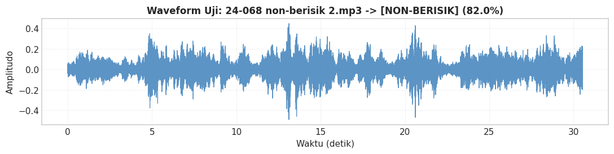
<div class="output stream highlight-myst-ansi notranslate"><div class="highlight"><pre><span></span>Mendiagnosis file: C:\Users\OKAN\OneDrive\Dokumen\PSD\materi\audio\berisik\24-179 berisik 2.mp3
[INFO] Sedang memproses dan menganalisis audio (~5-7 detik)...
</pre></div>
</div>
<div class="output stream highlight-myst-ansi notranslate"><div class="highlight"><pre><span></span>----------------------------------------------------------------------
HASIL DIAGNOSIS AUDIO : 24-179 berisik 2.mp3
----------------------------------------------------------------------
Status Prediksi    : [NON-BERISIK / TENANG]
Tingkat Keyakinan  : 59.00%
Distribusi Peluang : Berisik = 41.00% | Non-Berisik = 59.00%
Durasi Rekaman     : Awal 32.45s -&gt; Pasca Trim 32.22s (10 segmen chunk)
Energi RMS Rerata  : 0.03751
Centroid Frekuensi : 1348.9 Hz
----------------------------------------------------------------------
</pre></div>
</div>
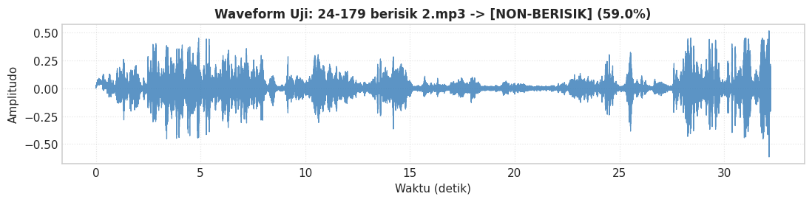
</div>
</div>
</section>
</section>
<hr class="docutils" />
<section id="kesimpulan-ringkasan-hasil-eksperimen">
<h2>11. Kesimpulan &amp; Ringkasan Hasil Eksperimen<a class="headerlink" href="#kesimpulan-ringkasan-hasil-eksperimen" title="Link to this heading">#</a></h2>
<p>Seluruh tahapan siklus sains data (<em>data science lifecycle</em>) untuk klasifikasi sinyal audio lingkungan telah berhasil diselesaikan secara komprehensif:</p>
<ol class="arabic simple">
<li><p><strong>Pre-pemrosesan Sinyal Audio:</strong></p>
<ul class="simple">
<li><p>Standarisasi frekuensi cuplik diseragamkan ke <span class="math notranslate nohighlight">\(22.050\text{ Hz}\)</span> sehingga batas Nyquist konsisten.</p></li>
<li><p>Pembuangan interval hening (<em>silence removal</em>) menggunakan threshold desibel <span class="math notranslate nohighlight">\(25\text{ dB}\)</span> efektif membersihkan segmen non-aktif di awal/akhir rekaman.</p></li>
<li><p>Segmentasi <em>chunk</em> berdurasi <span class="math notranslate nohighlight">\(3\text{ detik}\)</span> (<span class="math notranslate nohighlight">\(66.150\text{ sampel}\)</span>) menjamin konsistensi evaluasi frame-level.</p></li>
</ul>
</li>
<li><p><strong>Ekstraksi &amp; Agregasi Fitur Akustik (13 Koefisien MFCC sesuai md.pdf):</strong></p>
<ul class="simple">
<li><p>4 kategori fitur akustik fundamental (<code class="docutils literal notranslate"><span class="pre">RMS</span></code>, <code class="docutils literal notranslate"><span class="pre">Spectral</span> <span class="pre">Centroid</span></code>, <code class="docutils literal notranslate"><span class="pre">ZCR</span></code>, dan <strong>13 koefisien MFCC</strong>) diekstraksi menggunakan <code class="docutils literal notranslate"><span class="pre">librosa</span></code>.</p></li>
<li><p>Menghasilkan <strong>19 fitur numerik</strong> (6 fitur temporal/spektral + 13 koefisien MFCC) yang tersimpan pada <code class="docutils literal notranslate"><span class="pre">fitur_audio.csv</span></code>, <code class="docutils literal notranslate"><span class="pre">train_data.csv</span></code>, dan <code class="docutils literal notranslate"><span class="pre">test_data.csv</span></code>.</p></li>
</ul>
</li>
<li><p><strong>Seleksi Fitur Akustik (<em>Feature Selection</em>):</strong></p>
<ul class="simple">
<li><p>Menggunakan <em>Mean Decrease in Impurity</em> (MDI) Random Forest dan uji parametrik ANOVA F-Score, berhasil diidentifikasi fitur pembeda paling dominan: energi suara (<code class="docutils literal notranslate"><span class="pre">rms_mean</span></code>, <code class="docutils literal notranslate"><span class="pre">rms_std</span></code>), timbre suara manusia (<code class="docutils literal notranslate"><span class="pre">mfcc1_mean</span></code>, <code class="docutils literal notranslate"><span class="pre">mfcc3_mean</span></code>, <code class="docutils literal notranslate"><span class="pre">mfcc6_mean</span></code>, <code class="docutils literal notranslate"><span class="pre">mfcc7_mean</span></code>, <code class="docutils literal notranslate"><span class="pre">mfcc13_mean</span></code>, <code class="docutils literal notranslate"><span class="pre">mfcc5_mean</span></code>), serta frekuensi lintas nol (<code class="docutils literal notranslate"><span class="pre">zcr_mean</span></code>).</p></li>
<li><p>Berhasil memilih <strong>10 fitur inti optimal</strong>, merampingkan dimensi data dengan tetap mempertahankan akurasi prima.</p></li>
</ul>
</li>
<li><p><strong>Pemodelan &amp; Komparasi Machine Learning:</strong></p>
<ul class="simple">
<li><p>Pengujian pada 6 model klasifikasi membuktikan <strong>Random Forest Classifier</strong> mencapai performa tertinggi pada data uji independen dengan <strong>Akurasi 85.00%</strong> dan <strong>F1-Score 0.8500</strong>, disusul oleh Gradient Boosting dan SVM (RBF Kernel).</p></li>
</ul>
</li>
<li><p><strong>Implementasi Inferensi Pengujian Suara:</strong></p>
<ul class="simple">
<li><p>Berhasil dibangun fungsi inferensi <code class="docutils literal notranslate"><span class="pre">uji_klasifikasi_suara()</span></code> yang secara otomatis memproses file audio baru, mengekstrak 13 MFCC + fitur akustik, dan memberikan diagnosis kelas (<code class="docutils literal notranslate"><span class="pre">berisik</span></code> vs <code class="docutils literal notranslate"><span class="pre">non-berisik</span></code>) disertai persentase keyakinan probabilitas (<em>confidence score</em>) dan grafik <em>waveform</em>.</p></li>
<li><p>Bundle model telah disimpan ke <strong><code class="docutils literal notranslate"><span class="pre">model_klasifikasi_audio.pkl</span></code></strong>, siap diintegrasikan ke antarmuka aplikasi web.</p></li>
</ul>
</li>
</ol>
</section>
</section>

    <script type="text/x-thebe-config">
    {
        requestKernel: true,
        binderOptions: {
            repo: "binder-examples/jupyter-stacks-datascience",
            ref: "master",
        },
        codeMirrorConfig: {
            theme: "abcdef",
            mode: "python"
        },
        kernelOptions: {
            name: "python3",
            path: "./audio"
        },
        predefinedOutput: true
    }
    </script>
    <script>kernelName = 'python3'</script>

                </article>
              

              
              
              
              
                <footer class="prev-next-footer d-print-none">
                  
<div class="prev-next-area">
    <a class="left-prev"
       href="data_understanding.html"
       title="previous page">
      <i class="fa-solid fa-angle-left"></i>
      <div class="prev-next-info">
        <p class="prev-next-subtitle">previous</p>
        <p class="prev-next-title">2. Data Understanding: Klasifikasi Sinyal Audio Lingkungan (Berisik vs Non-Berisik)</p>
      </div>
    </a>
</div>
                </footer>
              
            </div>
            
            
              
                <div class="bd-sidebar-secondary bd-toc"><div class="sidebar-secondary-items sidebar-secondary__inner">


  <div class="sidebar-secondary-item">
  <div class="page-toc tocsection onthispage">
    <i class="fa-solid fa-list"></i> Contents
  </div>
  <nav class="bd-toc-nav page-toc">
    <ul class="visible nav section-nav flex-column">
<li class="toc-h2 nav-item toc-entry"><a class="reference internal nav-link" href="#pendahuluan-dan-metodologi-crisp-dm">📖 Pendahuluan dan Metodologi CRISP-DM</a></li>
<li class="toc-h2 nav-item toc-entry"><a class="reference internal nav-link" href="#persiapan-lingkungan-dan-impor-library">1. Persiapan Lingkungan dan Impor Library</a></li>
<li class="toc-h2 nav-item toc-entry"><a class="reference internal nav-link" href="#eksplorasi-dataset-audio-mentah">2. Eksplorasi Dataset Audio Mentah</a></li>
<li class="toc-h2 nav-item toc-entry"><a class="reference internal nav-link" href="#teori-dan-konsep-pre-pemrosesan-audio">3. Teori dan Konsep Pre-Pemrosesan Audio</a><ul class="nav section-nav flex-column">
<li class="toc-h3 nav-item toc-entry"><a class="reference internal nav-link" href="#a-resampling-pencuplikan-ulang-ke-22-050-hz">A. Resampling (Pencuplikan Ulang ke 22.050 Hz)</a></li>
<li class="toc-h3 nav-item toc-entry"><a class="reference internal nav-link" href="#b-buang-hening-silence-removal">B. Buang Hening (<em>Silence Removal</em>)</a></li>
<li class="toc-h3 nav-item toc-entry"><a class="reference internal nav-link" href="#c-chunking-segmentasi-sinyal-berdurasi-tetap">C. Chunking (Segmentasi Sinyal Berdurasi Tetap)</a></li>
<li class="toc-h3 nav-item toc-entry"><a class="reference internal nav-link" href="#visualisasi-komparasi-bentuk-gelombang-waveform-pre-pemrosesan">Visualisasi Komparasi Bentuk Gelombang (<em>Waveform</em>) Pre-Pemrosesan</a></li>
</ul>
</li>
<li class="toc-h2 nav-item toc-entry"><a class="reference internal nav-link" href="#teori-ekstraksi-fitur-akustik-dengan-librosa">4. Teori Ekstraksi Fitur Akustik dengan Librosa</a><ul class="nav section-nav flex-column">
<li class="toc-h3 nav-item toc-entry"><a class="reference internal nav-link" href="#root-mean-square-rms-energy">1. Root Mean Square (RMS) Energy</a></li>
<li class="toc-h3 nav-item toc-entry"><a class="reference internal nav-link" href="#spectral-centroid">2. Spectral Centroid</a></li>
<li class="toc-h3 nav-item toc-entry"><a class="reference internal nav-link" href="#zero-crossing-rate-zcr">3. Zero Crossing Rate (ZCR)</a></li>
<li class="toc-h3 nav-item toc-entry"><a class="reference internal nav-link" href="#mel-frequency-cepstral-coefficients-mfcc-13-koefisien">4. Mel-Frequency Cepstral Coefficients (MFCC - 13 Koefisien)</a></li>
</ul>
</li>
<li class="toc-h2 nav-item toc-entry"><a class="reference internal nav-link" href="#teori-dan-implementasi-agregasi-fitur-feature-aggregation">5. Teori dan Implementasi Agregasi Fitur (<em>Feature Aggregation</em>)</a><ul class="nav section-nav flex-column">
<li class="toc-h3 nav-item toc-entry"><a class="reference internal nav-link" href="#mengapa-agregasi-diperlukan">Mengapa Agregasi Diperlukan?</a></li>
<li class="toc-h3 nav-item toc-entry"><a class="reference internal nav-link" href="#ringkasan-tabel-dataset-hasil-agregasi-fitur">Ringkasan Tabel Dataset Hasil Agregasi Fitur</a></li>
</ul>
</li>
<li class="toc-h2 nav-item toc-entry"><a class="reference internal nav-link" href="#analisis-eksploratif-data-fitur-eda">6. Analisis Eksploratif Data Fitur (EDA)</a></li>
<li class="toc-h2 nav-item toc-entry"><a class="reference internal nav-link" href="#pembagian-data-data-splitting-train-test-split">7. Pembagian Data (<em>Data Splitting: Train/Test Split</em>)</a><ul class="nav section-nav flex-column">
<li class="toc-h3 nav-item toc-entry"><a class="reference internal nav-link" href="#metodologi-dan-kaidah-pembagian-dataset">Metodologi dan Kaidah Pembagian Dataset</a></li>
<li class="toc-h3 nav-item toc-entry"><a class="reference internal nav-link" href="#prinsip-penting-yang-diterapkan">Prinsip Penting yang Diterapkan:</a></li>
</ul>
</li>
<li class="toc-h2 nav-item toc-entry"><a class="reference internal nav-link" href="#seleksi-fitur-akustik-feature-selection">8. Seleksi Fitur Akustik (<em>Feature Selection</em>)</a><ul class="nav section-nav flex-column">
<li class="toc-h3 nav-item toc-entry"><a class="reference internal nav-link" href="#urgensi-dan-motivasi-seleksi-fitur">8.1 Urgensi dan Motivasi Seleksi Fitur</a></li>
<li class="toc-h3 nav-item toc-entry"><a class="reference internal nav-link" href="#dua-metode-seleksi-yang-digunakan">8.2 Dua Metode Seleksi yang Digunakan:</a></li>
</ul>
</li>
<li class="toc-h2 nav-item toc-entry"><a class="reference internal nav-link" href="#pemodelan-dan-komparasi-model-klasifikasi-machine-learning">9. Pemodelan dan Komparasi Model Klasifikasi Machine Learning</a><ul class="nav section-nav flex-column">
<li class="toc-h3 nav-item toc-entry"><a class="reference internal nav-link" href="#algoritma-klasifikasi-yang-dieksplorasi">9.1 Algoritma Klasifikasi yang Dieksplorasi</a></li>
<li class="toc-h3 nav-item toc-entry"><a class="reference internal nav-link" href="#pencegahan-kebocoran-data-data-leakage-prevention-dengan-pipeline">9.2 Pencegahan Kebocoran Data (<em>Data Leakage Prevention</em>) dengan Pipeline</a></li>
<li class="toc-h3 nav-item toc-entry"><a class="reference internal nav-link" href="#metrik-evaluasi-komprehensif">9.3 Metrik Evaluasi Komprehensif</a></li>
</ul>
</li>
<li class="toc-h2 nav-item toc-entry"><a class="reference internal nav-link" href="#implementasi-pipeline-inferensi-dan-pengujian-suara-baru">10. Implementasi Pipeline Inferensi dan Pengujian Suara Baru</a><ul class="nav section-nav flex-column">
<li class="toc-h3 nav-item toc-entry"><a class="reference internal nav-link" href="#konsep-dan-alur-kerja-inferensi-mandiri-standalone-inference-pipeline">10.1 Konsep dan Alur Kerja Inferensi Mandiri (<em>Standalone Inference Pipeline</em>)</a></li>
<li class="toc-h3 nav-item toc-entry"><a class="reference internal nav-link" href="#persistensi-model-model-persistence">10.2 Persistensi Model (<em>Model Persistence</em>)</a></li>
<li class="toc-h3 nav-item toc-entry"><a class="reference internal nav-link" href="#uji-coba-mandiri-coba-file-suara-anda-sendiri">10.3 Uji Coba Mandiri (Coba File Suara Anda Sendiri)</a></li>
</ul>
</li>
<li class="toc-h2 nav-item toc-entry"><a class="reference internal nav-link" href="#kesimpulan-ringkasan-hasil-eksperimen">11. Kesimpulan &amp; Ringkasan Hasil Eksperimen</a></li>
</ul>
  </nav></div>

</div></div>
              
            
          </div>
          <footer class="bd-footer-content">
            
<div class="bd-footer-content__inner container">
  
  <div class="footer-item">
    
<p class="component-author">
By Okan Syailendra Wahyudi
</p>

  </div>
  
  <div class="footer-item">
    

  <p class="copyright">
    
      © Copyright 2023.
      <br/>
    
  </p>

  </div>
  
  <div class="footer-item">
    
  </div>
  
  <div class="footer-item">
    
  </div>
  
</div>
          </footer>
        

      </main>
    </div>
  </div>
  
  <!-- Scripts loaded after <body> so the DOM is not blocked -->
  <script src="../_static/scripts/bootstrap.js?digest=dfe6caa3a7d634c4db9b"></script>
<script src="../_static/scripts/pydata-sphinx-theme.js?digest=dfe6caa3a7d634c4db9b"></script>

  <footer class="bd-footer">
  </footer>
  </body>
</html>